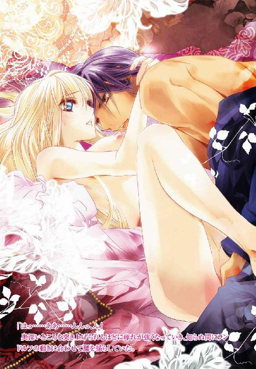
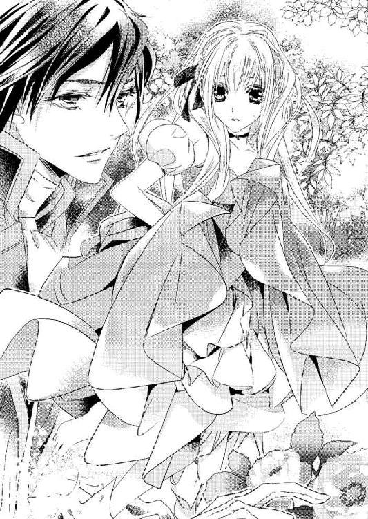

| ロイヤル・フィアンセ【SS付】【イラスト付】 ～国王陛下の淫らなくちづけ～ (ロイヤルキス文庫) | |
| 伊郷ルウ | |
| (2015) | |

この物語はフィクションであり、実在の人物・団体・事件等とは、いっさい関係ありません。
イラスト・池上紗京
青く晴れ渡った西の空に、沈みつつある大きな太陽が見える。赤々とした太陽はまるで燃えているかのようで、まともに目を向けることができないほどに眩しい。
ここは大河の南に位置するファンタック国。豊富な金を産出する鉱山に恵まれた大国だ。
「なんて強い陽差しなのかしら......」
王都の中心にある広大な宮殿の中庭に立つリリーシェ・ミーア・タナリッシュは、小さな手を額にかざして目を細め、これまで見たことがない太陽を見上げていた。
「空気までが違って感じられるから不思議」
ふっと小さく笑い、額にかざしていた手を下ろす。
腰まである豊かな金色の髪が、吹き抜けていく風にふわりと浮き上がる。
裾に向けて波打ちながら大きく広がっている長いドレスが、風を孕んで大きく膨らんだ。
「なんて気持ちいいの......」
リリーシェは細く尖ったあごを少し上げ、中庭に流れる風を全身で受け止める。
タナルート国の末姫リリーシェは、十四歳の誕生日を迎えたばかり。一度も国を出たことがなく、生まれて初めて訪れた異国は驚きの連続だ。
タナルート国は大河の北側にある。陽差しは年間を通して柔らかく、風はほどよい湿気を含んでいて肌に優しかった。
それに比べて、ファンタック国は驚くほど暑い。太陽の下にいるだけで、髪が熱を帯びるほどだ。空気も乾燥していて、すぐに喉が渇いてしまう。
けれど、それは嫌な感覚ではなかった。照りつける太陽も、乾いた風も、肌に心地よく感じている。
「せせらぎ......」
どこからともなく聞こえてきた小さな水音に、中庭を彩る極彩色の花々を眺めていたリリーシェは、耳を澄ませながら歩みを進めた。
悠長に中庭を散歩している余裕はない。日没とともに宮殿の大広間で晩餐会が始まるのだ。
ファンタック国とタナルート国は厚い信頼関係にあり、友好の証しとして大河を渡す橋の建設が決まった。
それを祝うため式典がファンタック国で催されることになり、タナルート国の国王夫妻が招待されたのだが、リリーシェは父王に無理を言って連れてきてもらった。
大河や、その向こうにある国を、どうしても自分の目で見たかったのだ。ファンタック国王は快くリリーシェを迎えてくれた。それだけに、晩餐会に遅れるような失礼は絶対にあってはならない。
頭ではわかっているのだが、異国は見るものすべてが新しく、旺盛な好奇心を抑えることができないでいた。
「あら、泉だわ！」
せせらぎを辿ってきた先に清らかな水を湛える泉を見つけ、弾んだ声をあげて足を速める。
静かにたゆたう泉の水面、そして、岸辺から広い範囲にわたって敷き詰められた白砂が、夕陽を受けてキラキラと輝いていた。
白砂には足跡ひとつなく、水面とともに煌めく光景は、まるで絵に描いたように美しい。
「なんて綺麗な水......」
目を凝らして見ると、奥のほうから水が湧き出している。
水底が見て取れるくらい、泉の水は透明度が高い。
普段とは異なる熱っぽい空気に、身体に火照りを感じていたリリーシェは、白砂の手前で足を止めて周りを見回し、誰もいないのを確かめてから靴と絹の靴下を脱ぎ捨てた。
さらにはドレスの裾を大胆にたくし上げ、すんなりと伸びた細い脚を剥き出しにする。
こんな姿を両親が見たら、卒倒してしまうかもしれない。国賓として迎えられた王女としてあるまじき行為だと、父王から大目玉を喰らってしまうかもしれない。
「誰も見ていないもの」
水浴びをしてみたいたい欲求に駆られたリリーシェは、少しも迷うことなく白砂に足を踏み入れる。
わずかに熱を含んだ白砂が、素足に気持ちいい。こんなにもサラサラとして砂に触れたことがない。
「私の足跡が残っているわ」
振り返ってみると、白砂に小さな足跡が等間隔で続いていた。
泉を独り占めしているようで、嬉しくなってくる。
水際まで来たリリーシェは、ドレスの裾をさらにたくし上げ、注意深く泉を覗き込む。
水底が先まで続いている。いきなり深くなっているわけではいなようだ。
膝下くらいまでの深さであれば足を取られることもない。
ドレスの裾が水に浸からないように気をつけながら、そろりそろりと泉に入っていく。
「きゃっ、冷たい......」
思いのほか水はひんやりとしていて、火照った肌からスーッと熱が引いていく感覚がなんとも気持ちがいい。
その場で足踏みをすると、パチャパチャと水が音を立てて波打つ。
煌めく水面が揺らめき、それが楽しくて何度も足踏みをする。
「ドレスが濡れるよりいいわよね」
両手で水をすくってみたくなり、たくし上げているドレスの裾を大きく開いたデコルテに押し込んだ。
ドレスを濡らしてしまったら言い訳をするのが難しそうだが、皺くらいなら誤魔化せそうな気がした。
両手が自由になったリリーシェは、わずかに身を屈めて両の指先を泉に差し入れる。
「ふふっ......」
清らかな水の感触に思わず笑い声がもれた。
王宮での暮らしでは、冷たい水に触れる機会がほとんどない。洗顔や手洗いには湯が用意され、湯殿でも水を使うことがないからだ。
それに、自国の王宮の庭園にも池や泉はあるけれど、水遊びなど絶対に許されない。だから夢中になってしまう。
「きゃっ......」
両手ですくい上げた水を高く飛ばし、はしゃぎ声をあげながら落ちてくる雫を避ける。
楽しくてしかたがない。何度も水をすくっては遠くへと放った。
煌めきながら散ってくる水が、リリーシェの輝く金の髪やドレスを次第に濡らしていく。
侍女が丁寧に櫛を入れ、リボンを結んでくれた髪も、今日の日のために母親が選んでくれた淡いクリーム色のドレスも台無しだ。
それなのに、水遊びをやめられない。いつもと異なる景色と空気、そして、強く照りつける夕陽に、気持ちが浮き立っているのだ。
「ああ、なんて気持ちがいいのかしら......水遊びがこんなに楽しいなんて......」
ひと息ついて空を見上げていたリリーシェは、ふと自分に向けられる視線を感じて身を硬くする。
（まさか......）
先ほど確認したときには誰もいなかった。
でも、間違いなく後ろに人がいる。いったい、いつから見られていたのだろうか。
にわかに鼓動が速まる。
（どうしましょう......）
目一杯、ドレスをたくし上げているから、下肢のほとんどが見えてしまっている。
今すぐ下ろしたいけれど、そんなことをしたらドレスが水に浸かってしまう。
そこにいるのが誰なのか、振り返って確かめたいのに、恥ずかしくてできないリリーシェがもじもじしていると、砂を踏みしめる音が聞こえてきた。
「プリンセス・リリーシェ？」
向けられたのは、確信が持てないような声。それもかなり若い男性の声だ。
呼びかけられてしまったのでは無視できない。覚悟を決めたリリーシェは、たくし上げているドレスを両手で抱え込むようにして、恐る恐る振り返った。
「ああ、やっぱりそうだ」
嬉しそうな声をもらした男性が、水際に歩み寄ってくる。
（誰かしら......）
艶やかな姿の男性を、リリーシェは息を呑んで見つめた。
兄と歳のころが似ているようだから、二十歳を少し超えたくらいだろうか。
身に纏っているのは上下ともに純白で、膝まであるブールも同じだ。
細身に仕立てた膝丈の上着には高い襟がついていて、金の刺繍がふんだんに施されている。
背が高く、少し長めの黒髪は艶やかで、肌はうっすらと日に灼けている。驚くほど端整な顔立ちをしていて、意思の強そうな黒い瞳が印象的だった。
こんなにも見目麗しい男性には会ったことがない。全身が光に包まれているかのように輝いて見える。
「僕のことを覚えてない？ 第一王子のランドルフだよ、謁見の間で挨拶をしたんだけどな」
水際ぎりぎりのところで足を止め、にこやかに見つめてきた。
謁見の間でファンタック国王と挨拶をしたのは数時間前のことだ。
人見知りもしないし、物怖じもしない性格ではあるが、他国の王と対面するのは初めてのことで、リリーシェはかつてないほど緊張していた。

どうにか滞りなく挨拶は終えたものの、紹介された王族の顔はうろ覚えの状態だ。
初めての謁見でしかたないこととはいえ、ランドルフほどの美男子すら記憶に残っていないのだから、どれだけ緊張していたのだろうかと我ながら呆れてしまう。
「ごめんなさい、私、とても緊張していて......」
恥じて苦笑いを浮かべたリリーシェに、ランドルフがスッと片手を差し出してきた。
「いつまでも水に浸かっていると冷えてしまうよ」
「ありがとう」
早くドレスを下ろして脚を隠したい思いから素直に礼を言って彼の手を取り、パシャパシャと音を立てて泉から上がる。
「あっ、あの......ごめんなさい、こんな格好で......」
脚に向けられるランドルフに視線に羞恥を覚え、デコルテに押し込んでいたドレスの裾を慌てて下ろした。
「プリンセス・リリーシェは綺麗な脚をしているね。水遊びをしている君を見つけたときは、泉の精が現れたのかと思ってしまったよ」
「そんな......」
真っ赤になってドレスの裾を整えているリリーシェは、男性に脚を誉められたことなどないから、どう答えていいのかわからず口ごもってしまう。
「素敵な脚をドレスで隠してしまうなんて、本当にもったない」
冗談とも本気ともつかないことを言って笑ったランドルフが、まじまじと見つめてくる。
ひどくあからさまな視線に、怒りを覚えるどころかドキドキしてしまう。屈託のない彼の笑顔が素敵すぎるからだろうか。
「髪が濡れてしまっているね」
さりげなく手を伸ばしてきた彼が、豊かに波打つ長い金の髪に触れてくる。
「これくらいなら、すぐに乾くから......」
湿った髪を指で弄ばれ、胸の高鳴りがどんどん大きくなっていく。
いったいどうしてしまったのか。こうした感覚を味わったことがなく、リリーシェは戸惑いを覚える。
「それなら、乾くまであそこで話しでもしていようか？」
ランドルフが泉の傍らを指さす。
目を凝らして見ると、岩ほどの大きさがある石が点在していた。
存在に気づかなかったのは、どの石も真っ白で白砂に溶け込んでしまっていたからだ。
「でも、晩餐会に遅れてしまわないかしら？」
「時間になれば誰かが呼びに来るよ」
今さらながらに時間が気になって躊躇うリリーシェに、気にする必要はないと笑ったランドルフが手を差し伸べてくる。
早めに晩餐会の席についたほうがいいとわかっているけれど、彼ともう少し一緒にいたい思いが勝ってしまった。
「そうね」
笑みを浮かべて手を取ったリリーシェは、彼に導かれるまま艶やかな白い石に腰かける。
中央が浅く窪んでいて座り心地がいい。ただの白い石だと思ったのは間違いで、休憩用に大理石で造られた椅子のようだった。
「殿下はお座りにならないの？」
目の前に立ったままのランドルフを、小首を傾げて見上げる。
「ランディと呼んでくれないか？ 家族はみな僕のことをそう呼ぶんだ」
「ランディ......」
他国の王子、それも世継ぎである第一王子を愛称で呼んだりして、失礼にならないのだろうかと戸惑いを覚えた。
「敬称は堅苦しいし、愛称で呼び合ったほうが親しみがあっていいと思うんだ。君はみなになんと呼ばれているんだい？」
「みな、リリィと」
「リリィ......素敵な響きだね」
ランドルフが満面の笑みでそう言いながら、目の前の白砂に片膝を立てて座る。
艶やかな盛装姿だというのに、砂の上にそのまま座ってしまうなんて驚きだ。けれど、彼はまったく気にしたふうもなかった。
「向こうに座るより、このほうが話しをしやすいだろう？」
笑顔のまま彼が見上げてくる。
愛称で呼ばれ、さらには正面から見上げられ、居たたまれないほどの恥ずかしさを覚え、リリーシェはさりげなく視線を落とす。
会話をするときは相手の目を見るようにと教わったけれど、強く輝く瞳で真っ直ぐに見つめられると、まともに目を合わせられそうにない。
それに、向かい合って座ったものの、異国の王子となにを話したらいいのかさっぱりわからなかった。
「リリィは大河を渡ったのは初めて？」
問われてわずかに目線を上げたとたん、笑顔でこちらを見ている彼と目が合う。
輝きの強い黒々とした瞳に惹きつけられる。なんて魅力的な微笑みを浮かべるのだろう。
「ええ、お城から出たのも、船に乗って大河を渡ったのも生まれて初めてのことよ」
楽しかった旅を思い出して声を弾ませると、ランドルフが不思議そうに首を傾げて見返してきた。
「これまで城を出たことがなかったのかい？」
「タナルート国の王女は、嫁ぐまでお城を出ることができないの。でも、私はどうしても外に出てみたくて......それで、お父さまに無理を言って連れてきていただいたの」
にこやかに答えたリリーシェは、青々とした拾い空を仰ぎ見る。
タナルート国の王女として、なにひとつ不自由することなく育てられた。
厳しい作法を学び、ピアノやダンスを習い、嫁ぎ先が決まるまで城から出ることなく親元で過ごす。王女とはそういうものだと思っていた。
けれど、歳を重ねて知識が増えていくと、城を出てみたい思いがいっきにあふれ出した。
隣国との境には大きな河が流れているという。船に乗らなければ向こう岸に渡れないほどの大河をこの目で見てみたい。そして、願いが叶うなら、対岸にあるファンタック大国を訪ねてみたい。
嫁ぐのはまだまだ先のこと。それまでずっと城の中で過ごすなんてできない。城の外に広がる未知の世界に対する思いが、日ごと強まっていった。
そうした中、偶然にも両親がファンタック国を訪問すると知ったリリーシェは、居ても立ってもいられなくなって父王に直談判したのだった。
「初めて目にした外の世界はどうだった？」
真っ直ぐに見つめてくるランドルフは、柔らかな笑みを絶やさない。
いっときも逸れることがない瞳が面映ゆかったけれど、リリーシェは言葉を交わす楽しさを感じ始めていた。
「馬車に乗ってお城を出たのだけれど、建物がたくさん並んでいる街、どこまでも続く石畳、行き交う人々......なにもかもが新しくて、とても不思議な光景だったわ」
初めて目にした街並みが脳裏にまざまざと蘇ってくる。
城で過ごしていたら知らずに終わっていた光景は刺激的で、船着き場に向かう馬車に乗っているあいだ、ずっと昂揚感に包まれていた。
「楽しめたみたいだね？」
「ええ、眺めているだけで楽しかったわ。それよりも、私、大河に驚いたの。あれが河だなんて最初は信じられなかったわ」
「ファンタック国とタナルート国の発展は、あの大河がもたらしているんだよ」
「交易に使われているってお父さまが教えてくれたわ。大河を行き来する船に、いろいろなものが積まれているって」
無意識に身を乗り出したリリーシェは、瞳を輝かせてランドルフを見つめる。
長い歴史を持つタナルート国では、いずれ嫁ぐ王女に自国の政治や経済を学ばせる必要がないと考えていて、リリーシェもそうした事柄と無縁に過ごしてきた。
与えられたドレスや宝飾品で着飾り、用意された贅沢な料理を食べる。それらが、どのようにして生産されたかなど、これまで考えたこともなかった。
だから、乗船中に父王が話して聞かせてくれなかったら、大河を渡って他国の物資が入ってきていることも、交易という言葉も知らないまま終わっていただろう。
父王がなぜそうした話をする気になったのかはわからない。長い船旅で話題が尽きたのかもしれないし、嫁入り前に外の世界に触れさせたからには、物資の流れくらいは教えておくべきと考えたのかもしれない。
ただ、それがあたりまえだと思っていた日常に、多くの人々が関わっていると知った驚きは大きく、リリーシェは父王から聞いた話をきっかけに、経済に関心を示すようになっていた。
「タナルート国からは定期的に大量の農作物が運ばれてくる。ファンタック国の土地はあまり豊かではないから、タナルート国で作られた農作物にずいぶん助けられているんだ。人々が食に困ることなく健康でいられるのは、君の国のおかげなんだよ」
「でも、ファンタック国は質のいい金や銀が採れるのでしょう？ 私の国にはない鉱山がたくさんあって産出量が豊富だと聞いたわ」
「そうだね。互いに不足しているものがある。だから、僕と君の国のあいだでは今も昔も盛んに交易が行われているんだよ。でも、両国がより発展するためには、もっと盛んにする必要がある。大河に橋を架けるのはそのためだ」
ランドルフは柔らかに微笑んでいて、口調もとても静かだった。
彼はまだ若いけれど、いずれファンタック国の王になる。静かな語り口に重みが感じられたのは、しっかりと先を見据えているからこそだろう。
「大河に架かる橋が完成したら、船だけでなく橋を使って交易を行うようになるの？」
「たくさんの荷馬車が行き交うようになる。想像してごらん、船着き場で荷を下ろし、荷馬車に積み替える手間もなく、そのまま市場に物資を運べるんだよ？ 橋の完成を待たずして、今以上の活気に溢れた市場が目に浮かぶようだ」
ランドルフが期待に瞳を輝かせて笑う。
こちらも自然とわくわくしてくるような、そんな笑顔だった。
「両国が栄えて人々が豊かになるのは素敵なことね」
柔らかに微笑んだリリーシェを、ランドルフが眉根を寄せて見返してくる。
「リリィは国の繁栄や人々の暮らしに興味があるのかい？ 十四歳の誕生日を迎えたばかりだと聞いているけど？」
彼は珍しいものを見るような顔をしていた。
思いをそのまま口にしただけなのに、なぜそんなふうに見てくるのだろう。
もしかして、経済に関することに言及するのは、王女らしからぬことだったのだろうか。
まだ十四歳なのに生意気なことを言ってと思ったのだろうか。
でも、すでに交易や大河に架かる橋について触れてしまったのだから、いまさら取り繕ってもしかたないような気がした。
「王女として国の繁栄を願っているし、初めてお城の外に出て、人々の暮らしにも興味を持ったわ。でも、私はもっといろいろなことを知りたくなっているの」
「たとえば？」
「今は大河に架ける橋にとっても関心があるわ」
「橋に？」
興味を示したように、ランドルフが顔を綻ばせる。
魅惑的な笑顔を見つめつつ、リリーシェは深くうなずき返した。
「ええ、あの広い河に橋を渡すなんて想像できないんですもの、どんなふうに出来上がっていくのか見てみたいわ」
自然と声が弾んでいた。
対岸も見えないほど雄大な河に、どのようにして橋を架けるのか。二国を繋ぐ橋はいったいどんな形をしているのか。外の世界すら知らなかった自分には、容易に思い描くことができないからこそ、興味が募ってしかたがないのだ。
「でも、橋を造り始めるのはまだ先なのでしょう？」
「二年後に着工と聞いているよ」
「そう......」
ランドルフは笑顔で答えてくれたけれど、リリーシェはため息をもらして肩を落とした。
残念そうな顔を見た彼が、どうしたのと言いたげに首を傾げて見返してくる。
「もう二度とお城の外に出る機会はなさそうだし、二年後には嫁ぎ先も決まっているでしょうから、橋を造っているところは見られそうにないわね」
細い肩をすくめ、意味もなく長い金の髪を指先で弄ぶ。
父王が何度も我が儘を聞き入れてくれるとは思わない。今回、同行することを許してくれたのは、いずれ嫁ぐ娘に一度くらいは旅をさせてもいいだろうという親心だったのだろう。
王女の嫁ぎ先は他国の王族と決まっている。いわゆる政略結婚であり、そうすることでタナルート国は無意味な戦いを回避し、長年に亘って平和を維持してきた。
十六歳の誕生日までには嫁ぎ先が決まる。もれ聞こえてきている嫁ぎ先の候補は、タナルート国の遙か北に位置する小国で、大河から遠く離れているのだ。
「大河に架かる橋......二国間を行き交う人々......活気に溢れた街......もっともっと見たかったから、残念でならないわ」
「リリィ、君はなんて素晴らしいんだ」
急に大きな声をあげて立ち上がったランドルフが、しなやかな黒髪を指先で掻き上げながら見つめてきた。
「ランディ？」
突然のことに驚き、リリーシェは目を瞠って彼を見上げる。
なぜ称賛されたのだろう。素直な気持ちを口にしただけだから、理解に苦しむ。
「君のような王女は初めてだよ」
一歩前に出てその場に跪いた彼に、膝に載せていた手を取られる。
「王女はみな豊かで贅沢な城での日々に満足していて、外でなにが起きているなど興味がないものとばかり思っていた。でも、君は違った......国と国を繋ぐ橋や、人々が暮らす街に関心があるなんて......」
信じられないと言いたげに小さく首を横に振ったランドルフが、リリーシェの手を取ったまま熱い眼差しを向けてきた。
魅惑的な黒い瞳に捕らえられ、にわかに羞恥を覚える。あまりにも熱っぽい視線に、居たたまれなくなってきた。
「ランディ......あの......」
「君のような女性をずっと探し求めていたんだ。どうか僕の妃になってほしい」
小さな手を両手でしっかりと握りしめたランドルフが、ずいっと身を乗り出してくる。
唐突すぎる求婚に息を呑んだリリーシェは呆然と見返す。
出会ったのはつい先ほどで、それほどたくさんの言葉を交わしたわけでもない。
それなのに求婚してくるなんて、彼はどうかしている。からかっているとしか思えない。
「今すぐ結婚するのが無理なのはわかってる、だから、もう少し君が大きくなったら......そうだね、君が十六歳の誕生日を迎えたら、正式にタナルート国王に結婚の申し入れをしよう」
「ランディ......」
リリーシェは目を瞠ったまま、何度も長い睫を瞬かせた。
冗談を言っているようには見えない。どうやらランドルフは本気らしい。
ひと目で惹きつけられた見目麗しい王子から、真剣に求婚されてしまった。
こんなことがあっていいのかしら。
結婚相手は父王によって決められ、不満を口にすることが許されない王女は、よく知りもしない男性のもとに嫁いでいく。
それが自らに定められた運命だと思っていたから、素敵なランドルフから求婚されて嬉しいのに、いきなりすぎて言葉がなにも出てこない。
「愛しいリリーシェ、どうか僕以外の男に目を奪われないで......」
さらに身を乗り出してきたランドルフにそっと抱きしめられ、胸が勢いよく高鳴った瞬間、唇を奪われた。
「んっ......」
予期せぬくちづけに、身体が硬直する。
素敵なだけでなく、自国に対する思いが深いランドルフは尊敬できる男性だ。
彼の妃になれるのは光栄なことであり、求婚を拒むつもりはない。でも、まだ父王の許可を得ていない。くちづけなど交わしてはいけない気がした。
「ふっ......」
柔らかに唇を啄まれ、肌が細波立つ。
すぐにでもくちづけから逃れたいけど、思いとは裏腹に力が失われていく。
愛おしむようなくちづけに、胸の奥深いところが熱く疼き出し、どうしたらいいのかわからなくなってくる。
「殿下？ ランドルフ殿下はおられますか？」
不意に聞こえてきた男性の声に、目眩を覚えていたリリーシェはハッと我に返り、ランドルフの胸を両の手で押し返した。
「時間切れみたいだ」
フッと笑って立ち上がった彼の唇が、うっすらと濡れて輝いている。
それが妙に生々しく目に映り、咄嗟に指先で自分の唇を押さえた。
「殿下......こちらにおられましたか。間もなく晩餐会が始まりますので、急ぎ大広間にお戻りください」
遠く離れたところから声をかけてきたのは、黒服に身を包んだ高齢の男性で、ランドルフの従者のようだ。
「わかった」
ランドルフが振り返ってうなずくと、従者は恭しく一礼して戻って行った。
「髪は乾いたかな？」
石に座ったまま硬直しているリリーシェの髪に、ランドルフが触れてくる。
彼はまるでなにごともなかったような表情をしていて、生まれて初めてのくちづけに動揺していたリリーシェは拍子抜けしてしまう。
とはいっても、くちづけされた直後だけに彼をまともに見ることができず、伏し目がちにうなずき返した。
「ええ......」
「本当だ、すっかり乾いている」
髪に触れて確かめた彼が、その手を差し出してくる。
「さあ、行こう」
手を取るのが恥ずかしかったけれど、晩餐会に遅れるわけにはいかないから、彼の手を借りて立ち上がった。
まだ鼓動が速い。ドレスに包まれた胸が、大きく上下している。大広間に戻るまでに収まるだろうかと心配になってきた。
ランドルフが繋いだ手を離してくれず、リリーシェは握り合ったまま中庭を歩き出す。
「あっ......」
足の裏に直に感じる白砂に、靴を履いていないことを思い出して立ち止まる。
「どうしたの？」
「私、靴を......」
すっかり忘れていた自分を恥じ、急いで脱ぎ捨てた靴を拾いに走った。
長い髪が風になびき、ドレスの裾が翻る。けれど、それを気にする余裕もない。
「私ったら......ずっと素足だったなんて......」
足はドレスの裾に隠れていて、ランドルフには見えていなかったはず。
それでも、晩餐会のために盛大に着飾っていながら、実は靴を履いていなかったというのが酷く間が抜けているように思え、消え入りたい気分になっていた。
「リリィ、僕が履かせてあげるよ」
すぐに追いついてきたランドルフが、リリーシェより先に靴下を取り上げる。
まだ彼の妃になったわけではない。世継ぎの王子といえども、勝手に結婚を決められるはずもなく、二年後に約束が果たせるかどうかもわからない。
今、自分の目の前にいるのは友好国の王子だ。そんな彼に靴下を履かせてもらうなんて失礼きわまりない。
「大丈夫、私......」
彼の手から靴下を奪い返したものの、ドレスを着たままどうやって履けばいいのか迷ってしまう。
「ひとりでは無理だろう？」
笑った彼に靴下を再び奪われる。
「ここならドレスも汚れないから座って」
彼は真っ白な砂を指してきた。
ドレスの裾を捲って素足を晒すこと、そして、彼の手を借りて靴下を履くことに躊躇いがあるリリーシェは、素直に座ることができない。
「早くしないと晩餐会に遅れてしまうよ」
急かすように言った彼が、靴下を手に目の前で跪く。
晩餐会に遅れることはできない。そんな事態に陥ったら、両親が恥を掻くことになる。
こうなったら、恥を忍んでランドルフに任せるしかない。
「ごめんなさい......」
消え入りそうな声で詫びて白砂に腰を下ろし、両の脚を投げ出す。
「姫君、おみ足を」
わざとらしく言った彼が、ドレスの裾を捲り上げていく。
次第に足が露わになっていき、ついには膝まで剥き出しになる。
見慣れた自分の足が、今はやけに淫らに感じられ、リリーシェは赤く染まった顔を背けた。
「きゃっ......」
踵に彼の手が触れ、咄嗟に足を引っ込めようとしたけれど、しっかりと掴まれてしまい、抗うこともできない。
「リリィの美しい足に触れられるなんて光栄だな」
ランドルフが楽しげに言いながら、足裏についている砂を払い落としていく。
柔らかに触れてくる指先がくすぐったい。
身の回りの世話をしてくれるのは側仕えの侍女で、いまだかつて男性に身仕舞いを手伝ってもらったことがない。
恥ずかしいのはもちろんのこと、とてもいけないことをしている気分になるのは、相手がランドルフだからだ。
同じ男性であっても、目の前に跪いているのが使用人であったなら、こんな気持ちにはならなかっただろう。
でも、自分では靴下が履けないのだから、彼に任せるしかないのだと自らに言い聞かせ、目を瞑っておとなくしくしていた。
「ついでだから靴も履かせてあげよう」
「そんな......」
慌てて止めようとしたけれど、彼はすでに靴を手にしていて、拒む間もなく小さな足を入れてしまう。
「さあ、これでいい」
靴を履いたリリーシェの足を、彼が満足そうに眺めてくる。
自分の足に注がれる熱っぽい視線に、全身が赤く染まってしまうほどの羞恥を覚えた。
「あ......ありがとう」
礼を言いつつ、あたふたとドレスの裾で足を覆う。
「どういたしまして」
にっこりと一礼したランドルフが、さっと片手を差し出してくる。
ドレスを着ているから、自力で立ち上がるのは難しい。
迷惑をかけてばかりだけれど、彼の手を借りるしかなかった。
「ありがとう」
にこやかに言って彼の手を取り、その場に立ち上がる。
乾いた白砂はドレスを汚すことなく、裾の乱れを整えるだけで身仕舞いを終えたときと同じ状態になった。
「陽が落ちてしまうな、急ごう」
西の空に目を向けた彼が、リリーシェの腰に手を添えて歩き出す。
エスコートすることに慣れているのか、彼は躊躇いもなく手を取り、腰を支えてくる。
リリーシェは一気に鼓動が跳ね上がった。
求婚されたうえに、くちづけまでされたのだから、触れられたら意識しないでいられるわけがないのだ。
「ああ、鐘が鳴り始めた......」
彼のつぶやきに耳を澄ましてみると、遠くから鐘の音が聞こえてきた。
晩餐会の開始を知らせる鐘を鳴らしているのだろう。
さすがにランドルフは焦りを感じたのか、にわかに歩みが速くなった。
身長がある彼とは歩幅に差があって、リリーシェはどうしても遅れがちになる。
「歩くのが速すぎる？ 抱いていってあげようか？」
歩みを緩めた彼に真顔で訊ねられ、リリーシェはとんでもないと首を横に振った。
「平気よ、急ぎましょう」
ランドルフを促しつつドレスの裾を少したくし上げ、急ぎ足で中庭を歩いて行く。
腰に手を添えられているだけでドキドキしているのに、抱き上げられたりしたら卒倒してしまうかもしれなかった。
そんな事態に陥ったら目もあてられない。とにかく、晩餐会に遅れないよう、彼に歩みを合わせなければ。
高鳴り続ける胸に「静まって」と心の中で命じながら必死に歩くリリーシェは、ランドルフと二人で大広間を目指していた。
十六歳の誕生日を迎えた朝、リリーシェは父王の部屋に呼ばれていた。
黄金の立派な椅子に煌びやかな黒い正装で腰かけている父王は、目の前で跪いている娘を愛おしげに見つめている。
純白のレースで仕立てた豪華なドレスに身を包み、金色の髪を柔らかに結い上げているリリーシェは、わずかに頭を垂れて父王から贈られる祝いの言葉に耳を傾けていた。
誕生日には必ず父王が祝ってくれる。けれど、王女にとって十六歳の誕生日は特別な意味を持つ。父王から嫁ぎ先が伝えられることになっているからだ。
「幼く愛らしかったおまえも、歳を重ねて美しく立派な女性となった。可愛い娘を嫁がせるのは寂しいものだが、父としておまえを送り出さねばならないときがきた」
穏やかな声で紡がれた父王の言葉に、リリーシェは静かに顔を起こす。
「おまえの嫁ぎ先は、かねてからの友好国であるファンタック国だ」
父王からついに嫁ぎ先が告げられ、喜びが湧き上がってくる。
ついにこの日がやってきた。ランドルフはあの日の約束を忘れずにいてくれたのだ。
「ファンタック国王から、おまえを妃に迎えたいとの申し入れがあった。おまえはファンタック国の王妃となるのだぞ」
「私が王妃に？」
「二年前にファンタック国を訪問した際に、おまえを見初めたそうだ」
父王は満面に笑みを浮かべている。
娘が王妃となるのだから、親として嬉しくてならないのだろう。
（なぜランディでなく国王陛下が私を......）
喜んだのもつかの間、嫁ぐ相手がランドルフではないと知ったリリーシェは、表情こそ平静を保っていたが胸の内は千々に乱れていた。
ファンタック国王は、確か父王と変わらない年齢だったはずだ。王妃は他界して独り身と聞いているから、妻を娶ること自体は問題ない。
だからといって、親子ほどの年齢差がある自分を妃に選らばなくてもいいのに──待っていたのはランドルフからの求婚
だったのに──。
夫婦となってともに歩めると思っていたランドルフが、義理の息子になってしまうのだ。やり場のない悲しみに襲われる。
「この婚姻によって、両国間の関係もこれまで以上によくなることだろう。ファンタック国王の妃となるおまえの存在は大きい、立派な王妃になるのだぞ」
おもむろに腰を上げた父王が、リリーシェの前に歩み寄ってきた。
「立ちなさい」
悲しみに打ちひしがれながらも必死に溢れそうになる涙を堪え、その場に立ち上がって真っ直ぐに父王を見つめる。
「ファンタック国王に望まれて嫁ぐおまえは幸せ者だ。王妃として迎えられるおまえを、私は心から誇りに思っている」
柔らかに微笑んだ両の手を広げた父王が、優しく胸に抱いてくれた。
父王の決めた結婚に逆らうことはできない。どれほど堪え難い結婚であっても、口に出すことは許されないのだ。
友好国であるファンタック国の王に嫁ぎ、二国間の関係をよりよい方向へと導くことが自分に課せられた使命だと受け入れるしかない。
「婚礼は一ヶ月後にファンタック国で執り行われる」
「一ヶ月後......」
日々は瞬く間に過ぎていく。
きっと一ヶ月などあっという間だ。
ファンタック国の王に嫁ぐ心構えが、それまでに整うだろうか。不安で押し潰されそうだ。
「婚礼までに花嫁となるおまえのためにいろいろ揃えたいところなのだが、親としてなにもしてやれなくなってしまったことを許してほしい」
「どういうことですか？」
耳をかすめた理解し難い言葉に、リリーシェは抱きしめてくれている父王の腕の中で顔を起こした。
「二日後の朝、ファンタック国より迎えが来る」
「そんな、早すぎます」
「王妃としての教育を施すため、身ひとつできてほしいとの申し出があった。私としても、嫁いだおまえが恥を掻くような事態は避けたいゆえ同意した」
「そんな......」
一ヶ月でも短いと思っていたのに、二日の猶予しかない。
心構えなどできるわけがない。王妃として迎えられる自分は、どんな顔をしてランドルフに会えばいいのだろう。
「明日の夜、おまえの婚姻を祝う晩餐会を催す。おまえとともに食事ができるのも明日が最後となるな」
優しく腕を掴んでリリーシェの身体を遠ざけた父王が、慈しむように見つめてくる。
ファンタック国王との結婚を、父王は喜んでくれているのだから、涙を見せてはいけない。
タナルート国の王女として心を強く持ち、晴れやかな顔で挨拶をしなければと、リリーシェは自らを鼓舞する。
「このたびの婚姻、とても光栄に思っております。タナルート国とファンタック国の友好を深めるお役に立てるよう、誠心誠意、努めて参ります」
悲しみを胸の奥深くにしまいこみ、最後に笑みを浮かべてみせた。
「幸せになるのだぞ」
「ひとつお願いがあります」
「申してみろ」
「先方から身ひとつでよいとのお申し出があったとこのことですが、侍女を伴うことをお許しいただけますでしょうか？」
「かまわんだろう。ファンタック国王宛に、その旨、私が一筆したためておく」
「ありがとうございます」
しっかりとした口調で礼を述べたリリーシェは、椅子に腰を下ろした父王に一礼して背を向け、開かれた扉へと足を進める。
十六歳の誕生日を待ち焦がれてきた。二年前、ファンタック国を去る直前に、ランドルフから書簡を手渡された。熱い思いを綴った書簡の最後には、十六歳の誕生日に必ず結婚を申し込むから待っていてほしいと記されていた。
ランドルフ自身が綴った言葉だから信じて疑わなかったのに、彼の父親に嫁がなければならない。
いったい、どこでどう間違ってしまったのだろうか。父親の再婚相手を知ったときのランドルフは、いったいなにを思ったのだろうか。
考えるほどにやるせなくなっていく。これは抗えない運命であり、受け入れるしかないのだとわかっていても、悲しみが込み上げてくる。
「リリーシェさま、お部屋に戻られますか？」
父王の部屋を出ていくと、廊下で控えていた侍女のトーニャ・フォンダンが静々と歩み寄ってきた。
濃紺のドレスに身を包み、長い赤毛を引っ詰めているトーニャは間もなく十八歳になる。
リリーシェが十三歳の時から側仕えとして働いてくれていて、主従の関係ではあるのだけれど、年齢が近いこともあってなんでも話せる姉のような存在になっていた。
リリーシェは彼女を嫁ぎ先に連れて行きたい思っている。ファンタック国は未知の場所ではない。それでも、たったひとりで異国に嫁ぐのは不安であり、トーニャは力強い存在になりそうな気がしていた。
「ええ」
答えを待つトーニャにリリーシェは小さくうなずき返し、先に立って廊下を歩き出す。
生まれ育った城で過ごせるのは、あと二日しかないのだ。
この身ひとつでいいと言われたからといって、手ぶらで嫁げるわけがない。
細々とした愛用の品々は持って行きたいし、ドレスや夜着、それに下着もいるだろう。
そうしたものを整えるのだって、本来なら今日明日では時間が足りない。
けれど、そんなことは言っていられなかった。準備が整っていなくても、二日後には有無を言わさず迎えの馬車に乗せられてしまうからだ。
「トーニャ、二日後の朝、ここを発つことになったわ」
「旅に出られるのですか？」
きちんと距離を取って従ってくるトーニャを、リリーシェは歩みを止めることなく軽く振り返る。
「嫁ぎ先から迎えがくるの」
「リリーシェさま！ おめでとうございます」
トーニャの弾んだ声が、静かな廊下に響いた。
彼女はリリーシェの婚姻を自分のことのように喜んでくれている。
けれど、結婚相手を知っても同じように祝ってくれるだろうか。それより、異国に嫁ぐ自分に、これまでどおり仕えてくれるだろうかと不安になる。
いかに使用人といえども、彼女には仕事を選ぶ権利がある。一方的に命じて無理やり連れて行くわけにはいかないのだ。
歩きながらする話ではない気がしたが、時間が惜しいリリーシェは歩みを緩めてトーニャに並んだ。
「嫁ぎ先でもあなたに側仕えとして働いてほしいのだけれど、異国に行くのはいや？」
「滅相もありません、リリーシェさまにお仕えさせていただけるなら、私はどこへでもお供いたします」
すぐさま答えを返してきたトーニャは、嬉しそうに笑っている。
考える時間がほしいと言われても、その余裕がなかったリリーシェはホッと胸を撫で下ろす。
「嫁ぎ先は、二年前にあなたも一緒に行ったファンタック国よ」
これから暮らす国を知らされたトーニャが、思いを馳せるように遠くを見つめる。
「ファンタック国といえば、お世継ぎがひとり......リリーシェさまはお世継ぎの妃になられるのですね。いずれ王妃になられる方にお仕えできるなんて、私、幸せすぎます」
「そうではないのよ」
「えっ？」
満面に笑みを浮かべていたトーニャが、リリーシェのひと言にきょとんとしてしまう。
十六歳で嫁ぐ王女の結婚相手が、親子ほど歳が離れた国王だと誰が思うだろうか。
「私が嫁ぐお相手は、ランドルフ殿下ではなく国王陛下なの」
リリーシェは自らに言い聞かせるように、トーニャに向けた言葉を噛みしめる。
「まあ、なんてこと......」
驚きが大きすぎたのだろうか、両手で口元を覆って足を止めたトーニャが、目を丸くして見返してきた。
「リリーシェさま、ファンタック国の王妃になられるのですか？」
「ええ、そうよ」
いったん足を止めてうなずいたリリーシェは、再び廊下を歩き始める。
王女は父王の命によって嫁ぐ。ファンタック国王との婚姻は覆ることがない。
この二年、ランドルフの妃になることだけを夢見てきた。その夢もファンタック国王からの求婚により呆気なく散ってしまった。
ファンタック国王の妃として迎えられる自分は、ランドルフの義母として生きていかなければならないのだ。
一生に一度の晴れの日も、きっと喜びに包まれることはないだろう。愛を誓い合って流すのは嬉し涙ではなく悲しみの涙。
けれど、それを悟られてはいけない。タナルート国の王女として、両国の繁栄に尽力すると父王に約束したのだから。
「わ、私などでよろしいのですか？ 王妃さまにお仕えするなんて、私......」
慌ててあとを追ってきたトーニャの声はかすかに震えていた。
王妃の側仕えになるのは大出世といっていい。けれど、一国の王の妃に仕えるのだから、それなりの覚悟も必要となる。
先ほどは即座に同行することを承諾してくれた彼女も、ここにきて萎縮してしまったのかもしれない。
ファンタック国王の妃になる運命は受け入れた。それでも、異国にひとりで嫁ぐ不安は拭えない。頼れるのはトーニャしかいないのだ。
歩みを止めて振り返ったリリーシェは、困惑も露わな顔をしているトーニャの手をそっと握り取る。
「王妃として迎えられるのは光栄なことだけど、私、とても不安なの......」
「リリーシェさま......」
「だから、私を一番よく知っているあなたに、これまでどおりそばにいてほしいの。あなたがいてくれたら、気持ちを強く持っていられると思うから」
縋る思いで見つめると、トーニャがきつく手を握り返してきた。
「リリーシェさま......私がおそばにおりますからご安心ください。至らぬところは多々あると思いますが、これからも一生懸命、お仕えさせていただきます」
「ありがとう」
トーニャの心強い言葉に、リリーシェは安堵の笑みを浮かべる。
「それにしても、二日後の朝とはまた急なことですね？」
「先方のご希望だからしかたないわ。とにかくお迎えが来るまでに支度を調えないとならないから、トーニャも手伝ってちょうだい」
「かしこまりました」
いつものように丁寧に頭を下げたトーニャに微笑み返したリリーシェは、急ぎ自室へと足を向ける。
トーニャは変わらず仕えてくれることになったけれど、すべての不安が拭い去られたわけではない。
自分にいきなり王妃という大役が務まるのか。ファンタック国の人々は年端もいかぬ異国の王女を王妃として受け入れてくれるのか。
そして、求婚すると約束してくれたランドルフは、新しい母親として自分を認めてくれるのか。考えるほどに不安が募ってくる。
記念すべき十六歳を迎えた今朝は、驚くほど爽やかな目覚めだった。それが、今は重苦しい気分になっている。
「私はファンタック国の王妃......」
真っ直ぐに前を見つめて歩きながらつぶやいたリリーシェは、その言葉を深く胸に刻み込んでいた。
馬車と船を乗り継ぎ、ファンタック国へとやってきたリリーシェは、そこかしこが黄金に輝く煌びやかな応接間に通されていた。
部屋の正面には色とりどりの宝石を贅沢に鏤めた玉座があり、中央に長椅子が向かい合わせで置かれている。
馬車で到着したリリーシェを迎えてくれたのは、制服に身を包んだ若い従者だった。
彼によって同行してきたトーニャとともに応接間へと案内されたが、中に通されたのはリリーシェだけで、彼女は廊下に控えている。
従者からここで待つように言われてから、いったいどれくらいの時が過ぎただろうか。
優雅な曲線を描く長椅子に浅く腰かけ、背筋を伸ばしているリリーシェは、あちらを見たりこちらを見たりと落ち着かない。
「ご挨拶の前に着替えたかったのに......」
長旅でドレスについてしまった皺を、小さな手で何度も伸ばすように擦る。
馬車に乗っている時間が長いため、座っていても窮屈にならないよう、数あるドレスの中から飾りが少ない普段着を選んでいた。
まさか到着してそのまま国王と対面することになろうとは、微塵も思ってもいかなかったからだ。
ドレスは高価な絹地で仕立ててあるけれど、華やかさの欠片もない。それに、髪もきちんと結っていないし、装身具のひとつもつけていない。
国王と会うのに相応しい姿とはとても言い難く、失礼にならないだろうかと不安になる。
「ああ、どうしましょう......」
時が経つほどに不安ばかりか緊張感まで高まっていく。
夫となる国王と面識はあるものの、言葉は二言三言しか交わしていない。
間もなく王妃となる娘が恥を掻かないよう、母が挨拶の言葉を教えてくれたけれど、すっかり頭から飛んでしまっている。
「リリィ！ 待っていたよ」
いきなり応接間に響いた声に驚き、そわそわしていたリリーシェは弾かれたように長椅子から立ち上がった。
「ランディ......」
大股で歩み寄ってくる黒い正装姿のランドルフを、息を呑んで見詰める。
いけないことだとわかっているのに、二年ぶりの再会に胸が弾んだ。
「リリィ、相変わらず可愛らしい」
目の前で足を止めた彼が、顔を綻ばせて見つめてきた。
二年前より逞しくなっているように見える。男らしさが増したというか、黒い正装に身を包んでいるせいか威厳すら感じられた。
「疲れただろう？ 君の部屋に案内しよう」
にこやかに言ったランドルフが、片肘を曲げてリリーシェの前に差し出してくる。
「ありがとう」
素直に礼を言って腕を取ると、彼が絡めた手に大きな手を重ねてきた。
「今日は疲れているだろうから、部屋でゆっくり休むといい」
ゆったりとした足取りで歩みを進める彼に歩調を合わせながら、リリーシェはさまざまな思いを巡らせる。
ランドルフが部屋に案内してくれるということは、今日は国王と会えないのかもしれない。
間もなく陽が落ちる時間だが、国王はまだ政務に追われているのだろう。父王も夜遅くまで会議をすることがあった。国を統べる王の仕事は楽ではないのだ。
とはいえ、嫁ぐために異国から遙々とやってきた王女を放っておくこともできず、王子のランドルフに接待を命じたのだろう。
ちょっと複雑ではあるけれど、この姿で国王と会わずにすみそうだと思ったら、気持ちが楽になってきた。
一夜明ければ旅の疲れも取れる。それに、やはり王妃として相応しい豪華なドレスを纏い、せいいっぱい着飾って挨拶がしたい思いがあったのだ。
「あっ、侍女をひとり連れてきたのだけれど......」
廊下に出てみたら控えているはずのトーニャが見当たらず、不安を覚えたリリーシェは足を止めてランドルフを見上げる。
「ここに来る前、君の父上からの親書を拝見したので、城の者に侍女を部屋まで連れて行くよう命じておいた。部屋は王妃の間の隣にあるから、用があるときはベルを鳴らして呼ぶといい」
彼が心配しなくても大丈夫だと言いたげに笑い、腕に絡めているリリーシェの手を軽く叩いてきた。
彼は見た目だけでなく、口調までもが二年前より男らしくなっている。たった二年でこんなにも変わるものなのだろうか。
初めて会ったとき以上に素敵な彼に、どんどんときめいていく。ランドルフの花嫁になれないのが悲しくてならない。
それなのに、彼は二年前の約束についてまったく触れてこない。なんとも思っていないのだろうか。
父親が先に求婚してしまった以上、どうすることもできないと諦めてしまったのだろうか。
なにか言ってくれてもいいのに。出会ったときと変わらない態度で接してくるから、よけいにもやもやとしてしまう。
「婚礼まで一ヶ月あるが、あまりのんびりはできないと思うぞ」
「なぜ？」
気分が暗くなりがちなリリーシェは、努めて笑みを浮かべる。
「昼はファンタック国の歴史や礼儀作法を学び、夜は晩餐会や舞踏会に出席して、王族、貴族、大臣、議員など何百という人の名前と顔を覚えなければならない」
「何百......」
思わずため息がもれた。
かなり大変そうだけれど、きちんと覚えなければ自分が恥を掻くことになる。王妃が笑われるようなことがあってはならないのだ。
「できるか？」
「ええ、物覚えはいいほうだから」
言い切れるほどの自信がなく、リリーシェは少し誤魔化した。
「花嫁衣裳も早々に決めないと間に合わなそうだ」
「こちらで用意してくださると聞いているけれど？」
「もちろんだ。だが、一生に一度しか着ることができないのだから、花嫁衣装は自分で決めたいだろう？」
「自分で選べるのね」
訝しい顔をしていたリリーシェの頬が自然と綻ぶ。
女性なら誰しも花嫁衣裳に憧れる。
たとえ望まぬ結婚であっても、王妃として添い遂げる決心をしたのだから、美しい花嫁でありたいと思う。
「形や生地を選ぶだけでもかなり時間がかかりそうだな」
ランドルフが楽しそうな笑い声を廊下に響かせる。
妃にするつもりでいた相手が父親に嫁ぐというのに、どうして笑っていられるのだろう。
ランドルフからの求婚を待ち焦がれていたのに、数え切れないほど愛の言葉を綴った熱烈な書簡を送ったことすら、彼はもう忘れてしまっているかのようだ。
国王の決定は絶対であり、実の子供であろうと逆らうことはできない。王女として生まれた自分がそうであるように、王子の彼もまた父王の決定を受け入れるしかなかった。
過去の出来事を記憶から消し去った彼は、気持ちを新たにして自分を迎えてくれたのかもしれない。
自分がいつまでも思いを引きずっていては、国王に対しても失礼になる。求婚の約束も、書簡に綴られた愛の言葉も、忘れてしまわなければいけないのだ。
「花嫁修業は大変そうだけれど、楽しいこともあるようね」
ランドルフへの思いを胸に押し込み、リリーシェは無理やり明るく振る舞う。
彼の腕を取って歩きながら言葉を交わすことは、もう二度とないだろう。
忘れなければと思ったばかりなのに、寂しさを覚えてしまう自分に呆れる。
「その先の赤い扉が王妃の間だ。侍女の部屋はこのあたりだが、裏廊下に扉があって、そちらから出入りするようになっている」
廊下を歩きながら、ランドルフが片手で壁を指し示してきた。
裏廊下は生まれ育った城にもあった。使用人たちが使うための廊下で、見えないように作られているのだ。
「さあ、どうぞ」
ファンタック国の紋章が黄金で描かれた真っ赤な扉を開けたランドルフが、仰々しく片手を差し出してくる。
わざとらしい大袈裟な態度がおかしく、リリーシェは目を細めて王妃の間に足を踏み入れた。
「まあ、素敵......」
眩しいほどの輝きに、思わず足を止める。
王妃の間は金と赤を基調にして造られていた。
壁は赤く塗られ、床には赤い絨毯が敷き詰められている。窓を覆う幕も赤い。
至るところに黄金が使われているのは、豊富な産出量を誇る国だからこそだろう。
圧巻なのは、正面奥にある巨大な寝台だ。四方に立つ黄金色の丸い柱、天井には金細工が煌めく天蓋があり、吊された赤いレースの幕が柔らかに波打っている。
敷き布も上掛けは艶やかな赤い布で仕立ててあり、こちらには金糸でファンタック国の紋章が刺繍されていた。
淡いピンク色を好むリリーシェの自室は可愛らしい雰囲気に包まれていたが、こちらは豪華絢爛といった感じで圧倒される。
強烈な色合いだけに、慣れるまでに少し時間がかかりそうだ。とはいえ、けっして不快な印象はなく、王妃の部屋に相応しい造りに思えた。
「今日からこの部屋で過ごすのね？」
ひとしきり部屋を見回し、なんとも興味深い寝台に歩み寄っていく。
「そうだよ、今日からここが君の部屋だ」
「本当に素敵」
寝台の端に腰かけたリリーシェは、前に立つランドルフをにこやかに見つめつつ、真っ赤な上掛けを掌でなぞる。
しっとりと滑らかで指先に吸い付いてきそうだ。さぞかし上等な絹地が使われていることだろう。
「国王の間はどこにあるの？」
普通に考えれば、王妃の間と繋がっていそうだが、それらしき扉が見当たらない。
「廊下のかなり先に黄金の扉がある。そこが国王の間だ」
「こちらとは繋がっていないのね？」
「いや、繋がっている。扉がどこにあるかは、そのうちにわかるだろう」
寝台の柱に寄りかかって腕組みをしているランドルフが、悪戯っぽい笑みを浮かべる。
部屋を眺めても気づかないのは、隠し扉になっているということだろうか。
夫婦が行き交う扉だから、鍵はついていないはずだ。政務を終えた国王が、いつこちらに姿を見せてもおかしくない。そんなことを考えたら、少し怖くなった。
でも、結婚が決まったとはいえ、婚礼は一ヶ月後だ。それに、まだ挨拶もすませていないのだから、いくらなんでも早まった真似はしない気がした。
「リリィ......」
急に寝台が大きく傾ぎ、物思いに耽っていたリリーシェはハッと我に返る。
「君がここにいるのが夢のようだ」
そっと頬に触れてきたランドルフが、親指でリリーシェの唇をなぞってきた。
こそばゆさに小さく肩を震わせながらも、熱い眼差しを向けてくる彼を驚きの顔で見返す。
「どうしたの？」
「愛しいリリィ......」
力強く抱き込まれ、くちづけられ、寝台に押し倒された。
長い金の髪が真っ赤な上掛けに広がり、柔らかに波打つ。
ドレスの裾が乱れ、レースをあしらった小さな靴が露わになる。
「んっ......」
ランドルフはなにを考えているの。くちづけ合うなんて、あってはならないこと。
顔を背けたいのにできないリリーシェは、あらんかぎりの力を込めて彼の広い背を叩く。
けれど、彼は気にも留めずくちづけを続けてくる。そればかりか、ことさら深く唇を重ねてきた。
「んん──っ」
差し入れてきた舌先で口内を舐め回されて愕然とする。
義理とはいえ母となる自分にこんな本気のくちづけをしてくるなんて、ランドルフは気が触れてしまったに違いない。
早く彼から逃れなければ。いつ政務を終えた国王が、こちらの部屋に入ってくるかわからないのだ。あまりにも危険すぎる。
「いやっ」
くちづけが浅くなった瞬間を逃さず、リリーシェは思いきり顔を背けて彼の唇から逃れた。 両の手を彼の胸に突っ張りながら、肩で大きく息をつく。
「なぜこんなことをするの？ 私は......」
「君を愛しているからだよ」
向けられる熱い眼差しに、激しく動揺する。
諦めたわけではないの？ 忘れてしまったわけではないの？ 豹変したランドルフの胸の内がわからない。
「だからって、こんなこと......」
変わらず自分を求めてくれるのは嬉しい。できることなら、ランドルフの妃になりたい。
けれど、国王との婚姻を覆すことは誰にもできないのだ。思いのままに抱き合えば、不貞を働くことになる。
この出来事が国王の知るところとなったりしたら、ファンタック国とタナルート国の友好関係すら揺らぎかねない。
「愛する女性を欲してはいけないか？」
逸れることのない魅惑的な黒い瞳が、焼け付くように熱く感じられる。
見つめられていると、身体ごと溶けていってしまいそうだ。
この二年、ランドルフだけを思ってきた。彼の妃となり、幸せな満ちた日々を送る自分を思い描いてきた。
「リリィ、俺には君だけだ」
柔らかに微笑んだ彼の唇が迫ってくる。
「ダメよ......」
唇が触れ合う寸前にリリーシェは顔を背けた。
誘惑に負けてはいけない。
王妃として生きると心に決めたのだから。
「もう待てない」
ぴったりと身体を重ねてきたランドルフが、ドレスの裾から手を入れてくる。
「やめて！」
リリーシェは必死に抗う。
拳で彼の背を叩き、懸命に足掻く。
けれど、逞しい彼はびくともしない。
絹の靴下越しに脚を撫でた大きな掌が小さな靴を掴み、いとも容易く脱がされてしまう。
ランドルフは本気なのだ。早く止めないと大変なことになる。でも、体重を掛けられていて彼の下から抜け出すことができない。
「お願い......花嫁は婚礼まで清い身体でなければ......」
力では対抗のしようがないリリーシェは、言葉で訴えるしかなかった。
けれど、涙ながらの懇願も彼の耳には届かない。
「互いに黙っていればいいだけのことだ」
意に介することなく言って退けたかと思うと、彼が急に身体を起こした。
口ではそう言いながらも、願いを聞き入れてくれたのだ。
重い身体が遠のいて安堵したのもつかの間、ヒョイと彼に抱き起こされ、背中越しに抱きしめられたリリーシェは唖然とする。
「なにをするの？」
「俺がどれだけ君を待ち焦がれていたかわかるか？ こうして触れ合えるようになったのに、おとなしくしていられるわけがない」
耳元で熱く囁いたランドルフが、リリーシェの豊かな胸の下をしっかりと抱え込み、ドレスの裾を捲り上げていく。
ふと気づけば靴も靴下も脱がされていた。己の素足がどんどん露わになっていくのが恥ずかしく、両の膝を立てて胸に引き寄せる。
けれど、脚を隠すつもりでやったのに、太腿まで露わになってしまった。捲り上げられていたドレスが膝から下腹へと滑り落ちたのだ。
贅沢に何枚ものレースを重ねた膨らみのあるドレスだったならば、きっとこんなことにはならなかっただろう。
旅の道中を楽に過ごすために、おとなしめのドレスを選んだのが災いしてしまったのだ。
「いやぁ......」
レースで仕立てた下着までが露わになり、リリーシェはどうにかして隠そうとドレスの裾を掴んで引っ張る。
「邪魔をするな」
あっさりと彼に手を払われ、下肢を隠すこともできない。
下着は膝上までの長さがあり、腿はレースに覆われている。それでも、下着など男性に見せるべきではないから、ただならない羞恥に襲われた。
「タナルート国の女性は、ドレスの下にこんなものを穿いているのか？」
リリーシェの肩にあごを預けたランドルフが、物珍しげにレースの下着を見つめてくる。
ファンタック国には女性用の下着がないのだろうか。こんな状況にあって、ふと疑問が脳裏を過ぎる。
ドレスの形態も自国のものとはかなり異なっていたけれど、女性が下着を着けないなんて驚きだった。
「可愛らしいものだな」
手を伸ばしてきた彼が、レース越しに腿を撫でてくる。
ぞわぞわっとするような感覚に、身震いが起きた。
「やっ......」
「どういった作りになっているんだ？」
初めて目にした下着に興味が湧いたのか、内腿に触れている指先をつけ根に向けて滑らせてくる。
「ダメッ」
リリーシェは咄嗟に彼の手を掴んだ。
下着は腰から太腿までを覆うように、筒状に仕立てられている。けれど、小用を足すときのために、脚のつけ根部分の中央は縫い合わされていない。
彼がそこに指先を探ったりしたら、女性が結婚まで守らなければならないたいせつな箇所に容易く触れてしまうのだ。
「なにがダメなんだ？」
拒絶の声をあげたことで、逆に彼の興味をそそってしまったようだ。
しまったと思ったところで、もう手遅れだった。
「ああ、ここが開いているのか」
合わせ目に辿り着いた彼の楽しそうな声に、腿をぴったりと寄せて力を入れたけれど、指先の侵入を防ぐことはできない。
「ひっ......」
合わせ目に沿って指を這わされ、ブルッと肩を震わせる。
「なかなかよくできているな」
感心気味につぶやきながら、指を前後させてきた。
「はっ......ああぁ」
ランドルフの指先が触れたそこから、甘い痺れが駆け抜けていき、震えが止まらなくなる。
かつて味わったことがない感覚に、激しく戸惑う。
普段は下着に隠されているそこは不浄の場所であると同時に、子を宿すために男性と身体を繋げる大切な場所だと教育を受けてきた。
けれど、触れられておかしな感覚を味わうことは教わっていない。いったい、この感覚はなんなのだろう。
甘くて、せつなくて、身体の力が勝手に抜けていく、とても不思議な感覚だった。
「ここに触れられて抗う気が失せたか？」
「そんなこと......」
ハッと我に返ったリリーシェはランドルフの腕から逃れようとしたが、甘い痺れが弾けた場所を指先で撫でられ硬直する。
「っ......」
先ほどよりも強烈な痺れに、喉の奥で声が詰まった。
触れられた場所が熱を帯び、トクントクンと脈打っている。
これもまた、初めて味わう感覚。
自分の身体になにが起きたのかわからなくて不安になったリリーシェは、身を縮めてランドルフを振り返る。
「怖がらなくていい。女性はみなここで悦びを覚えるんだ。今夜は身体を繋げずにいてやるから、安心して快楽に溺れるといい」
甘く囁いてきた彼に耳を甘噛みされ、くすぐったさにしどけなく身を捩る。
悦びだの快楽だの言われても、よくわからない。
身体を繋げなければ純潔は守られるけれど、そんなことに意味はない。彼とこうしていること自体が罪深いのだ。
「やっ」
膝を立てていた片脚をいきなり持ち上げられ、投げ出している彼の脚を跨がされた。
下肢が露わになっているだけでも恥ずかしいのに、脚を広げたはしたない姿に居たたまれなくなる。
「いやよ、こんなの......」
脚を戻そうとしたら、彼が太腿を掴んできた。
大きな手で簡単に動きを阻まれ、リリーシェは涙を滲ませる。
「ここには俺と君しかいない、恥ずかしがるな」
このまま彼に身を任せたら、自分はいったいどうなってしまうのだろう。
ランドルフとこうして淫らな行為に耽っている場合ではないのに、罪を犯しているというのに、本気で抗う気持ちが失せ始めていた。
「ここを弄られると、なにも考えられなくなるだろう？」
合わせ目から滑り込ませた指先で柔らかな茂みを掻き分け、熱く疼く小さな花芽をきつく摘まんでくる。
「っ......ぁ.........」
声にならない声が唇から零れ、彼の腿を跨いでいる脚がぷるぷると震えた。
「硬くなってきた」
なにを言っているのだろうと思う間もなく、摘まんでいた花芽を撫で回してくる。
さらには胸の下を抱え込んでいた手でドレス越しに乳房を鷲掴みにし、細い身体が跳ね上がるほど揺さぶってきた。
「ああっ......や......そんな......」
執拗に茂みの奥を弄られ、布の上から乳首を引っ掻かれ、全身が言いようのない痺れに包まれていく。
恥ずかしくてたまらないのに、身体を満たしていく感覚に溺れてしまいそうになっていた。
「ぅ......んん」
下腹の奥からにわかに熱いものが押し寄せ、リリーシェは慌てて彼の手を押さえる。
いまにも粗相してしまいそうなほど、切羽詰まった感覚に襲われたのだ。
「ああっ、やっ......私......」
「極まってきたか？ そのまま身を任せれば天国に行ける」
彼が口にする言葉はわからないことばかり。
極まるってなに？ このまま自分は天国に行ってしまうの？ 罪深い女でも天国へ行くことができるの？
途切れることのない強い痺れに、思考までが乱れてくる。もうどうなってもいいと思ったそのとき、全身が荒波に浚われた。
「ああぁ──」
下肢全体が蕩けるほどに熱くなり、震えが止まらなくなる。
「あああぁ─────」
抑えようがない声が二人だけの部屋に響く。
彼が触れているところでなにかが弾け、目の前を閃光が駆け抜けていった。
頭の中が真っ白になり、一気に脱力したリリーシェは、広い胸にその身を預ける。
「はぁ......」
「リリィ、これから毎日のように君をこの手に抱けると思うと、俺は嬉しくたまらない」
脱力しているリリーシェの頬に、ランドルフがくちづけてきた。
毎日？ 国王の目を盗んで、罪を犯し続けるつもりでいるの？ そんな大それたことが許されるわけがない。いつか二人とも罰せられる。
これきりにしなければいけない。もう二度と触れ合ってはいけない。そう伝えたいのに、唇を動かすだけの力すらなくなっていた。
「リリィ、愛してる」
ランドルフの声がひどく遠くに聞こえる。
神よ、罪深い私たちをお許しください──意識が遠のきかけていく中、リリーシェは神に祈ることしかできないでいた。
トーニャに身仕舞いしてもらったリリーシェは、若い従者に連れられ、こぢんまりとした中庭にきていた。ここで国王と朝食を摂るらしい。
ファンタック国の朝日はとても陽差しが強く、母国の朝とはまったく雰囲気が違っている。
これまでは朝の散歩が日課になっていたけれど、この国でそんなことをしたら瞬く間に白い肌が赤くなってしまいそうだった。
中庭に出たときはこんな場所で朝食を摂るのかと訝しがったけれど、席は木陰に設けられていて、肌が焼けるような思いをすることもなかった。
「変わった形式の朝食......」
テーブルも椅子もない。あるのは、青々とした芝の上に敷かれた毛足の長い真紅の絨毯と、色とりどりの丸い背あてだけだ。
「国王陛下とご一緒にここで食事をするということよね......」
絨毯に直に座って朝食を摂るのは初めてだから、本来であれば興味津々なのだが、今朝のリリーシェは他のことに気を取られていた。
食事の用意はまだ調っていない。料理は国王が来てから運ばれてくるのだろうか。
「そろそろいらっしゃるかしら......」
無意識に背あてのひとつを取り上げ、両手で胸に抱え込む。
妃として迎えてくれる国王に挨拶をしないければいけないというのに、罪を犯してしまったから気が重くてしかたがなかった。
昨夜のことは誰にも知られてはいけない。一生涯、自分の胸に収めておく必要がある。
義理の息子となるランドルフに淫らな行為を許した罪深い身でありながら、国王の隣で貞淑な王妃を装わなければならないのだ。
本当に王妃が務まるだろうか。自分より遙かに歳上の国王は、容易く不貞を見抜いてしまうのではないだろうか。不安ばかりが募ってくる。
「おはよう、リリィ」
中庭に響いた爽やかな声に、物思いに耽っていったリリーシェは思わず背あてを放り出し、慌てて顔を上げた。
どうしてランドルフがここに？ 国王と二人きりで食事をすると思っていたから、予期せぬ登場に鼓動が跳ね上がった。
ランドルフは昨日と同じ艶やかな黒の正装で、背後に精悍な顔立ちの屈強そうな男性がひとり立っている。
ただの従者ではなさそうだ。かっちりとした水色の制服の胸には勲章、足元は黒い長靴、腰には長い剣を下げている。軍人かもしれない。
「よく眠れたようだな」
隣に片膝を立てて座ったランドルフが、リリーシェの顔を覗き込んでくる。
昨夜のことが思い出され、恥ずかしくまともに顔を見ることができない。
国王と挨拶をする前に、彼と会いたくなかった。
まさか、国王との朝食に同席するのだろうか。ランドルフと国王を前にして、平静を保てるわけがない。今すぐ逃げ出したい気分だった。
「そのドレス、よく似合っているな」
座ったまま少し身を引いた彼が、目にも鮮やかな青いドレスを纏ったリリーシェを、まじまじと見つめてくる。
こちらに来て初めて国王と顔を合わすのだから、失礼のないようにしなければと、持参したドレスの中でも特に気に入っている一着を選んだ。
深いデコルテには、水色のレースがたっぷりとあしらわれていて、本来は露わな胸元をほどよく隠している。
肩山を高く盛り上げて膨らませた袖は七分丈で、肘から袖口が細く仕立ててあった。
スカートの部分は青い絹地と水色のレースがたっぷり使われていて、真紅の絨毯に優雅に波打ちながら広がっている。
ふんわりと結い上げた長い金の髪には、首飾りと揃いの髪飾りを留めていた。大粒の真珠が鏤めてあり、清楚な印象になっている。
「青い瞳に合わせたのか？」
「そういうわけでは......」
昨夜と同じ熱っぽい眼差しに困惑し、リリーシェはさりげなく視線を逸らす。
国王の前では素知らぬふりをしてくれるのだろうか。こんなふうに見つめてきたりしたら、国王も妙に思うはずだ。
父王の妃になると知っていて愛を囁いてきたランドルフが、常識ある態度でいてくれることを祈るばかりだった。
「料理を並べてもよろしいですか？」
背後に立っていた男性から声をかけられたランドルフが、ふと思い出したように「ああ、そうか......」と小さくつぶやく。
「紹介するのを忘れていた。リリィ、彼は近衛師団長のルカナンだ。俺の護衛というか、お目付役といったところで、常に行動をともにしている」
ランドルフが振り返って見上げると、紹介された男性が姿勢を正してリリーシェに一礼してきた。
「近衛師団長、ルカナン・アザレです。王妃陛下おかれましては、ご機嫌麗しく......」
「堅苦しい挨拶など不要だ。それに、婚礼を終えるまではプリンセス・リリーシェだ」
「失礼いたしました」
「ルカナン、料理を運んでくれ」
ランドルフに窘められて苦笑いを浮かべたルカナンが、改めてこちらに頭を下げてその場を離れる。
なにげなく彼を目で追うと、大きな盆を両手で掲げ持った三人の女性が建物から出てきた。
ファンタック国の女官だ。揃いの黄色いドレスを身に纏い、長い黒髪を後ろでひとつに纏めている。
足首まであるドレスはすとんとしていて、半袖のきわめて短い上着を羽織り、腰に緩く紐状の帯を巻いていた。
ルカナンに先導され、女官たちが盆を高く掲げたまま静々とこちらに歩み寄ってくる。
絨毯の手前で足を止めてその場に跪き、身を乗り出して盆を下ろす。
彼女たちはひと言も発することなく、恭しく頭を下げると静かな足取りで戻って行った。
「まだ食べたことがないだろうと思い、君のためにファンタック国の伝統料理を用意させた」
座ったまま手を伸ばしたランドルフが、大きな盆をリリーシェの前に引き寄せる。
伝統料理とはどんなものだろうかと目を向けてみると、なんと盆の上に直接、料理が盛られていた。
肉には骨がついていて、魚には頭と尾がある。どちらもこんがりと焼いてあったが、見慣れない料理は少しおぞましく映った。
「ナイフもフォークも使わない。こうして手でちぎって、そのまま口に運ぶんだ」
身を乗り出したランドルフが、説明しながら実践してくれる。
「最初は戸惑うかもしれないが、慣れるとさほど手も汚さず食べられるようになる」
肉をちぎった指先を見せてくれたが、確かに汚れていなかった。
料理を口に入れたときに、指先を舐めたのだろう。
見ていて下品な感じはしなかったけれど、男性の前で料理を食べながら指を舐めるのは躊躇いがある。
ただでさえ、いつ姿を現すかわからない国王が気になっているリリーシェは、盆に手を伸ばすことができないでいた。
「食が進まないか？」
組み合わせた両手をドレスに下ろしたままのリリーシェを見たランドルフが、残念そうに肩を落とす。
「ごめんなさい......」
「気にするな」
かまわないと笑った彼が、後方に控えているルカナンを振り返る。
「あまり食欲がないようだから、果物を用意してくれないか」
「陛下、果物もいろいろございます。どのような果物をご所望で？」
ランドルフの脇に片膝をついたルカナンの問いに、リリーシェは引っかかりを覚えた。
彼の言葉には確かに違和感があった。いったいなんだろう。
「リリィの口に合いそうなものを見繕ってくればいい」
「陛下も召し上がりますか？」
「俺には葡萄を」
「御意」
すっくと立ち上がり、急ぎ足で建物に向かうルカナンを、リリーシェは訝しげに見つめる。
（陛下......？）
ルカナンはランドルフに「陛下」と呼びかけた。王子なのだから、敬称は「殿下」のはず。
常に行動をともにしているという彼が、主人の敬称を間違えるわけがない。
彼が「殿下」ではなく「陛下」と呼びかけたのは、ランドルフが国王だから？ でも、ファンタック国王の崩御は耳にしていない。いったい、どういうことなのだろう。
「どうした？」
いつまでもルカナンを見ているのを不思議がったランドルフが、リリーシェの脚を軽く叩いてきた。
「あっ、あの......」
「なんだ？」
「あの......国王陛下は......」
「どうした急に？ 俺のことはランディでかまわないぞ。それとも、王妃となるのだから、さすがに国王を呼び捨てになどできないか？」
笑っているランドルフを、リリーシェは瞳を瞬かせて見つめる。
（国王......ランディが国王......）
王位を継いだことを知らなかったから、勝手に勘違いをしてしまった。
婚姻の申し入れをしてきたのは、二年前に会った当時の国王ではなく、待ち焦がれていたランドルフだったのだ。
だから、昨夜の彼はあんなにも大胆な行為に出た。罪の意識を感じなくてあたりまえだったのだ。
「ランディ、私はあなたの妃になるのね！」
嬉しさのあまり弾んだ声をあげると、彼が怪訝そうに眉根を寄せて見返してきた。
「なにをいまさら......俺以外の誰に嫁ぐというんだ？」
「ランディ、ランディ、なんて素敵なの！」
ランドルフの胸に飛び込んだリリーシェは、思いの丈を込めて抱きしめる。
こうして抱き合っても、罰せられることはない。心いくまで抱き合えるのが、嬉しくてたまらなかった。
「リリィ、いったいどうした？」
「私、あなたが即位したことを知らなかったの。だから、私はあなたではなく、あなたのお父さまの妃になるのだと......」
しがみついていた腕を緩めて身体を引いたリリーシェは、羞恥に赤く染まった顔を隠すために上目遣いでランドルフを見つめる。
「とんでもない勘違いをしていたんだな」
なんとも言い難い顔つきで言われ、照れ隠しに苦々しく笑う。
「ごめんなさい......」
「昨夜、俺を拒んだのはその誤解のせいか？」
「だって......あなたは義理の息子になると思っていたから......」
ありのままを口にすると、彼が呆れ気味に笑った。
「義理の息子......俺はたとえ血が繋がっていなくとも、自分の母となった女性を抱くほど非道ではないぞ」
「あの......お父さまは、どうなされたの？」
おずおずと訊ねたリリーシェは、控えめに彼を見つめる。
「一年半ほど前に、晩餐の席で発作を起こして帰らぬ人となった。もともと心の臓が弱かったのだ」
「そう......本当にごめんなさい、私、知らされてなくて......」
王女ともあろう者が、隣国の王の逝去を知らないではすまされない。ましてや、ファンタック国は友好国であり、国王とは面識があったのだ。
こんな形で知ることとなってしまったのが恥ずかしくてたまらず、リリーシェは消え入りたい気分だった。
「君が気に病むことはない。父上には君を妃に迎えると報告してあったし、嫁いでくるのを楽しみにしていたんだ。きっと天国で喜んでくれている」
「本当に？」
「ああ、だから父上のためにも、俺たちは誰よりも幸せになるんだ」
「そうね、幸せにならなければ......私、あなたの妃になる日をずっと夢見てきたのだから」
先代の冥福を胸の内で祈り、顔を起こして真っ直ぐにランドルフを見つめ、リリーシェは柔らかに微笑む。
彼に元気づけられ、重苦しい気分も消え失せた。もう思い悩む必要もない。心はいつになく晴れやかになっていた。
「では、改めて再会を喜び合うか」
「あっ......」
きつく抱きしめられ、くちづけられる。
躊躇うことも、迷うこともなく、無心でくちづけ合える嬉しさに胸がいっぱいになった。
繰り返し唇を重ね合う。差し入れられた舌に、もう戸惑ったりしない。思いのままに舌を絡めた。
「ふっ......ん」
息苦しさに、重ねた唇の隙間から熱い吐息が零れる。
それでも、顔を背けることなく唇を貪った。
ランドルフと交わすくちづけはどこまでも甘い。身も心も蕩けそうになっている。
「リリィ、君が欲しい」
そっと唇を離した彼が、熱を帯びた瞳で見つめてきた。
「いいね？」
昨夜はあんなに大胆だったのに、同意を求めてくるなんて。身も心もひとつになりたい思いは同じなのに。
律儀なランドルフを胸の内で笑いながら、リリーシェはコクリとうなずき返す。
嬉しそうに微笑んだランドルフが、絨毯に置かれている盆を片手で遠くに押しやり、リリーシェの身体を横たえてくる。
すぐさま重ねられた大きな身体を両手で受け止めると、彼がまたくちづけてきた。
「んんっ」
唇を貪りながらドレスの裾を捲り上げた彼に、瞬く間に靴と靴下を脱がされ、素足に乾いた空気が触れる。
「リリィ、愛してる」
「私も」
息を触れ合わせて囁き、夫となるランドルフの瞳を見つめた。
生涯を捧げる相手はただひとり。それが彼であることの喜びを噛みしめる。
「ランディ......」
「陛下、お待たせいたしました」
再びくちづけようとしたそのとき、突如、ルカナンの声が響いた。
「きゃ─────っ」
叫び声をあげたリリーシェは、ランドルフの胸に顔を埋め、捲れ上がっているドレスの裾をあたふたと整える。
すっかり二人だけの世界に入ってしまっていて、自分たちが中庭にいることを忘れていた。
「ルカナン、しばらく外してくれ」
「はっ」
短く答えたルカナンが、すぐさま引き返していく。
リリーシェは足音が聞こえなくなるまで、ランドルフの胸に顔を埋めていた。
「もう大丈夫だ」
絨毯に片手をついて上体を浮かせた彼が、笑顔で見下ろしてくる。
羞恥に赤く染まった顔を見られるのが照れくさく、彼の首に両手を絡めて自ら唇を重ねた。 くちづけ合っていれば、視線を気にしないでいられるから。
それなのに、彼はすぐにくちづけをやめてしまった。
「あっ......」
頬に押し当てられた唇が首筋に移り、肌を啄むようにして鎖骨へと下りていく。
さらにはデコルテから強引に引き出された胸へと移り、小さな突起の先を舐められる。
「ひゃ......ん」
こそばゆさにおかしな声があがった。
同時にドレスの裾から忍び込んできた手で、下着の上から腿を撫でられ、全身が甘ったるい痺れに包まれていく。
「やっ......」
硬く凝った乳首を甘噛みされ、小さな痛みを感じて身を捩る。
彼が触れている胸や腿だけでなく、身体中が火照り出す。
我を忘れてランドルフに身を委ねても、誰にも咎められない。
蕩けそうなほどに心地よい彼の愛撫を、思う存分、味わっても、もう悔やんだりしなくていいのだ。
「あ......ふっ」
腿を撫でていた手が、下着の合わせ目から入ってくる。
たいせつな場所を指先でなぞられ、身体のそこかしこが震えた。
「ここで身体を繋げ合うことを知っているか？」
胸に埋めていた顔を起こした彼が、秘所に触れている指にグッと力を入れる。
「あっ」
指が中に飲み込まれていくのを感じ、一瞬、身体が強ばった。
「恐いか？」
ランドルフの顔に迷いが浮かぶ。
男女の営みについては習っているし、ランドルフとひとつになりたいと願ってきたから、恐怖は感じないと思っていたのに、実際に触れられたとたん怖じ気づいてしまった。
この先は未知なる世界。恐いのはあたりまえなのだと自らに言い聞かせ、リリーシェは微笑んで彼を見つめる。
「平気よ」
「強がらなくてもいいんだぞ」
まだ迷いが消えないランドルフの顔をそっと両手で挟み取り、柔らかに目を細めた。
「強がってなどいないわ。私、あなたとひとつになりたの」
「リリィ、君はなんて素敵なんだ」
顔を綻ばせた彼がおもむろに起き上がり、ズボンの前を寛げていく。
急に羞恥を覚え、横たわったまま顔を背けて目を閉じた。
聞こえてくる衣擦れの音にさらなる羞恥を煽られ、リリーシェは逃げ出したい思いに駆られてくる。
「なっ......」
いきなり両の脚を開かれ、驚きに目を瞠る。
「うんっ」
広げた脚の中心に、熱を持ったなにかがあたり、無意識に歯を食いしばった。
「力を抜いていろ」
無理と答えるより早く、先ほど彼の指を受け入れていたとろこに、硬くて太いものが押し込まれる。まるで灼熱の楔を穿たれたかのように、そこが熱い。
「いやぁ......」
駆け抜けていった強烈な痛みに、涙が溢れ出す。
この痛みが、純潔を失った証しなのだろう。
「リリィ......」
ランドルフが身体を重ねてくる。
熱の楔がより深く埋め込まれ、息が詰まりそうになる。
「リリィ、大丈夫か？」
こちらを気遣う声が耳をかすめていった。
感じているのは、泣き叫びたいほどの激痛だ。
けれど、ランドルフとようやくひとつになれた喜びは大きく、痛みなど容易く掻き消されていく。
とめどなく溢れてくる涙は、嬉し涙に変わっていた。
「ランディ......私、嬉しい......」
両手で広い背を掻き抱き、涙に濡れた頬を擦り寄せる。
「俺もだ、リリィ、言葉にしがたいほどの喜びで胸がいっぱいだ」
熱を含んだ甘い彼の声に、またしても涙が零れた。
「ぅ......ん」
いきなり楔で奥を突き上げられ、大きく仰け反る。
何度も何度も繰り返される同じ行為に、小さな身体が激しく揺さぶられ、ドレスも結い髪も乱れていく。
「はっ......んく......」
彼が最奥を突き上げながら、露わな乳房を揉みしだいてくる。
小さな花芽を摘ままれ、ときに爪を立てられ、身悶えずにはいられない強い痺れが駆け抜けていった。
「君の中は温かくて柔らかい」
荒い吐息混じりの声が耳をくすぐってくる。
身体の中など、自分ではわからない。けれど、彼の言葉に喜びを覚える。内に感じている灼熱の楔が、愛おしくさえあった。
「はうっ」
大きく腰を引いた彼が、奥深くを目指して突き上げてくる。
熱く脈打つ楔に擦られる柔襞が、淫らに疼き出す。
どんどん身体の熱が高まっていく。病による熱とはまったく違う。燃え盛るような感覚は、目眩を起こすほどに心地いい。
「リリィ、俺のリリィ......ようやく手に入れた」
涙が滲む瞳に彼の顔はぼやけて映っているけれど、熱い眼差しが自分に向けられていることは、はっきり見えなくてもわかった。
力強い魅惑的な瞳に宿る彼の愛が、肌に染み渡ってくる。それが新たな喜びを生み出す。
「あっ......」
奥深くで熱が渦巻き出す。
それはどんどん大きくなっていき、熱の渦に飲み込まれてしまいそうだった。
「ランディ......私......」
「リリィ、俺とともに」
意味がわからない言葉を口にしたランドルフが、いきなり動きを速めてきた。
突き上げられるたびにずりあがった身体が、すぐに引き戻される。
心臓が早鐘を打ち、息が激しく乱れて苦しい。
「ああ──────」
熱の渦が堰を切ったように溢れ出してきた。
荒波に浚われるかのように、身体ごと熱に持って行かれる。
なにが起きているのかわからない。
考える力までも波に流されてしまったかのように、頭の中が真っ白になっている。
「リ、リィ、ああ、リリィ......」
切羽詰まった声をもらしたランドルフが、愛の証しを迸らせた。
焦がれ続けた男によって少女から女へと導かれたリリーシェは、己の内を満たす新たな熱の正体を知らぬまま意識を飛ばしていた。
ランドルフと身も心も強く結ばれたリリーシェは、ファンタック国の王である彼のよき伴侶となるべく、さっそく勉強を始めていた。
先生役を努めてくれるのはランドルフの妹、第三王女のシャミーナで、彼女に教わるよう勧めてくれたのは彼だ。
歳のいった教育係の厳しい教えを受けるよりも、楽しく学んだほうが覚えが早いというのが理由だった。
確かに、二歳しか違わないシャミーナは姉のように親しみやすく、部屋を訪ねてきてからいくらも経っていないのに、リリーシェはもう仲良くなっていた。
「椅子に座るときは、こうして肩掛けの裾を腕に巻きつけるのよ。そうすれば、踏まないですむから」
シャミーナが肩から垂れている長い布をさりげなく腕に巻きつけ、優雅な仕草で椅子に浅く腰かける。
彼女が身に纏っているのは、ファンタック国のドレスだ。胸元が深く開いたドレスは乳房の下で切り返してあり、柔らかな絹地が美しく波打ちながら足元を覆っている。袖はなく、代わりに膝の下まである長い肩掛けがついていた。
髪を結い上げる習慣がないようで、下ろしたままの艶やかな長い黒髪に黄金の髪飾りを留めている。
リリーシェは彼女と同じ形のドレスを身に纏い、結い上げていた金の髪を下ろしていた。
ファンタック国の王妃となるのだから、この国の伝統に従って過ごすべきと考え、まずはドレスを着たときの立ち居振る舞いから習うことにしたのだ。
とはいえ、自分用のドレスが仕立て上がるのはまだ先のことだ。幸いにもシャミーナの背格好がほぼ同じだったので、彼女のドレスを借りることになった。
これまで自国で着ていた窮屈なドレスとは異なり、腰の部分が締めつけられていないからとても楽だ。
ただ、下着を穿いていないせいか、なんとも腰のあたりが心許なく、慣れるまでに少し時間がかかりそうだった。
「さあ、座ってみて」
シャミーナに促され、リリーシェは肩掛けを腕に巻きつける。
「やだ......」
勢いをつけすぎてしまい、肩掛けが幾重にも巻きついてしまった。
「難しいわね」
「腕を軽く動かすだけでいいのよ。あまり大きな動きをすると、はしたないと思われてしまうから注意してね」
にこやかに言って立ち上がったシャミーナが、もう一度、実践して見せてくれる。
彼女を見つめつつ、さっそく真似をしたが上手くいかない。
「ダメだわ......」
上等な絹地は柔らかで、さしたる重みはない。ただ、肩掛けはかなりの長さがあるので、想像以上に扱いが難しいのだ。
「どうしても上手くできないようなら、このあたりを摘まんでもかまわなくてよ」
シャミーナが肩掛けの中央あたりを摘まんで持ち上げる。
そうして椅子に座れば、確かに肩掛けを尻に敷くこともなさそうだ。
「座ったときの見栄えがよくないわね」
試してみたものの、手を離すと肩掛けがだらしなく垂れてしまい、シャミーナのように凛とした美しさがなかった。
やはり、腕に巻きつけたほうがよさそうだ。なんとしてでも習得しなければと、リリーシェは繰り返し練習した。
「そうよ、それでいいのよ」
ようやく成功させたリリーシェに、シャミーナが惜しみない拍手を送ってくる。
辛抱強く付き合ってくれたうえに、自分のことのように喜んでくれる彼女の人のよさに、改めて感心した。
「どう？ さまになってるかしら？」
椅子に浅く腰かけて背筋を伸ばし、澄まし顔でシャミーナを見上げる。
「堂々としていて素敵よ」
「ありがとう」
たとえお世辞であっても嬉しく、自然に頬が緩んだ。
「次は座ってお茶をいただきましょう」
シャミーナが軽く手を打ち鳴らすと、彼女に仕える女官が姿を現した。
「お茶の用意を」
彼女の短い命に、恭しく頭を下げた女官が踵を返す。
「こちらにいらして」
窓際に置かれた丸いテーブルに移動したシャミーナから手招かれ、リリーシェは静かに立ち上がる。
王女である彼女の部屋は、重厚感たっぷりの王妃の間とは対照的に、壁、柱、天井のすべてが白い。
あしらわれている黄金の量も少なく、色鮮やかな花があちらこちらに飾られている部屋は、明るい雰囲気に包まれている。
ドレスのあしらい方を教わるために使っていた椅子をそこに残したまま、静かな足取りでテーブルに向かう。
ファンタック国の女性は、靴ではなく革のサンダルを履いている。この国のドレスに着替えたリリーシェは、習慣に倣ってシャミーナに借りたサンダルを履いていた。
踵がなく、素足で履けるサンダルは心地よかったけれど、気をつけて歩かないとペタペタと音がしてしまう。
足裏を擦るようにして歩くといいとシャミーナから教えられ、音を立てないよう注意深く足を進めた。
「こちらにどうぞ」
シャミーナが引き出した椅子を勧めてくれる。
先ほどと同じように、上手く肩掛けを腕に巻きつけられるだろうかと不安になった。偶然、成功しただけかもしれないからだ。
「ありがとう」
不安を胸にしまいこみ、にこやかに礼を言って軽やかに手を動かす。
すると、なんの苦もなく肩掛けが腕に巻きついてきた。
思わずもれそうになった安堵のため息を飲み下し、あたりまえのように笑みを浮かべて椅子に腰かける。
「リリィは覚えが早いわ」
満足そうに笑ったシャミーナが隣の席に腰を下ろすと、女官が盆を掲げて戻ってきた。
大きな楕円形の盆には、茶が満たされた持ち手のない透明なガラスのカップが二つと、焼き菓子を盛った皿が載っている。
並んで座っているリリーシェとシャミーナの前に盆を下ろすと、女官はそのまま一礼して下がっていってしまった。
どうやらこの国では、料理だけでなく茶器などの器も盆に載せたまま供するようだ。
二国を隔てるのは大河だけだというのに、身に纏うドレスの形や習慣がこんなにも異なっていることに驚かされる。
ファンタック国の王であるランドルフの妃に相応しい女性になるためにも、頑張って勉強をしなければとリリーシェは改めて心に誓った。
「さあ、いただきましょう」
シャミーナが盆からカップを取り上げる。
腕を上げたり伸ばしたりしても、巻きつけている肩掛けはずれたりしなかった。
なにかコツがあるのだろうかと思いつつ、姿勢を正したまま普段どおりに片手をカップに伸ばしてみる。
肩掛けはしっかり腕に巻きついたままだった。垂れ下がっている部分が長いため、思いのほか安定してるようだ。
「あっ......」
カップを手に取った瞬間、小さな声をもらした。
温かい茶だとばかり思っていたから、指に触れたガラスの冷たさに驚いたのだ。
「こちらでは冷たいお茶をいただくの？」
どうしたのと言いたげな顔をしているシャミーナに訊ね、カップの中で揺らぐ琥珀色の茶を興味深げに見つめ、少量を口に含む。驚いたことに、茶は冷たいだけでなく甘かった。
「熱いお茶もいただくけれど、昼間は暑いでしょう？ だから、私は冷たいお茶をいただくことが多いわ」
「どうしたら、これほど冷たくできるの？」
冷たい喉ごしに、リリーシェは目を瞠った。
冷めてしまった茶は飲んだことがあるけれど、この茶はそれ以上に冷たかったのだ。
「湯で入れた茶をいったん冷ましてから、ガラスの器に入れて泉の水に浸しておくと、半日ほどで冷たくなるのよ」
「冷たくて甘いお茶は初めてよ。それに、とてもいい香りがするわ」
リリーシェは微笑み、また茶を口に含む。
自国と異なる習慣には、新たな発見と驚きがある。
まだまだ覚えなければならないことが山ほどあるけれど、楽しみながら学べそうな気がしてきた。
「このお茶はジャスミンの花の香りをつけているの」
「ジャスミン？」
知らない花の名に、リリーシェは小首を傾げる。
「あら、リリィのお国にはない花なのかしら......」
「ジャスミンという花の名前は聞いたことがないわ」
「一緒に来て」
弾んだ声をあげたシャミーナが、カップを盆に下ろして立ち上がった。
急にどうしたのだろうかと不思議に思いながらも、カップを戻して椅子から腰を上げる。
「中庭にたくさん咲いているの。可憐な白い花で、強い香りを放つのよ」
リリーシェの手を握り取った彼女が、扉に向かって歩き出す。
ようやく彼女の意図を理解したリリーシェは、手を繋ぎ合ったまま足を進める。
小さなころから花が好きだった。さまざまな花が彩り豊かに咲き誇る城の庭園で、よく花摘みに興じたりしたものだ。
初めて名前を耳にしたジャスミンは、いったいどのような花なのだろうか。香りから花を想像するのは難しい。
早くこの目でジャスミンを見たくてたまらないリリーシェは、キラキラと輝く金の髪をなびかせながらシャミーナと中庭を目指していた。
＊＊＊＊＊
政務を終えて戻ってきたランドルフと晩餐をすませたリリーシェは、王妃の間に戻って夜着に着替え、長椅子でくつろいでいた。
純白の艶やかな絹地で仕立てた夜着は、タナルート国を出るときに荷に詰めてきたものだ。
よけいな装飾が施されておらず、襟も袖もついていない。丈は足首まであり、下に行くにしたがって緩やかに広がっている。丸い襟ぐりと胸の下に細紐が通されていて、自分の好みに調節できるようになっていた。
「今日はいったい何人の方とお会いしたかしら......」
長椅子に引き上げた両の脚を横に流し、肘掛けに片腕を預けて、シャミーナから紹介してもらった女性たちの顔と名前を思い出しながら、指折り数えていく。
タナルート国と異なり、こちらでは王族以外の人々もたくさん城の中で暮らしている。
政治に携わる役人、位の高い貴族、武官文官などで、家族もともに生活をしているため、その数は膨大なのだとシャミーナに教えられた。
男性陣がそれぞれの責務を果たしているあいだ、これといってすることもない妻や年頃の娘たちは、茶会を開いたり手芸をして過ごしているそうだ。
城は広大ではあるが、大勢の人々が暮らしているのだから、気が合う者ばかりではない。
女性たちはいつしか仲のいい者同士だけで集うようになり、城内には幾つものグループが確立しているらしい。
中には相容れないほど敵対しているグループもあり、ときに大きな争いごとが起こったりするのだという。
そうした説明を受けたあとに紹介されたのは、リリーシェと同世代の娘たちが集うグループだった。
誰もが初対面というだけでなく、時間が限られていたこともあって、会話が弾むまでには至らなかった。
「もっと親しくなるにはどうしたらいいのかしら......」
城で暮らしている彼女たちとは、これからもたびたび顔を合わせることになるだろう。
王妃になるとはいえ、同じ城の中で生活をしているのだから、同世代の女性とはできれば仲よくしたい。
「リリィ、まだ起きていたのか？」
考えごとに耽っていたリリーシェは、すぐ近くから聞こえたランドルフの声に驚き、ハッと息を呑んで片手を胸にあてる。
心臓が止まるかと思った。掌に大きな鼓動が伝わってくる。いったい彼はどこから現れたのだろう。隠し扉があるようなことを言っていたが、物音すら聞こえなかった。
「ランディ、驚かさないで」
「すまない、いちおう扉は叩いたんだが、聞こえなかったかな？」
濃紺のローブを羽織り、腰紐を結んでいるランドルフが、目を瞠っているリリーシェの隣に腰かけてくる。
「考えごとをしていたから......いったいどこに扉が？」
両の脚を下ろしてきちんと座り直し、乱れた夜着の裾を整えた。
「あそこだ」
彼が振り返ったほうへと目を向ける。
あるはずの大鏡が消えていて、暗い空間ができていた。
「うそっ......」
思わず立ち上がり、大鏡があった場所に駆け寄って行く。
「これが扉になっていたなんて......」
大鏡そのものが扉だったのだと気づいて唖然とする。
「この先に俺の部屋がある。行ってみるかい？」
いつの間にか脇に立っていたランドルフに、さりげなく腰を抱き寄せられた。
暗がりの奥に目を凝らしていたリリーシェは、興味をそそられて大きくうなずき返す。
「おいで」
腰を抱き寄せたまま、彼が暗がりに足を踏み入れた。
最初は真っ暗闇だったけれど、次第に目が慣れてくる。すぐ横に壁があり、二人で並んで歩くのがやっとの細い廊下になっているのだとわかった。
寄せ合っている身体の温もりを感じているのに、なんとなく暗がりが恐ろしく感じられ、彼のローブをキュッと掴んだ。
「怖いのか？」
「だって......」
意気地なしに思われたのが悔しくて言い返そうとしたけれど、言葉を口にする前に目の前が急に開け、ホッとひとつ安堵のため息が先にもれた。
彼が開けた扉の向こうは、巨大な天蓋付きの寝台が中央に鎮座する広々とした寝室だった。
王妃の部屋を赤の間と例えるならば、王の部屋は黄金の間となるだろうか。
天蓋はもちろんこと、部屋にある柱のすべて、天井の梁、床までが黄金色をしていて、他は白い大理石が使われていた。
ただ、これほど大量の黄金を用いていながら、派手派手しさがない。黄金の輝きが控えめなのだ。
光り輝かない黄金などあるのだろうかと不思議になり、ランドルフの手を逃れたリリーシェは、すぐそこにある柱に歩み寄っていった。
「これはなに？ どうして平らではないの？」
柱に目を凝らし、指先で黄金を撫でながらランドルフを振り返る。
「黄金の輝きを押さえるために、あえて細かく打ち出しているんだ」
「面白いことをするのね？ 黄金は輝いてこそ価値があるのだと思っていたわ」
「本来は磨き上げて価値を高めるものだが、こういった使い方も悪くはないだろう？」
「ええ、とても素敵」
見上げて微笑んだとたん、彼に足をすくわれ抱き上げられた。
「ランディ？」
「せっかく俺の部屋にきたんだ、今夜はこちらで休め」
抱き上げられたまま寝台に運ばれ、そっと横たえられる。
昨日、身体を繋げ合ったばかりなのに、またするのかしら？ そんな思いが脳裏を過ぎり、ちょっと後ろめたさを覚える。
なにしろ、まだ正式な夫婦になっていない。昨日は結婚相手がランドルフとわかった嬉しさに我を忘れてしまったけれど、本当は婚礼を前に身体を重ねるのはいけないことなのだ。
婚礼前に純潔を失ったことを後悔などしていない。それでも、これからは控えたほうがいいような気がした。
「まだ一緒に寝たりしてはいけないと思うの。私は自分の部屋で休むわ」
手をついて身体を起こそうとしたリリーシェを、寝台に上がってきた彼が険しい顔で押さえつけてくる。
「なぜだ？ 俺たちは夫婦なんだぞ？」
「まだ夫婦ではないでしょう？ ルカナンにもそう言ったじゃない」
自分で口にした言葉を、ランドルフはもう忘れてしまっているかのようだ。
彼の妃として嫁ぐことが決まっただけで、婚礼をすませるまでは婚約者でしかない。彼もそう考えているからこそ、ルカナンを諭したのではないのだろうか。
「この国における今の君の立場を明確にしただけであって、俺たちはもう夫婦になったも同じだ」
「そんなの矛盾しているわ」
勝手な言い分に思えて尖った声をあげると、彼が不機嫌そうに眉根を寄せた。
「確かに婚礼を終えなければ夫婦になったとはいえない。だが、婚礼などただの形式だ。俺たちは互いに同じ思いを抱いていて、身も心もひとつになった。夫婦になったも同然だと思わないか？」
「そうだけれど......」
困惑したリリーシェは、唇をきゅっと結んでランドルフを見つめる。
身も心も深く結ばれ、生涯を彼の妃として終える決意を固めた。気持ちはもうすっかり彼の妻になっていた。
それでも、城で暮らす多くの者たちは、婚礼が行われるまでは国王の婚約者という認識でいるだろう。
「まだなにか言いたいことがあるのか？」
真っ直ぐに見据えてくる黒い瞳を見つめ、リリーシェは小さくうなずき返す。
「ええ......」
「言ってみろ」
静かな口調で促してきたランドルフが、リリーシェの身体を押さえつけている手を離して起き上がる。
片膝を立てて寝台に座ったところを見ると、こちらの話に真面目に耳を貸すつもりがあるようだ。
一方的に自分の意見を押しつけることなく、きちんと向かい合おうとしてくれる彼が、これまで以上に好ましく思えた。
身体を起こしてちょこんと座ったリリーシェは、乱れた夜着の裾をさりげなく整えながらランドルフを見つめる。
「婚礼前に身体を繋げ合っていることを知られたら、私はきっとはしたない女だと思われてしまうわ。ルカナンはなにも言わずにいてくれたけれど、心の中では節操がないと思っているかもしれないでしょう？」
思いをありのまま言葉にした。
国を統べる王の命を守るため、多くの男たちが目を光らせている。衛兵、護衛、侍従、従者などにより、彼の行動は常に監視されていると言っても過言ではない。
それは、たとえ寝室であっても同じ。王に異常がないかどうか、どこかで誰かが神経を尖らせているはずなのだ。
「あの男は君のことをそんなふうに思ったりしない。それに、ここには俺と君しかいないというのに、誰に知られると言うんだ？」
「侍従や護衛がすぐ近くにいるのではなくて？」
呆れきったように言ったランドルフから視線を外したリリーシェは、黄金に彩られた壁や扉に目を向ける。
国王の間と王妃の間を繋ぐ隠し扉に、ずっと気づかずにいた。同じような扉がどこかにあってもおかしくない。
大きな物音をひとつ立てただけで、どこからか護衛が王の寝室に飛び込んでくる可能性も考えられるのだ。
「そんな心配は無用だ。たとえ侍従であっても許可なく部屋に入ることは許されていないし、この部屋の音は絶対、外にもれることはない」
「どうして？」
きっぱりと言い切った彼を、納得し難い顔で見返す。
音がもれない部屋を造ることなど可能なのだろうか。どれほど厚い扉であっても、完全に音を遮るのは難しいような気がした。
「四方の壁、そしてすべての扉に、厚い銀の板が埋め込まれているからだ。どれだけ叫ぼうが、誰の耳にも届かない」
「銀の板？」
「ここは国王を守るために造られた部屋であり、どんな手段をもってしても打ち破ることができない堅牢な部屋だから、君はなにも心配しなくていい」
それまで真面目な顔をしていたランドルフが破顔し、リリーシェにのし掛かってくる。
「あっ......」
「俺と二人きりでいるときは妻らしく振る舞ってくれるな？」
身体を跨いで馬乗りになってきた彼が、胸の下で結んでいる夜着の紐に手をかけてきた。
いますぐ抱き合いたい。そんな思いが、紐を解き始めた指先から伝わってくる。
誰にも知られないならいいと思ってしまうのは、本当はいけないこと。婚礼を終えて正式な夫婦になってしまえば、誰に遠慮もいらなくなる。どうして待ってくれないのかしら。
心の片隅にいるもうひとりの自分が咎めてくる。それでも、魅惑的な熱い眼差しで見つめられてしまったら、もう逸る気持ちを抑えることはできない。
「ランディ......」
「まだ異存があるのか？」
「いいえ、本当は私もこうしたかったの」
両手を伸ばしてランドルフの頬を挟み取り、柔らかに微笑んで引き寄せる。
「大好きよ、ランディ」
「リリィ、可愛い顔をして俺を煽るのが上手いな」
「煽ってなど......」
否定しようとした言葉が、押しつけられた唇に掻き消される。
「っん」
唇は荒っぽく重ねられたのに、交わすくちづけは驚くほど甘い。
零れる吐息、絡め合う舌に、体温が上がっていく。
夜着の紐を解かれ、裾から捲り上げられ、すんなりと伸びた脚が剥き出しになる。
内腿へと滑り落ちてきた手で柔肌を撫でられ、全身が細波立つように震えた。
「なぜ下着を着けていないんだ？」
「ファンタック国の妃になるからっ......んっ......こちらの習慣に従っ......」
続けられる愛撫に息が弾み、言葉が途切れがちになる。
腿のつけ根をなぞる指先がもどかしい。
快楽を覚えた秘所が、早くも彼を求めて疼き出していた。
「いい心がけだ」
耳元で満足げな声をもらした彼が、内耳を舐め上げてくる。
「あっ、ん」
くすぐったくて、またしても震えが走った。
唇が首筋に移り、さらなる下を目指していく。
「ふぁ......」
鎖骨を通りすぎた唇が、夜着越しに胸の突起を挟み取り、きつく吸い上げられる。
布に覆われた乳首をチロチロと舐められ、じんわりと広がっていくもどかしい痺れに腰をくねらせた。
「ランディ......」
しなやかな黒髪に指を滑り込ませ、愛される悦びに溺れていく。
「今日は新しい快楽を教えてやろう」
顔を起こしてそう言った彼が、勢いよく夜着の裾を胸下まで捲り上げ、投げ出している両の脚を左右に大きく割ってくる。
「やっ......」
秘所を露わにされ、慌てたリリーシェは両手で覆い隠した。
あちらこちらの燭台に火が灯されているから、部屋は昼間のように明るい。
このままでは、大事な場所を彼に見られてしまう。いくらなんでも恥ずかしすぎる。
「愛し合っているのだから、恥ずかしいことなどないだろう？」
にんまりとしたランドルフに、いとも容易く手を払われてしまった。
「いやよ、恥ずかしいもの」
払われた手で再び秘所を覆い、真っ赤に染まった顔を背ける。
どれほど愛し合っていても、身も心も結ばれていても、恥ずかしいものは恥ずかしいのだ。
「往生際が悪いぞ」
そんなことを言いながらも、ランドルフは楽しげだ。
「ここを弄ってほしいだろう？」
「ひっ───」
柔らかな茂みに隠された敏感な小さい花芽をなにかがかすめ、腰が大きく跳ね上がる。
触れたのは指ではないような感じがした。異なるなにか。指なんかより、何倍も気持ちがよかった。
「ラン......」
ふと頭をもたげたみたリリーシェは、驚くべき光景を目にして息を呑む。
あろうことか、ランドルフが大事な場所に顔を埋めている。
小さな花芽に触れたのは、彼の舌だったのだ。なんでそんなことをするのだろう。
にわかには受け入れ難い光景に、リリーシェは力任せに彼の頭を押しやる。
「そんなことしないで......いけないわ......」
必死の抵抗も虚しく、片腕で腰を抱え込まれてしまう。
いくら身を捩っても腕から逃れることができない。そのまま小さな花芽を舌先で執拗に舐め回され、下肢が甘く痺れていく。
「はっ......あああぁ......んふっ」
熱く疼き出したそこに歯を立てられ、ツキンとした痛みが走る。けれど、それはすぐに快感に取って変わった。
身体のそこかしこから力が抜けていき、彼の頭に載せている手が上掛けに滑り落ちる。
凝った先端を舐められ、甘噛みされ、何度も弾ける快感に下腹が大きく波打ち、リリーシェは我を忘れそうになった。
「指で弄られるより、よほどこちらのほうが気持ちいいだろう？」
熱を帯びた花芽をかすめた吐息に、現実へと引き戻される。
「いやよ......お願いだからやめて......」
蕩けてしまいそうなほどの快感が溢れかえっているけれど、羞恥が邪魔をして浸ることができない。
このまま快感だけ与え続けられたら、きっとおかしくなってしまう。それなのに、ランドルフは願いを聞き入れてくれなかった。
淫らな音が立つほどに先端を舐め回し、口に含んできつく吸い上げ、ときに歯を引っかけてくる。
とめどなくそこから湧き上がってくる強烈な痺れに、大きく開かされた脚や、投げ出している手が細かに震えた。
「ふっ......あっ、ああぁ......」
腰が反り返るほどにきつくそこを吸われ、より強い快感に全身が熱く燃えさかる。
小さい花芽が、ズクンズクンと脈打つ。そこが、ひどく肥大しているように感じられた。
羞恥はすっかり消え失せている。快感が渦巻く小さな花芽に、意識のすべてが向かっていた。
「っ......ああぁ......ぅふん」
勝手に腰が揺らめく。
舌先で嬲らて熱の花芽となったそこが、これまでになく敏感になっていた。
「ぁ、ん──っ」
先端を強めに噛まれ、痛みではなく快感が炸裂する。
下腹の奥深いところが激しく疼いて身悶えた。夜着の中で豊かな乳房が揺れ動く。硬く凝った乳首が絹地に擦られ、もどかしい快感をもたらす。
「ランディ......ああ、もぅ......」
覚えのある感覚が下腹の奥から湧き上がってくる。
それは、紛れもない絶頂を迎える兆し。
浮き上がった腰の揺らめきが大きくなり、赤く染まった全身の震えが大きくなる。
「ああぁ......くる......ラン、ディ......」
滑らかな上掛けに爪を立て、細いあごを反らす。
頂点はすぐそこにある。
身も蕩けるような快楽の波が、間もなく自分を浚っていく。
そのはずだったのに、絶頂はやってこなかった。
「やぁ......」
達せなかったリリーシェは、泣き声をあげて腰を激しく揺り動かす。
どうして、やめてしまったのだろう。こんなところで放り出すなんてひどすぎる。
「やめたわけではないから安心しろ」
笑い声を響かせながらリリーシェの裏腿を掴んだランドルフが、小さな膝頭を上掛けに押しつけてきた。
自然と尻が浮き上がり、先ほどより恥ずかしい格好をさせられたリリーシェは、足先をバタバタさせる。
「いや、こんなの......手を離して」
自分ですら見たことがない場所に熱っぽい視線を感じ、死にたいほどの羞恥に襲われた。
「ランディ、見ないで！」
声など届いていないかのように、彼が再び秘所に顔を埋めてくる。
「ひゃっ......」
食らいつく勢いで小さな花芽を口に含まれ、薄れかけていた快感が舞い戻ってきた。
広がっていく甘ったるい痺れに先が激しく震え、花弁の奥から蜜が溢れ出してくる。
「やっ......んっく......ぁ」
小さな花芽から花弁へと移った舌先が、勢いよく戻ってきた。
何度も繰り返され、抉るように舐められる花弁の奥までが痺れてくる。
「んんっ......」
秘所全体を丹念に舐められ、どこでどう感じているのかわからなくなってきた。
舌先が小さな花芽を捕らえると昇り詰めそうになるのに、すぐ離れていってしまうから、達せなくてもどかしい。
「いや、いやっ......ランディ......私、おかしくなってしまう......」
力なく彷徨わせた手で彼の頭を掴み、懸命に起こそうとする。
「なんだ？」
ようやく顔を上げた彼が、こちらを見つめつつ舌先で花芽を突いてきた。
「ひっ......ん」
駆け抜けていった快感に一瞬にして脱力し、彼の頭を掴んでいる小さな手がパタリと上掛けに落ちる。
「好きなときに達してかまわないんだぞ」
「無理......このままではともて......」
あと一歩のところでどうしても絶頂に届かないリリーシェは、涙を滲ませながら首を何度も横に振ってみせた。
「無理なはずがない」
せつなる訴えを却下した彼が、再び秘所に顔を埋めてくる。
「はっ、ああぁ」
花芽を舌先で突かれ、舐め回され、そこからじわりと広がっていった痺れに、リリーシェは妖しく腰を揺らす。
それでも、やはり絶頂は訪れない。このまま達することができなかったら、自分はどうなってしまうのだろう。
「んんっ」
口に含んだ花芽を舌先で弄びながら、ぐっしょりと濡れた花弁の奥に指を挿れてきた彼が、掻き混ぜるように動かしてくる。
長い指で最奥を突き上げられ、嬲られている小さな花芽だけでなく、内側でも快感が弾けた。
花弁から溢れ出した蜜が、指の抽挿に合わせてクチュクチュと淫らな音を奏で出す。
白い肌は赤く染まり、玉のような汗が浮き上がっている。
頬に張りつく金の乱れ髪を払うことも忘れ、快楽の海に引き摺り込まれていく。
「あっ」
汗に濡れた細いあごが跳ね上がる。
下腹の奥から、奔流が押し寄せてきた。
抗いようのない荒波に、身体が持って行かれる。
「いっ......は、あああぁぁぁ──あっ、あっ──────っ」
上掛けをきつく握りしめて仰け反り、白い喉を震わせて昇り詰めていく。
「はぁ......」
熱い吐息が零れ、激しく痙攣していた細い身体が弛緩する。
ようやく訪れた絶頂が、深い余韻をもたらす。
甘く痺れて脈打つ花芽、乱れた呼吸に激しく上下する乳房、投げ出している手脚のすべてが心地よさに満ちていた。
「無理ではなかっただろ？」
花弁の奥に挿れていた指を抜いて身体を重ねてきたランドルフが、優しく両の腕に抱きしめてくれる。
けれど、それはほんのいっときのことで、すぐさま身体をひっくり返された。
「ランディ？」
余韻に浸る間も与えてくれない彼を、リリーシェは恨みがましく振り返る。
「俺も楽しんだっていいだろう？」
悪戯っぽく笑った彼が、リリーシェの腰を掴むなりグイッと持ち上げてきた。
尻を高く上げた姿はまるで獣のようだ。
「いやよ、こんなの恥ずかしいわ」
腰を振って彼から逃れようとしたけれど、両脇をがっちりと掴んでいる手で動きを阻止されてしまう。
「恥ずかしいのは最初だけで、すぐに慣れるから大丈夫だ」
「でも......」
反論の余地なく背中を押さえつけられ、尻がより高く上がる。
「いやっ」
こんな格好はとても我慢できそうにない。
とにかく彼の手から逃れたい一心で、リリーシェは激しく腰を左右に振った。
「尻を揺らしておねだりか？」
いやがっているのを知っていながら、からかってくる彼が憎らしい。
先日のようにともに抱き合える格好であったなら、ここまで拒んだりしない。どうしてそれをわかってくれないのだろう。
「ここがどんどん濡れてくるぞ」
「ひ......んっ」
花弁に指を突き立てられ、息を詰めて仰け反った。
「気持ちよさそうな声だ」
高らかに笑った彼が、花弁から抜き出した指で花芽に触れてくる。
蜜に濡れた指で疼きが残るそこを擦られ、腰が砕けそうになった。
「ああぁ......」
恥ずかしくてたまらないのに、こんな姿を見られたくないのに、勝手に甘い声が唇から溢れ出してしまう。
「ここを弄るとこちらがヒクヒクと蠢くな。俺が欲しくなり始めたのではないのか？」
花芽を撫で回した指で、花弁をなぞってきた。
言葉にされたことで、意識が触れられている場所に向かう。
疼いているのは花芽だけではない。貫かれる悦びを知った花弁までもが、彼を待ち焦がれているかのように熱く疼いていた。
だからといって同意などできるわけがなく、リリーシェは深く項垂れたまま首を横に振る。
「うん？ 早く貫いて欲しいのではないのか？」
頭上から降ってきた意地の悪い声に、悔しさやら悲しさやらが込み上げてきて、唇を噛みしめた。
彼は恥ずかしがる姿を見て楽しんでいる。これは愛の行為であるはずなのに、なぜ弄ぶようなことをするのかわからない。
「どうして意地悪をするの？ 私はあなたとひとつになりたいだけ......こんなのはいや......」
羞恥に堪えがたくなったリリーシェが涙ぐんだ顔を向けると、背後で膝立ちになっていたランドルフが頬を引き攣らせた。
「リリィ......」
「こんな恥ずかしい思いをするなら、新しい快楽なんて知らなくていい......」
「君を愛しく思うあまり、急ぎすぎたようだ」
小さく息を吐き出した彼に、リリーシェは身体をそっと横たえられる。
「ランディ？」
「泣いたりするな。ひどい罪悪感に囚われる」
彼の瞳に宿っている後悔の念に、言葉が過ぎてしまったかもしれないと思い直す。
「ごめんなさい、泣くつもりは......」
指先で目元を拭い、広い胸に顔を埋めた。
「今夜はこのまま眠るとするか」
「でも、あなたのが......」
ローブ越しに、彼の屹立を感じている。
男性の身体について詳しくは知らないけれど、漠然とながらもこのままではいけないような気がしたのだ。
「恥ずかしがったり、俺を気遣ったり、本当に君は可愛いな」
柔らかに頭を抱き込んだ彼が、金の髪にくちづけてくる。
本来は優しい人だから、こうしているのはちっともいやではない。ずっと抱き合っていたいと思う。
先ほど、急に意地悪になってしまったのが信じられないくらいだった。彼には別の人格が潜んでいるのかもしれない。
「このままお休みしても大丈夫なの？」
胸に埋めていた顔を起こし、なにもする気配をみせない彼を見つめた。
「まあ、寝られないことはないが、君がいやでないなら......」
ランドルフが言葉を濁すなど珍しいことだ。
無理強いはしたくないのだろう。愛してくれているからこその、思いやりに胸が熱くなる。
「私、いやだなんて少しも思ってないわ。ただ......」
「昨日と同じならいいのだな？」
思いを読み取ってくれた彼に小さくうなずき返すと、すぐさま唇を塞がれた。
「んっ......」
深く唇を重ね、舌を差し入れてきた彼と甘いくちづけを交わす。
ねっとりと舌を絡め合うほどに、熱が冷めてしまっていた身体が再び火照り始める。
優しくて思いやりがあるランドルフが、たまらなく愛しい。ずっとこのままでいてほしい。
別の人格が突如、現れないことを祈りながら、彼の唇を貪る。
「あっ......ふ」
くちづけ合ったまま仰向けにされ、閉じている太腿を片手で大きく割られ、片脚の膝を立てられた。
脚を開かされたけれど、唇を重ねたままだから羞恥を感じない。花弁に熱の塊をあてがわれても、抗う気すら起きなかった。
「はぅ」
ググッと屹立を押し進められ、強烈な圧迫感に顔を背ける。
昨日ほどではないものの、花弁に痛みを感じた。
痛みを覚えるのは、純潔を失うときの一度だけだと思っていたから、予想外のことに身を硬くしてしまう。
「辛いか？」
しかめた顔を覗き込んできたランドルフは、ちょっと心配そうだ。
「いいえ、平気」
リリーシェが目を細めて否定すると、フッと安堵の笑みを浮かべた彼が、さらに腰を押し進めてきた。
熱を帯びた逞しい彼のあそこで、内側がいっぱいに満たされる。内壁に伝わってくる強い脈動に、ひとつになれた悦びを感じた。
「ああ、リリィ......たまらない......」
感じ入った声をもらしたランドルフが、リリーシェの肩口に顔を埋めてくる。
大きな身体に乳房を押し潰されて息苦しかったけれど、布越しに届いてくる彼の鼓動にさえ悦びを覚え、両の手でしっかりと抱きしめた。
「しばらくこのままでいさせてくれ」
「私はずっとこのままでかまわないわ」
顔を起こして頬を擦り寄せてきた彼が、リリーシェの答えを聞いて小さく笑う。
「ずっとは無理だ」
「そうなの？」
「俺はそれほど我慢強くない」
彼はまたしても笑い、耳たぶを甘噛みしてくる。
我慢とはどういうことだろう。あまり長くこうしていたら、別の人格が現れてしまうのだろうか。それは困るから、彼の思うままにしてもらうことにした。
「あなたの好きなようにして」
「俺の好きにしていいのか？」
悪戯めいた表情で問われ、慌てて前言を撤回する。
「違うわ、好きなようにしてはダメ、好きなだけこうしていてと言いたかったの」
必死な様子を笑った彼は、ひとしきり見つめてくると、再び肩口に顔を埋めてきた。
リリーシェはしっかりと彼を抱きしめたまま、そっと目を閉じる。
胸に伝わってくる鼓動は速く、内に感じる脈動は強い。
ひとつになれたからこそ味わえる感覚を、なにも考えることなく楽しむ。
「動くぞ」
しばらくじっとしていた彼が、耳元で囁くなり腰を使い始めた。
唐突に始まった抽挿に、リリーシェの小さな身体が揺さぶられる。
「あっ、ん......ああぁ」
灼熱の楔に擦られる花弁が、甘く痺れてきた。
さらには敏感な花芽を指先で嬲られ、夜着ごと乳首を口に含まれ、あちらこちらから快感が湧き上がってくる。
「はっ......ああ......んんっ、ん」
奥深いところを突き上げられるほどに痺れが強くなっていき、あごを反らして身悶えるリリーシェは、知らぬ間にランドルフの動きに合わせて腰を揺らしていた。
「ん、ふっ......」
花芽を乱暴に嬲られ、口に含んだ乳首に歯を立てられ、痛みを伴う痺れに全身が震える。
屹立を深く穿たれた花弁からは、とめどなく蜜が溢れ出す。
上体を起こした彼が抽挿を激しいものに変えると、花弁からもれる淫らな音が大きくなっていった。
「リリィ、ああ、リリィ......」
天を仰いだ彼が、抽挿をますます速める。
聞き覚えのある切羽詰まった声に彼も絶頂が近いのだと知り、リリーシェは悦びを分かち合いたくなり、自ら腰を揺り動かした。
「ひっ......ああっ......あっ......く......ぁ」
甘声がひっきりなしにもれる。
全身を満たしていくのは淫蕩な痺れ。無心に腰を揺らすほどに、それが強くなった。
「ラン......ディ......くるわ......」
「リリィ、俺も......すぐに......」
身体を重ねてきた彼が豊かな乳房を鷲掴みにし、何度も腰を突き上げてくる。
最奥で燃えさかっていた熱の塊が一瞬にして弾け、奔流となって押し寄せてきた。
「あ─────っ」
熱いうねりが身体を浚っていく。
灼熱の楔を穿たれたそこが、溶けていくようだ。
「リリィ」
乳房に指を食い込ませてきた彼が、ググッと腰を押しつけてくる。
「くっ......」
ランドルフが短く呻き、最奥に精を解き放つ。
昨日とは異なり、リリーシェは熱い迸りをはっきりと感じた。
「リリィ......」
ブルッと身震いした彼が、がっくりと項垂れる。
「ランディ......」
すっかり脱力していたけれど、彼を抱きしめたくて両手を大きく広げた。
嬉しそうに笑った彼が、繋がりを解いて身体を重ねてくる。
最奥に感じる迸りの熱、重ねた身体から伝わってくる激しい鼓動、首筋をかすめていく吐息のすべてが心地いい。
「愛しいリリィ、ゆっくりおやすみ」
荒い息遣いのまま耳元で囁いた彼が、抱き合ったまま横向きになった。
「おやすみなさい」
すっぽりと抱き込まれたリリーシェは、大きく上下する逞しい胸に顔を埋める。
間もなくするとランドルフの鼓動が静まり、穏やかな寝息が聞こえてきた。
早くも彼は寝てしまったようだ。そっと頭を起こし、端整な寝顔をひとしきり見つめる。
再会を果たしてまだ三日しか経っていない。それなのに、もう長いこと一緒に過ごしているような錯覚を起こす。
改めて広い胸に顔を埋めたリリーシェは、愛しいランドルフの腕に抱かれて眠る幸せを噛みしめながら深い眠りに落ちていった。
リリーシェがファンタック国にやってきて十日になる。その日々のほとんどを、王妃として相応しい女性になるための勉強に費やしてきた。
国の歴史はまだ覚えきれていないし、紹介されていない人物もたくさんいる。けれど、ドレスの着こなし、礼儀作法、踊れなければ恥を掻くという伝統的なダンスについては、すでにシャミーナから合格点をもらっていた。
自分用のドレスが仕立て上がり、振る舞いに自信が持てるようになったリリーシェは、城で暮らす女性たちとの親交を深めるべく母国式の茶会を開くことにした。
茶器一式、紅茶の葉、テーブルクロス、数種類の菓子を母国から取り寄せ、中庭に大きな楕円形のテーブルを用意してもらった。
茶会のために纏ったのは、光沢のある艶やかな真紅のドレスだ。もちろんファンタック国のドレスで、長い肩掛けには金糸の刺繍が贅沢に施されている。
豊かに波打つ金の髪に小粒の紅玉を鏤めた髪飾りを留め、大粒の紅玉をあしらった首飾りをしていた。
「これはなに？」
準備を手伝ってくれているシャミーナが、テーブルに置かれた箱を興味深げな顔で指さす。
彼女は涼しげな空色のドレスを纏っている。胸元が凝った形になっていて、金糸のレースで縁取られていた。
髪飾りにも金糸のレースがたっぷりとあしらわれていて、とても華やかな雰囲気を醸し出している。
「これはチョコレートボンボンというお菓子よ」
茶器を並べていたリリーシェは、厚みのある長方形の箱を引き寄せて蓋を開ける。
中を覗き込んだシャミーナが、不思議そうに目をぱちくりとさせた。
これはいったいなに？ そんな表情を浮かべたのは、彼女がチョコレートを見たことも食べたこともないからだ。
ファンタック国にチョコレートがないことを知ったのはつい先日のこと。茶会を開きたいと思い立ち、真っ先にランドルフに相談したときだった。
あれこれ話を進め、茶菓子にはなにがいいだろうかということになったとき、この国にチョコレートが存在しないことがわかったのだ。
交易が盛んに行われていて、農作物も大量に運ばれてくるのに、誰もチョコレートをファンタック国に持ち込まなかったらしい。
タナルート国ではいつもチョコレートを口にしていたから驚きが大きかったけれど、茶会の目玉になるような気がしてたくさん取り寄せていた。
「私の国では紅茶と一緒にいただくの」
「紅茶？」
「香りがよくて赤みがかったお茶。それより、チョコレートの味見をしてみない？」
リリーシェは箱からひとつ摘まみ取り、彼女の口に近づける。けれど、彼女はすぐに口を開けなかった。
幸せな気分になれる甘い菓子だとわかっているから、リリーシェは黒い塊を見て美味しそうだと思うけれど、味を知らなければ妙な食べ物に見えるのかもしれない。
「これがお菓子？」
眉根を寄せたシャミーナが、チョコレートを注意深く眺め、それから香りを確かめるように顔を寄せて鼻を動かす。
「甘い香り......」
パッと顔を綻ばせた彼女が、すぐさま口を開ける。
「噛まずに口の中で溶かしてね」
チョコレートを口にポンと放り込み、彼女の反応を楽しみに待つ。
彼女は神妙な面持ちで、頬張ったチョコレートを舐めている。
上質なチョコレートは、口に入れるとすぐ溶け出し、濃厚な香りと甘みが一気に広がる。
彼女の口角が徐々に上がっていく。彼女が気に入ってくれたのは一目瞭然だった。
「なんて美味しいの！ よそのお国にはこんな素敵なお菓子があるのね」
「もうひとつどうぞ」
物足りなさそうな顔をしているシャミーナの口に、リリーシェは摘まんだチョコレートを入れてあげる。
彼女は大喜びしてくれたのだから、きっと他の女性たちも気に入ってくれるだろう。取り寄せてよかったと、胸の内でほくそ笑む。
「リリーシェさま、お招きいただきありがとうございます。シャミーナさま、ごきげんよう」
同世代の娘たちが、連れだって現れた。
「よくいらしてくださったわ」
チョコレートの箱をテーブルに戻したリリーシェは、満面の笑みで迎える。
「ごきげんよう、リリーシェさま、シャミーナさま」
次から次へと着飾った娘たちが姿を見せ、次第に中庭が賑やかになっていく。間もなくして招いた十名の娘がすべて揃った。
「どうぞお好きなところに座って」
娘たちはいつもと異なる茶器が並ぶテーブルを眺め、声を潜めて言葉を交わしながら椅子に腰かける。
瞬く間に席は艶やかなドレス姿の娘たちで埋まり、リリーシェは少し離れた場所で控えているトーニャに、紅茶を淹れるよう合図を送った。
彼女の前には紅茶を淹れるための小さなテーブルがあり、湯を入れた大きなポット、茶葉を入れた容器、そして紅茶を淹れるためのポットが用意してある。
シャミーナと並んで腰かけたリリーシェは、慣れた手つきで紅茶を淹れていくトーニャを見つめた。
紅茶をこよなく愛するタナルート国の人々は、一日に何杯も飲む。砂糖は淹れずにそのまま飲む。目覚めに一杯、朝食を摂りながら一杯、食後にも一杯といった具合だ。
ファンタック国でも茶をよく飲むようだが、砂糖を入れて甘くしてある。甘みがない茶を気に入ってもらえるだろうかと、少し不安があった。
「失礼いたします」
茶器を手にしたトーニャが、娘たちの前に置かれたティーカップに紅茶を注いで回る。
半周したところでポットが空になり、小さなテーブルへと戻った彼女が、新たなポットを手に戻ってきた。
用意した十二客のすべてに紅茶が注がれ、トーニャが下がったところでリリーシェは軽く咳払いをして娘たちの注意を引く。
「お近づきのしるしに、私が生まれ育ったタナルート国のお茶と菓子を用意してみたの。どうぞ召し上がって」
こちらに注目している娘たちに笑顔で勧め、手本を示すためにまず自らティーカップを手に取り、淹れ立ての紅茶を啜る。
娘たちはそれぞれに顔を見合わせ、そろそろとティーカップに手を伸ばす。反応が気になるリリーシェは、紅茶を啜りながらさりげなく彼女たちの様子を窺った。
「あら、甘くないわ」
真っ先に驚きの声をあげたのは、宰相の娘、ミシェル・レナードだ。端麗な顔立ちで、とても大きな瞳をしている。身に纏った鮮やかな黄色のドレスに、真っ直ぐに伸びた艶やかな黒髪がよく映えていた。
数日前に彼女を紹介してもらったが、挨拶しただけで言葉を交わしていない。シャミーナによると、ランドルフと親しいミシェルは、このたびの婚姻に異を唱えているらしい。
国王の婚姻に反対するものがいるなどとは、これっぽっちも考えていなかったから、驚きが大きかった。
とはいえ、ランドルフの妃になるのは決まったことであり、若い娘が異を唱えたところでどうなるものでもないし、本気で反対しているのかどうかもわからない。
言葉を交わしてみなければ心の内を知ることはできないと考え、リリーシェは最初の茶会にミシェルを招いていた。
「私の国ではお茶に砂糖を入れないのよ。その代わり、こういった甘いお菓子をいただくの」
ティーカップを皿に戻したリリーシェは、テーブルに並べたチョコレートの箱を片手で指し示す。
「みなさんもお茶と一緒に召し上がってみて」
ミシェル同様、甘みのない紅茶が口に合わなかったのか、ひそひそ声で話しをしていた娘たちが、すぐさまチョコレートに手を伸ばした。
「見たこともない形と色のお菓子だわ」
「これがお菓子なの？」
「黒いお菓子があるなんて......」
初めてチョコレートに触れる娘たちは、みな興味津々といった顔をしている。
「チョコレートボンボンと言うのだそうよ。私は一粒で虜になってしまったわ」
弾んだ声をあげたシャミーナはよほど気に入ったのか、自ら摘まみ取ったチョコレートを口にポンと放り込む。
敬愛する王女がそこまで言うのならとばかりに、娘たちが次から次へと手にしたチョコレートを頬張り始めた。
娘たちの表情が徐々に変わっていく。驚きに目を丸くする者もいれば、嬉しそうに目を細める者もいる。
最初に浮かべた表情はさまざまだったけれど、最後にはみな幸せそうに微笑んでいた。
「こんない美味しいお菓子は初めてだわ」
「シャミーナさま、私も一粒で虜になってしまいましたわ」
「私も」
「ねえ、お茶が美味しく感じられてよ」
「あら、ほんと......」
紅茶を啜った娘たちが、笑顔を弾けさせる。
紅茶もチョコレートも気に入ってもらえたようだとわかり、リリーシェはホッと胸を撫で下ろす。
「ファンタック国にも自慢の菓子がたくさんあるというのに、異国の菓子に夢中になるなんてはしたないわ」
チョコレートを取り合ってはしゃいでいた娘たちが、ミシェルのひと声に静まり返る。一瞬にして和やかな茶会の空気が悪くなった
「ファンタック国の茶や菓子が口に合わなくて、お国から取り寄せたのかしら？ それとも自慢をなさりたかったのかしら？」
冷ややかに言い放ったミシェルが、射るような視線を向けてくる。
言葉など交わさずとも、敵意が宿った彼女の瞳をみれば、自分が嫌われていることは容易に察せられた。
茶会は始まったばかりなのに、嫌みを言われたリリーシェは早くも気持ちが挫けそうになる。
「ミシェル、次期王妃になんて失礼な、口を慎みなさい」
静かに紅茶を啜っていたシャミーナが、王女らしく毅然とした態度で窘めた。
「この人が次期王妃だなんて、私は認めないわ。これまでの王妃は、みなファンタック国生まれなのよ、異国に生まれた王妃などひとりもいない。この人を妃に迎えたりしたら、長いあいだ守られてきた王家の血が汚れてしまうわ」
「それはただの偶然でしょう？ 王家の血を汚さないために、ファンタック国に生まれた女性にかぎり妃に迎えるという話は聞いたことがないわ」
「公にしていないだけではなくて？ そうでなければ、これまでにも異国に生まれた王妃がいたはず。すべての王妃がファンタック国生まれであることには意味があるのよ」
強い口調でシャミーナに言い返したミシェルがすっくと立ち上がり、リリーシェを睨みつけてきた。
「異国の娘がファンタック国の王妃になるなんて、私は絶対に認めない。あなたは陛下の妃として相応しくない。この国に生まれた娘、それも由緒正しい家柄の娘こそが、陛下の妃になるべきなのよ」
声高に言い放ってツンと顔を上げたミシェルが、リリーシェを一瞥してテーブルを離れる。
「ミシェル、待って......」
ひとり、また、ひとりと席を立つ。
「シャミーナさま、失礼いたします」
娘たちはリリーシェに見向きもせず、足早にミシェルを追っていく。
彼女たちが無視をしてきたのは、ミシェルに倣ってのことだろう。次期王妃よりも宰相の娘を優先するなど、本来であれば許されることではない。
そうまでしてあと追っていったのは、宰相を父に持つミシェルが彼女たちより強い立場にあるからなのか。もしくは、次期王妃に対しても堂々と意見できる気丈なミシェルを信奉しているからなのか。
どちらなのかは知りようもないけれど、彼女たちの失礼な態度に腹が立つより悲しさが込み上げてきた。
崇め立ててほしいわけではない。世辞もいらない。ファンタック国の王妃として、みなに受け入れてもらいたかっただけ。
親しくなれると思っていた同世代の娘たちから拒絶され、リリーシェはいつになく気持ちが沈んでいた。
「せっかくの茶会が台無しになってしまったわね」
シャミーナが優しく手を取り、慰めてくれる。
「リリーシェさま、私たちも失礼してよろしいでしょうか？」
居たたまれなくなったのか、残っていた娘たちの中のひとりがおずおずと訊ねてきた。
無理に引き留めたところで、彼女たちは針のむしろに座っている気分で、場は盛り上がらないに違いない。
「また改めて茶会を開きましょう」
潔く茶会をお開きにしたリリーシェが席を立つと、シャミーナが続き、さらには娘たちが忙しなく腰を上げた。
「せっかくだから、これを持って行って」
手が着けられていないチョコレートの箱を取り上げ、伺いを立ててきた娘に差し出す。
「なんと光栄なこと」
嬉しそうに笑った娘が、恭しく頭を下げて箱を受け取る。
「みなさん、次の茶会にも是非いらしてね」
「リリーシェさま、シャミーナさま、失礼いたします」
にこやかにうなずいて声を揃えた娘たちが、連れだって戻って行く。
「はぁ......」
消え入りそうなため息をもらして肩を落としたリリーシェは、力なく椅子に腰を下ろす。
テーブルに残されたティーカップ、蓋が開いたままのチョコレートの箱ばかりか、中庭を吹き抜けていく乾いた風までもが虚しく感じられる。
「ミシェルの言ったことなど気にしてはダメよ、あなたはお兄さま......いえ、国王陛下に望まれてファンタック国の王妃になるのだから」
隣の席に座ったシャミーナに元気づけられ、何度も小さくうなずいてから真っ直ぐに顔を起こした。
「そうね、妃として迎えてくれるランディのためにも、立派な王妃にならなければ」
リリーシェのしっかりとした口調に、シャミーナが安堵の笑みを浮かべる。
「ミシェルはとても自信家で、常日頃から王妃に相応しい女性は自分以外にいないと言っていたの。だから、同じ歳のあなたが王妃になることがどうしても許せないのだと思うわ。王家の血がどうとかは関係なくて、あなたに嫉妬しているだけ」
「嫉妬？」
「そう、女性はともすれば嫉妬に駆られやすいものだから」
柔らかに微笑んだシャミーナが、ティーカップを取り上げて口に運ぶ。
「ああ、冷めてしまったわ......」
残念そうなつぶやきに、リリーシェは静かに振り返る。
「トーニャ、新しいお茶を淹れてちょうだい」
熱い紅茶を頼んで向き直ると、シャミーナがチョコレートの箱に手を伸ばしていた。
「これは高価なお菓子なのかしら？」
「いつも用意されていたので訊ねたことがないけれど、どうして？」
「人々の手に届くような値ならば、みな喜んで買うと思うの」
「そうね、あとでランディとお話してみるわ」
明るい声をあげたリリーシェは、すっかり元気を取り戻している。
政治や経済に感心を持っても、ランドルフは嫌な顔をしない。それどころか、王妃になるのだからもっと勉強すべきだと言われている。
交易がより盛んになるのは、二国間にとっても有益なこと。今日の茶会がきっかけで、ファンタック国の人々がチョコレートを口にできるようになるかもしれないのだ。
チョコレートだけではない。紅茶の葉も、嗜好品として受け入れられる可能性だってある。
逆に、ファンタック国には普通にあるものが、タナルート国では知られていないこともあるはずだ。
もっともっとファンタック国について知りたい。たくさんの知識を得て、二国のためになることを考えたい。
そうして、少しでも王であるランドルフの役に立つようになれたら、妃としてどれほど嬉しいだろうか。
「よかった」
シャミーナがしんみりとした声をもらし、急にどうしたのだろうかとリリーシェは目を瞠って首を傾げる。
「ミシェルに酷いことを言われても、あなたが挫けないでいてくれたから」
「私、挫けたりしないわ。ランディの妃になって添い遂げると心に誓っているんですもの」
「じゃあ、明日からまたお勉強を頑張りましょうね」
「もちろんよ」
満面の笑みでうなずき返した。
「前にお兄さまが、あなたについてお話してくれたことを思い出したわ」
「ランディが？」
「プリンセス・リリーシェは可愛いだけではないんだ。とても賢く、頼もしくもある。嬉しそうに笑ってそう言ったのよ」
「私のことをそんなふうに？」
「頼もしいなんておかしな言い方だとそのときは思ったけれど、どうやら間違っていなかったようね」
シャミーナに笑顔で見つめられ、面映ゆくなる。
頼もしいという言葉を喜んでいいものなのだろうか。でも、ランドルフがそう思ってくれているなら、より頑張ろうという気持ちになる。
「あなたなら立派な王妃になれるわね」
「なるわ、必ず」
声に自然と力が入った。
王妃になる迷いなどとうになくなっている。誰になにを言われても、ランドルフの妃として生きる気持ちは揺らがない。
あとは、ファンタック国のすべての人に王妃として受け入れられるよう、自らを高めていくだけ。
それがどれだけ大変であっても、ランドルフのためであれば苦しくない。そう思えるほど、今のリリーシェは晴れやかで前向きになっていた。
「私ひとりで決められるかしら？」
並んで廊下を歩いているシャミーナに、リリーシェは不安げな瞳を向ける。
今日は一日、ファンタック国の歴史を学ぶ予定でいた。それが、彼女と昼食を終えて学習部屋に戻ろうとしたとき、婚礼衣裳用の布地が届いたと伝えられ、急遽、小広間に向かうことになった。
今日のうちに生地を選ばなければならないのに、ランドルフは政務の真っ最中だから意見を聞くことができない。
晴れの日に纏う婚礼衣裳の生地選びだからこそ、彼と一緒に決めたかった。付き添ってくれるシャミーナには申し訳ないけれど、ランドルフがそばにいないのが残念でならなかった。
「あなたが選んだ生地なら、お兄さまもきっと気に入るわ」
「そうだといいけれど......」
そうつぶやいて肩をすくめ、小広間に入っていく。
四方の壁一面に乳白色の琥珀が嵌め込まれていて、光輝く黄金の装飾が至るところに施されていた。
アーチ状の高い天井には巨大なシャンデリア、大理石が敷き詰められた床の中央には緋色の絨毯が広げられている。
「まあ、すごい......」
緋色の絨毯に積まれた生地を見て、リリーシェは思わず目を瞠った。
筒状に巻かれていてる生地の山がふたつある。ひとつは金一色の山、もうひとつは色とりどりの山になっていた。
タナルート国の城で暮らしていたときにも、ドレスの生地選びをしている。それは女性の楽しみであり、リリーシェは嬉々として選んだものだった。
けれど、こんなにも大量の生地を一度に目にするのは初めてだ。今日中に、それも自分ひとりで決めることなどできるのだろうかと、少し心配になってきた。
「これはこれは、シャミーナ姫にはご機嫌麗しく」
絨毯に膝をついて山積みになった生地を整えていた初老の男性が、そそくさと立ち上がって歩み寄ってくる。
「ごきげんよう、タンガールさん。紹介するわ、こちらが国王陛下に嫁がれるリリーシェ姫」
「さようで......」
シャミーナの紹介を受けた男性がリリーシェに向き直り、深々と頭を下げてきた。
「リリーシェ姫、このたびは誠におめでとうございます。国王陛下とのご成婚を心よりお祝い申し上げます。わたくしは姫君のご婚礼衣装を仕立てさせていただく、仕立屋のタンガールでございます」
「タンガールさん、お祝いの言葉、有り難く頂戴するわ。素敵な婚礼衣裳を仕立ててちょうだいね」
「もちろんですとも」
満面に笑みを浮かべたタンガールが、さあどうぞとばかりに片手を大きくを動かし、生地の山へとリリーシェを導いてくる。
「まずはこちらから」
タンガールが金色の生地ばかりでできた山の脇に跪き、次から次へと広げていく。
「金色のドレスは婚礼のときにかぎり纏うことが許されているの。たとえ王族であっても婚礼以外で金色を纏うことは禁じられていて、花嫁だけの特権なのよ」
「では、あちらの生地は？」
説明してくれたシャミーナを、リリーシェは解せない顔で見上げる。
「ファンタック国では婚礼のあとに披露宴を行うのだけれど、そのときは別のドレスに着替えるのが慣例になっているの」
「まあ......」
二着分の生地を選ぶのは大変だ。
もたもたしていたら、きっと陽が暮れてしまう。
「ファンタック国はなんと申しましても金の産地でございますから、金糸をふんだんに使った生地がいろいろとございます」
タンガールがどんどん筒状の生地を転がして広げるものだから、大きな緋色の絨毯があっという間に金色に染まった。
「タンガールさんのお勧めはどれかしら？」
リリーシェが目移りしていることにシャミーナは気づいたのか、タンガールに訊ねながら広げた生地の合間を縫うように進んでいく。
足の踏み場もないほどに絨毯を埋め尽くした金色の生地を眺めつつ、リリーシェは彼女のあとを追った。
「それが、姫君にお勧めしたい品が幾つもあるのですよ」
一本の筒を引き寄せたタンガールが、シャミーナと並んで絨毯に膝をついたリリーシェに、金糸だけで織られた艶やかな生地を広げてみせる。
「こちらは、太さが異なる金糸を織り交ぜておりまして、光を受けるとなんともいえない美しい陰影が浮かび上がります」
伸ばした片腕に生地を掛けた彼が、裏側に差し入れた手で柔らかに波打たせた。
生地には小さな花鳥の紋様が浮き上がっている。まるで刺繍が施してあるかのように、くっきりと見えるその紋様が、光でできる陰影によってさらに鮮明になった。
「素敵ね」
「ええ、とっても」
リリーシェは生地を食い入るように見つめる。
異なる太さの金糸を使うことで、生地に紋様を描き出すことができるなんて驚きだった。
「こちらもお勧めでございますよ」
腕に掛けていた生地を別のものと取り替える。
「金糸のみで編みましたレースでございます。こちらも異なる太さの金糸を使い、見事な紋様が描かれております」
タンガールが伸ばしている腕を上げてみせた。
光を通したレースの紋様が、鮮やかに浮かび上がる。
図柄こそ異なっているが、こちらにも可憐な花鳥の紋様が描かれていた。ファンタック国では祝いの行事に用いる紋様なのだろうか。
「レースだけでは透けてしまいますので、薄い生地を重ねられたらよろしいかと」
艶やかな金色の生地を手に取ったタンガールが、レースの下に重ねて見せてくれる。
「ああ、迷ってしまうわ......」
先ほどの生地と甲乙つけがたい美しさがあり、どうしたものかと困り顔でシャミーナを見つめた。
「どちらも選び難いわね」
彼女も同じ思いだと知り、リリーシェは深いため息をもらす。
「困ったわ......」
タンガールの脇には、まだ黄金色の生地が山と積まれている。
すべてに目を通したら、絶対にひとつを選ぶことなどできない。彼が勧める生地に候補を絞るべきだろう。
「まだ他にもお勧めがあるのでしょう？」
「もちろんですとも」
リリーシェの問いかけに声を弾ませたタンガールが、山の中から一本の筒を引き出す。
「こちらは特別な織り方をした生地でございまして、裏糸に銀糸を使っております。こうして見ただけでは気づきませぬが、光があたりますと裏に織り込んだ銀糸によって、金糸の色がわずかに変わるのです」
その場に立ち上がったタンガールが、両手で生地を広げる。
「まあ！」
リリーシェはシャミーナと同時に驚きの声をあげ、目を瞠って顔を見合わせた。
巻かれているときは艶やかな金色の生地に見えたのに、広げた瞬間、タンガールの言葉どおり色が変わったのだ。
金色には違いないのだが、ただキラキラと輝いているのではなく、深みのある色合いになっている。
この生地で婚礼衣裳を仕立てたら、きっと大人びた雰囲気になるだろう。色香が漂う女性にこそ相応しい生地であって、十六歳の自分が着こなすのは難しそうだ。
「少し大人っぽい気がするわ」
「さようでございますか？ では、こちらなどいかがでしょう？」
タンガールがそそくさと別の生地を手に取る。
「いったん織り上げた生地から糸を抜きまして、透かし模様を描いております」
「あら、素敵」
声をあげたシャミーナが、伸ばした腕に生地を絡めた。
うっすらと縞模様が浮かび上がった、とても軽やかそうな生地だ。
この生地でドレスを仕立てたら、ほっそりと見えることだろう。
「先ほどの二つと、こちら......この中から選びたいわ」
これ以上は迷いたくない思いがあり、リリーシェは候補を三つに絞った。
とはいえ、そう簡単には決められない。
「本当に迷ってしまう......」
「とりあえず、この三つで仮縫いまで進めてみたらどうかしら？ 実際に纏ってみて決めるのが一番いいような気がするの」
「そんな贅沢なことはできないわ、二つが無駄になってしまうもの」
シャミーナはこともなげに言ったけれど、リリーシェには受け入れ難い提案だった。
花嫁しか金色のドレスを着ることができないのだから、余った二着を誰かに譲るわけにもいかない。
上等な生地で仕立てたドレスを無駄にするのは悲しい。それに、誰にも着てもらえないのでは、ドレスが可哀想に思えた。
「リリィ、生地選びは終わってしまったか？」
不意に響いてきたランドルフの声に、黄金色の生地を見つめていたリリーシェはパッと顔を上げる。
「ランディ、どうしてここに？」
「思ったより会議が早く終わったんだ」
黒の正装に身を包んだランドルフが、ルカナンを伴って小広間に入ってきた。
「国王陛下に拝謁いたします」
すぐさま立ち上がったタンガールが、緊張の面持ちで頭を下げる。
「楽にしてくれ」
彼に声をかけたランドルフが、緋色の絨毯に上がってきた。
生地を選ぶ前に来てくれてよかったと、リリーシェは心から安堵する。
決断力がある彼なら、迷わずひとつを選んでくれそうだ。
「こちらの三つから選ぼうかと思っているの」
目の前の生地を両手で示したリリーシェの横に、ランドルフが片膝を立てて座る。
途中で脇に逸れたルカナンは、壁際に控えているトーニャに並び、直立不動で主人を見守っていた。
「なるほど、この中から選ぶのだな？」
「どれがいいかしら？」
小さくうなずいてにこやかに意見を求め、ランドルフを見つめる。
彼は広げた生地とリリーシェを交互に見やり、躊躇うことなくひとつを選び出した。
「これだな。可愛い君にはこれが一番よく似合う」
彼が手に取ったのは、可憐な花鳥の紋様を描いたレースの生地だった。
「立ってみろ」
生地を手に取って腰を上げた彼に促され、リリーシェはその場に立ち上がる。
「軽くあてがってやってくれ」
脇で伏し目がちに控えていたタンガールが、ランドルフから差し出された生地を受け取り、大きく広げる。
さらには薄い金色の生地を広げてレースに重ねると、それを手にリリーシェの正面に立ってきた。
「失礼いたします」
一礼してきた彼が、重ね合わせた二枚の生地をリリーシェの肩にかけ、身体にそっと巻きつけていく。
さすがに手慣れたもので、間もなくするとまるでドレスを纏ったかのような姿になった。
「いかがでございますか？」
リリーシェから離れたタンガールが、ランドルフに伺いを立てる。
「俺はいいと思うぞ。シャミーナ、君はどうだ？」
満足そうにリリーシェを眺めたランドルフが訊ねると、座ってこちらを見上げていたシャミーナが静かに腰を上げた。
「とても素敵よ。きっと愛らしい花嫁になるわ」
「では、これにしましょう」
笑顔で言って、タンガールに生地を外すよう目配せする。
ランドルフが選んだものを婚礼衣裳として纏う。そう心に決めていたから、もう迷うことはなかった。
「披露宴で纏うドレスの生地はどれがいいかしら？」
山になっている色とりどりの生地からひとつを選ぶのは、より困難を極めそうであり、こちらもランドルフに任せてしまう。
「披露宴用か......」
彼が生地の山に歩み寄っていく。
「ああ、ここに......ルカナン、手伝ってくれ」
山の中に気に入った色を見つけたのか、大きな声でルカナンを呼び寄せた。
「この下にある生地を取り出したい」
「こちらですか？」
「そうだ、それだ」
足早にやってきたルカナンと二人で、生地の山を崩していく。
体格がいい彼らは筒状に巻かれた生地を容易く掻き分け、目当ての一本を取り出した。
「これ以上に、君に似合う色はない」
そう言い放ったランドルフが、大胆に生地を広げる。
「なんて素敵な色、リリィの瞳と同じ......」
感嘆の声をあげたシャミーナが身を乗り出し、鮮やかなブルーの生地を手に取った。
「リリィ、素晴らしいわ」
生地を手に振り返ってきた彼女が、リリーシェの顔に近づけてくる。
ブルーのドレスは持っているけれど、それはタナルート国で誂えたものだ。
こちらに来てから何着ものドレスを仕立ててもらったが、そういえばその中にブルーは含まれていなかった。
「綺麗......」
自分の瞳と同じ色の生地を誉めるのは、なんとなく面映ゆい。
それでも、澄み渡った青空を思わせる色は、思わずため息がもれるほどに美しかった。
「こちらでよろしゅうございますか？」
跪いてランドルフに伺いを立てたタンガールが、さりげくリリーシェに目線を向けてくる。
決定権がどちらにあるのか、彼は判断しかねているようだ。
「リリィ、異存はないな？」
柔らかに微笑んで見下ろしてきたランドルフに、リリーシェは迷うことなくうなずき返す。
こんなにも美しいブルーのドレスを纏えるなんて嬉しい。なにより、彼が選んでくれた色なのだから、これ以上の幸せはなかった。
「では、これに決まりだ」
生地の筒を持って振り返ったランドルフに、タンガールが跪いたまま両手を差し出す。
「ファンタック国の王妃となるリリィが纏う婚礼衣裳だ、誰もが称賛する美しいドレスを仕立ててくれ」
「御意」
生地を敷物に下ろしたタンガールが、ランドルフに平伏す。
「あとは任せた」
短く言い放ったランドルフが、リリーシェに片手を差し伸べてくる。
「たまには一緒に茶を飲もう」
「はい」
急な誘いに胸を弾ませながら、彼の手を借りて立ち上がった。
国王である彼は日々、忙しく、一緒に過ごせるのは朝と夜に限られている。
陽の高い時間に二人で茶を飲むことができるなんて、考えてもみなかった。
「あっ......」
「どうした？」
「私、今日は一日かけてファンタック国の歴史を学ぶつもりでいたから......」
ふと勉強が中断していることを思い出し、まだ絨毯に座っているシャミーナに目を向ける。
「ずっとお勉強のし通しなのだから、たまには息抜きも必要よ。気にせず楽しんだらいいわ」
にこやかに勧めてくれた彼女の気遣いに、リリーシェは胸が熱くなった。
「ありがとう、シャミーナ。明日からまた一生懸命お勉強に励むわね」
「では、行こう」
ランドルフが差し出してきた肘に手を絡め、並んで歩き出す。
「お兄さま、願いごとを聞いてくださらない？」
背中越しにかけられたシャミーナの言葉に、眉根を寄せたランドルフとともに足を止めて振り返る。
「なんだ？」
「婚礼に参列するときに纏うドレスを新調したいのだけれど、いいかしら？」
「ああ、かまわないだろう」
「ありがとう、お兄さま」
ランドルフの許しを得て瞳を輝かせたシャミーナは、さっそく生地の山に向き直った。
タンガールと言葉を交わしながら生地選びを始めた彼女を、つかの間、見つめ、ランドルフと顔を見合わせる。
「君と茶を飲むたびに、シャミーナからなにかねだられそうだ」
ランドルフが大袈裟にため息をもらす。
けれど、その顔には楽しげな笑みが浮かんでいる。彼にとって妹は可愛くてならない存在なのだろう。
「中庭で茶を飲むから用意をしてくれ」
ランドルフから命じられたルカナンが一礼し、足早に小広間を出て行く。
もちろん、彼が茶の用意をするわけではない。ルカナンから国王の命を伝えられた侍従が、さらに下の者へと命を伝えるのだ。
国王が中庭に到着するまでに、茶の用意を調え終えていなければならない。慌ただしい様子を目にすることはないが、城の中では常に大勢の人々が動き回っているのだった。
「ああ、そうだ、チョコレートについて調べさせたのだが、かなり高価な品らしい」
「そうなのね......」
並んで歩くランドルフから知らされた事実に、リリーシェは力なく肩を落とす。
街で暮らす人々にも味わってほしかったけれど、高価な品を市場に並べるのは難しいだろうから、諦めるしかなさそうだ。
「だが、定期的に大量の買いつけをすることで、単価を調整することができそうな気がしているんだ」
「タナルート国と交渉をするのね？」
「そうだ、なにごとも交渉することから始まるからな。さっそく役人を派遣することにした」
「楽しみだわ」
チョコレートが交易の品に加わるかもしれないとわかり、リリーシェは自然と声が弾んだ。
十四歳で初めて城の外に出るまでは、リリーシェも政治や経済など無関心だったけれど、二年前にランドルフと出会ったことで一変した。
人々の暮らし、生活に必要な物資の流れなど、特に経済に興味を持つようになっていた。
ただ、勉強がしたくても街に出ることはできないし、誰かに教えを請うことも無理だから、父王の目を盗んで書物庫に籠もり、関係がありそうな書物を漁った。
さまざまな書物を読み耽るのが楽しく、知識を得るほどに外の世界に興味が募っていった。
ランドルフと出会わなければ、その場かぎりの興味で終わっていたかもしれない。経済に関心を持つのがいいことだとはけっして思わなかっただろう。
勉強にことさら熱が入ったのは、リリーシェが十六歳になったら求婚するというランドルフの言葉も影響していた。
いずれファンタック国の王となる彼の妃として、少しでも役に立ちたいといった思いが強く湧き上がってきたのだ。
だから、こうして自分の提案に耳を傾けてくれたランドルフが、行動に移してくれたのが嬉しくてしかたなかった。
「そういえば、リリィは大河に架かる橋にまだ興味を持っているのか？」
胸を弾ませて歩みを進めていたリリーシェは、彼の唐突な問いかけに首を傾げる。
「急にどうしたの？」
「橋の建設現場を視察するため明日から出かけるのだが、君も一緒に来るか？」
「一緒に行ってもかまわないの？」
驚きに大きく目を瞠った。
初めて会ったランドルフと、大河に架ける橋の話をしたのは二年前のこと。
そのときはまだ、大河に橋を架けることが合意に至っただけでしかなかったが、二年の時を経てようやく昨月から建設が開始されたのだ。
ファンタック国に嫁ぐためにタナルート国を出たリリーシェは、大河を走行する船の中から橋が造られていく様子を眺められると楽しみにしていた。
けれど、建設現場は船が行き交う場所からは遠く離れていて、どれほど目を凝らしても見ることができなかった。
ファンタック国王の妃として迎えられてしまったら、二度と城から外に出られないと思い込んでいたから、ランドルフの誘いが信じられないでいる。
「二国を繁栄に導く橋が造られようとしているのだから、王妃となる君はその目で現場を見ておくべきだと思うが？」
「行くわ、一緒に連れて行って！」
嬉しさのあまり大きな声を出してしまい、リリーシェは慌てて口に片手を添えた。
ランドルフは本当に素晴らしい考え方の持ち主だ。彼の妃として迎えられる自分は、なんて幸せ者なのだろう。
「朝早くの出発になる。今夜は晩餐を早めにすませて、朝に備えよう」
「はい」
満面の笑みで返事をしたリリーシェは、彼の腕にしっかりと手を絡め直す。
国王に嫁がせた娘が橋の建設現場を視察に行くと知ったら、父王は仰天するに違いない。
けれど、自分はファンタック国の王妃となる身だ。もう父王を気にする必要はない。ランドルフとともに、この国の発展に尽力するのが王妃としての務めなのだから。
「嬉しそうだな？」
柔らかに笑った彼が、顔を覗き込んでくる。
「私、橋の建設現場に行けるなんて思っていなかったの。今からワクワクしてしかたないわ」
「君は二年前と少しも変わっていないな。好奇心があって、しっかりしていて、たまらないほど愛らしい」
最後の言葉は甘い囁きとなって、リリーシェの耳をかすめていった。
彼は自分が変わらないでいたことを喜んでくれている。城でこっそり勉強した日々は無駄にならなかった。
「君はきっと民に愛される王妃になるだろう」
「本当に？」
「ああ」
青い瞳を輝かせるリリーシェに、ランドルフが熱い眼差しを向けてくる。
見つめ合いながら歩みを進めるリリーシェは、愛に満ちあふれた彼の笑顔に、いまさらながらに魅了されていた。
＊＊＊＊＊
国王の間に設けられた湯殿で、リリーシェは一糸纏わぬ姿を晒している。もちろん、ランドルフも同様の姿だ。
明日に備えて早めに二人で晩餐を終え、早寝をするつもりでいたのに、ランドルフから一緒に湯浴みをしようと誘われ、断ることができなかった。
彼が好きだから、いつもそばにいたいと思ってしまう。一緒にいるだけで幸福感に包まれるから、誘われたら嫌だと言えないのだ。
ランドルフは湯船の縁に寄りかかり、両の膝を立てて脚を開いている。そのあいだに座っているリリーシェは、彼の胸に背を預けて脚を伸ばしていた。
何度か一緒に湯浴みをしているけれど、いまだ羞恥を覚えてしまうため、なるべく顔が合わないようにしているのだ。
「明日のうちに城に戻ってくるの？」
湯の中で揺れる金色の髪を指先で弄びながら、わずかに首を巡らせる。
「いや、大河の近くにある宿に泊まるつもりだ」
「宿に？ 私、宿に泊まるのは初めてなのよ、楽しそう」
宿の存在は知っているけれど、どういったものなのか見当がつかないリリーシェは、期待に胸を膨らませた。
「旅人や商人たちが利用するような宿だから、寝台は狭いし、のんびりできる湯殿もない、寝泊まりするだけのおよそ質素な造りの宿だぞ？」
それでも楽しめるのかと言いたげに、ランドルフが顔を覗き込んでくる。
「あなたと一緒ならきっと楽しいわ」
やんわりと抱き留めてくれている腕の中で身体を捻り、真っ直ぐに彼を見つめた。
まだまだ知らないことが山ほどある。いろいろなことを経験したい。ランドルフと二人でなら、どんなことでも楽しめそうな気がしている。
「可愛いことを言うな」
フッと笑った彼が、おもむろに唇を重ねてきた。
「んっ......」
くちづけ合ったまま脚を投げ出した彼に身体の向きを変えられ、湯が大きく波打つ。
湯に持って行かれそうになった身体を持ち上げてきた彼に、抗う間もなく脚を跨がされてしまった。
そのまま腰をグイッと引き寄せられ、すでに勃ち上がっている彼自身が、否応なく開かされた脚の中央にあたる。
「ふっ......ん」
硬く張り詰めた先端で花芽を刺激され、鼻にかかった甘声がもれた。
明日の朝は早いというのに、ここで身体を繋げ合うつもりなのだろうか。
寝坊などしてしまったら、みなに迷惑をかけることになる。湯浴みだけにして出たほうがいいにきまっている。
唇を貪りながらそんなことを考えていると、背に回されていた手が肌を沿うようにして下腹へと落ちてきた。
「あっ......」
柔らかな茂みを掻き分けた指先が花芽を弾き、リリーシェは思わず顔を背けてランドルフにしがみつく。
「君とこうしている俺は節操のない男になってしまう」
苦笑いを浮かべて抱きしめてきた彼が、首筋にくちづけてくる。
火照った柔肌を何度も啄まれ、より体温が高まっていく。
愛し合う悦びを覚えた身体は正直なもので、今はいけないと頭で思っていても、貪欲に快楽求めて勝手に疼き出す。
「ひゃ......んっ」
そそり立つ彼の先端で花芽を突き上げられ、全身が甘く痺れて腰が揺らめく。
「俺が欲しいか？」
熱に潤んだ青い瞳を、ランドルフがジッと見つめてきた。
わざわざ聞かなくても知っているくせに、彼はあえて答えを求めてくる。そして、答えを躊躇ったりしたら、意地悪く焦らすのだ。
どれほどくちづけを交わしても、幾度となく身体を繋げても、もどかしいくらい花弁が疼いていても、自ら望みを口にするのは恥ずかしい。
「初めてのときは俺を求めてくれたというのに、なぜ急に恥ずかしがるようになってしまったんだ？」
両手で頬を挟んできた彼が、不思議そうに首を傾げる。
いったい、彼はなにを言っているのだろう。自ら淫らな言葉を口にするはずがない。そんなことができるわけがないのに。
「私、そんなことしてないわ」
「覚えていないのか？」
リリーシェが否定すると、ランドルフは呆れ気味に笑った。
初めてのときとは、ファンタック国に着いた翌日のことだろう。中庭で朝食を摂っている最中に、嫁ぐ相手を勘違いしていたことが判明した。
焦がれ続けたランドルフの妃になるのだとわかり、互いの思いを確かめ合うようにくちづけを交わし、そして、身も心もひとつになった。
あれが生まれて初めての経験。そんなときに、自分から欲するなどあり得ない気がする。
「俺とひとつになりたいと、君はそう言ってくれたじゃないか」
残念そうに言った彼の手が、リリーシェの頬から滑り落ちた。
「なんてこと.........」
彼の言葉にあの日のことが鮮明に蘇り、火照っていた頬が灼けるように熱くなる。
確かに自ら彼を求めた。
あのとき、心から彼と身体を繋げたいと思ったのだ。彼の妃になる喜びを全身で感じたかったのだ。
だから、彼が躊躇ってしまうのを恐れ、ひとつになるために自ら求めた。それは、なによりもたいせつな瞬間だったはず。
なぜすっかり忘れてしまったのだろう。記憶から抜け落ちてしまっていたのが、自分でも信じられなかった。
「ごめんなさい、私ったら......」
「思い出してくれたか？」
柔らかに笑った彼に、リリーシェはコクリとうなずき返す。
「あのとき、怖がらずに求めてくれた君が......俺を内に感じて嬉しいと言ってくれた君が、本当に愛しくてたまらなかった」
「ランディ......」
優しく抱きしめてくれた彼の肩に、そっと頬を寄せる。
「可愛いリリィ、淫らに俺を煽ってくれ、俺の前では恥ずかしがらないでくれ」
熱く耳元で囁いた彼が、濡れた金の髪を指先で梳いていく。
あのときは無我夢中だったから、羞恥を感じる余裕もなかったのかもしれない。
いったい、どうしたら羞恥から逃れられるのだろう。勝手に湧き上がってくる感情だから、自分ではどうにもできそうにない。
「そんなこと無理よ......恥ずかしいもの」
「俺を欲しいとは思ってるんだろう？」
「ええ、もちろん」
迷うことなく答えると、ランドルフがしかたなさそうに笑った。
「今はそれでよしとするかな。そのうち我を忘れるようになってくれたら、それでいい」
「ごめんなさい」
なんだか申し訳ない気分になり、上目遣いで彼を見つめる。
「そんな顔をするな」
目を細めた彼が、唇を啄んできた。
すぐに彼が唇を離しそうになり、リリーシェは無意識に腰を浮かせて追いすがる。
すると、彼は望むままに深くくちづけてきた。
舌を絡め合い、きつく吸い合う。それだけで、どんどん身体の熱が高まっていった。
「んんっ......」
抱きしめてくれている彼が、尻のあいだへと片手を滑り落としてくる。
後ろから指を差し入れ、花弁に触れてきた。
重なり合う花弁に分け入ってきた指先が、奥を目指してくる。
「ふ......あぁ」
花弁の中を掻き混ぜられ、長い指を抜き差しされ、くちづけどころではなくなった。
「ランディ......」
花弁の奥に指を収めたまま、別の指で花芽を弄ってくる。
先ほどから疼いているそこを擦られ、弾けた快感にあごが上がった。
湯とも汗ともわからない雫が、首筋を伝っていく。
指先で執拗に花芽を撫でられ、長い指で奥深くを突き上げられ、自然と尻が浮いていった。
ついには膝立ちになり、濡れた柔らかな茂みが露わになる。
「あ、やっ......」
双方からとめどなく湧きあがってくる甘い痺れに身体が震え、湯が大きく波打つ。
花弁の奥から蜜が溢れ出す。彼を求めて淫らに腰が揺らめき出す。全身が彼を欲してるようだった。
「挿れるぞ」
短く言い放ったランドルフが花弁から指を引き抜き、湯の中で勢いよく立ち上がる。
「そこに手をつけ」
そう言うなり身体を反転させられ、リリーシェは言われるまま両手を湯船の縁に載せた。
「あっ」
腰をグイッと引かれ、さらには片手で背を押さえつけられる。
「っ......ん」
尻を突き出す格好に恥じらいを感じる間もなく、背後から花弁に熱の楔を穿ってきた。
一気に貫かれ、硬く張り詰めた先端で最奥を突き上げられる。
「ひっ......んんっ」
濡れた金の髪を邪魔だとばかりに片側に集めた彼が、いきなり抽挿を始めた。
「は......ああっ......んっんっ......」
突き上げられるたびにあごが上がり、腰を拭かれるたびに尻ごと持って行かれる。
激しく腰を使われ、花弁から溢れ出す蜜がぐちゅぐちゅと淫らな音を立てた。
下腹の奥で熱が渦巻いている。
「君の中が......今日は一段と熱い......」
ランドルフの声は上擦っていた。
自分だけでなく、彼も感じているのだと思うと悦びが増幅する。
彼の動きが速くなり、リリーシェの細い身体が大きく揺さぶられた。
大きな波が起こり、派手な音を立てて湯船から溢れる。
「ああ、あんっ......ひっ、あ......」
湯殿に響く自分の声に、羞恥が煽られていく。
尻を突き出し、淫らに腰を振っている自分が脳裏に浮かぶ。
恥ずかしくてたまらないのに、なぜか身体は昂揚していくばかりだ。
汗がしとどに滴り落ちる。どこもかしこも、灼け溶けてしまいそうだった。
「ひゃぁ......」
抽挿を続けながら、両の乳房を鷲掴みにされ、硬く凝った乳首をきつく摘ままれる。
痛みと痺れがない交ぜになり、身震いが起きた。
「はぁ、ああぁ......あっ、ん......ああっ」
最奥を激しく突き上げられ、身体が弾むほどに乳房を揺さぶられ、リリーシェは髪を振り乱して身悶える。
内側に生じた熱が、淫靡にうねりだす。それは、紛れもない絶頂が訪れる兆しだった。
「もっ......来る......わ......ラン......ディ」
「リリィ、俺もだ」
切羽詰まった声をもらしたランドルフが、一気に抽挿を速める。
腰を叩きつけるようにして最奥を突き上げられ、大きく前のめりになった瞬間、奔流が溢れ出した。
「ああぁ──────」
憚ることなく歓喜の声をあげ、リリーシェは昇り詰めていく。
と同時に、ググッと腰が押しつけられた。
「くっ......」
短い呻き声をもらした彼が、乳房に指を食い込ませてきながら精を解き放つ。
乳房の痛みすら、内に広がる熱に快感へと変わる。
ともに達した悦びに、全身が甘く満たされていった。
「リリィ......」
繋がりを解いて背後から抱きしめてきた彼が、そのまま湯に身体を沈めていく。
気怠い身体を湯が包み込み、リリーシェは深く息を吐き出す。
「はぁ......」
湯の中で脱力した身体が揺らめいている。
彼が抱きしめてくれていなかったら、湯に浚われていきそうだった。
「夜明け前に起きられそうか？」
ランドルフはぐったりしているリリーシェを心配したようだ。
「大丈夫......私、橋が見たいの......」
しっかりとした口調で答えたかったけれど、思うように言葉が紡げなかった。
「起きられなかったら日を改めるから、無理をしなくていい」
彼がそう言ってくれたのは、自らの非を感じているからだろう。
けれど、どれほど気遣いが嬉しくても、彼の言葉は受け入れ難い。
「ダメよ、あなたは忙しい身なのだから、予定を変えたりしたらみなに迷惑がかかるわ。夜明け前に必ず起きるから、明日、一緒に橋を見に行きましょう」
呼吸を整えてから窘めると、彼が小さく笑った。
「リリィ、君は本当に頼もしい。俺はますます君の虜になっていく」
きつく抱きしめてきた彼が、頬を擦り寄せてくる。
誉めてくれているのだろうけれど、男性から頼もしいと言われて、喜んでいいものなのだろうかと迷う。
「なにか不服なのか？」
「いえ、そんなことないわ」
思いを察したような問いかけに、慌てて首を横に振った。
彼にとって、少しは心強い存在になれているのかもしれない。そう思えば、素直に褒め言葉として受け止められる。
「明日は馬車で行くの？ それとも馬に乗って？」
「馬に乗れるのか？ 扱いが上手いなら馬でもかまわないのだが......」
なにげないリリーシェの問いかけに、ランドルフがさも驚いたように目を瞠った。
その表情は、馬になど乗れるのかと疑っているかのようだ。ファンタック国の女性は、乗馬をしないのだろうか。
朝は遠乗りをするのが日常になっていたリリーシェは、にこやかに彼を見返す。
「私、こう見えても馬の扱いは得意なの」
「なるほど、では馬で行くことにしよう」
嬉しそうなランドルフの声に、自然と頬が緩んできた。
明日は初めて二人で旅に出る。それも、自ら馬を走らせていくのだ。たった一泊の旅ではあるけれど、これまでとは違った楽しみと出会えそうだ。
二人で眺める大河の景色は、どんなふうに自分の目に映るのだろう。
ランドルフにその身を預けているリリーシェは、揺らめく湯を見つめつつ明日に思いを馳せていた。
城の正門前にある大きな広場に、鞍を装備した馬が連なっている。
隊列の前にいるのは、黒服に身を包んだ従者たち。そして、その後ろに制服に身を包み、長剣を携えた近衛兵たちがずらりと並んでいる。
隊列を組んでいるのは総勢百名で、視察に赴く国王の一行としては小規模といえた。
けれど、これは今回の視察を内々にするつもりでいるランドルフの命によるもので、あえて少人数にしている。
大勢の兵を連れて行くことによって、建設現場が混乱するような事態を避けたい考えが彼にはあったようだ。
もともとファンタック国は平和な国であり、人々はみな穏やかに暮らしていると聞いているリリーシェもまた、百名の兵が護衛してくれるのであれば充分に思え、ランドルフの考えに納得していた。
「また馬に乗ることができるなんて......」
ランドルフと並んで立っているリリーシェは、片手を胸にあてて逸る気持ちを抑える。
「あれが、君の馬だ」
急に声をあげたランドルフが、前方を指し示した。
彼はいつもと変わらない黒の正装に、金糸で縁取りを施した長い黒のマントを羽織り、珍しく腰に長剣を携えている。その姿は一段と逞しく、惚れ惚れするほどに格好いい。
「なんて美しい馬なの！」
黒服に身を包んだ馬番が引き連れてくる白馬を見て、思わず感嘆の声をあげて目を瞠る。
白馬の艶やかな毛並みには、少しも混じりけがない。
つぶらな黒い瞳、髭の生えた口元、そして、蹄を除き、すべてが真っ白だった。
「性格はおとなしいが、かなりの俊足だ。乗りこなせるか？」
「ええ、もちろん」
心配そうにこちらを見てきたランドルフに即答し、リリーシェは白馬に歩み寄っていく。
タナルート国の王族や貴族は、みな巧みに馬を操る。男女を問わず五歳くらいから馬の扱いを学ぶのが慣例になっているからだ。
五歳にして初めて見た馬に一瞬にして虜になったリリーシェは、周りが呆れるほど乗馬に時間を費やし、いつしか兄や姉たちよりも馬の扱いが上手くなっていた。
「この子の名前は？」
ランドルフに白馬の名前を訊ねつつ、馬番から手綱をもらい受け、背に載せられた豪奢な鞍を見つめた。
横乗りをする女性のために造られた鞍で、前方に掴まるための角がついている。角は緩やかに湾曲していて、とても握りやすそうだ。
「名はアーバイン、八歳になる」
すぐ後ろからランドルフの声が聞こえ、鞍を眺めていたリリーシェは軽く振り返った。
「とても素敵な鞍ね？」
「代々、受け継がれてきた王妃の鞍で、横乗りしても身体が安定するよう工夫されている。まあ、ほぼ使われることなくきたようだが......」
「乗ってもかまわないかしら？」
「ああ」
笑いながらうなずいた彼が、脇に控えている馬番に手振りで手伝うよう命じる。
すかさずリリーシェの前に出てきた馬番がその場に跪き、しっかりと組み合わせた両手を差し出してきた。
「ありがとう」
ドレスの裾を少したくし上げ、片脚を馬番の手に乗せる。
普段と変わらないドレス姿だが、履いているのは乗馬用の長靴だ。
もちろん、国を出るときに長靴など荷物に加えていないから、シャミーナから借りることとなった。
しっとりと柔らかな革で作られた足馴染みのいい長靴だが、ほとんど履いた形跡がない。
ランドルフから聞いたところによると、ファンタック国の城で暮らす女性たちは、馬に乗るのは野蛮なことだと思っているらしい。
長靴を貸してくれたシャミーナも、大河まで馬に乗って視察に行くと言うと、驚きを露わにしたくらいだった。
そうしたこともあり、王妃となる身の自分が馬に乗って遠出などしたら、悪い評判が立ってしまうかもしれないといった不安に駆られ、馬車に乗って行こうかとも考えた。
けれど、ランドルフから周りの目など気にするなと言われ、リリーシェは考え直していた。
「いいわよ、持ち上げて」
リリーシェの合図で馬番が足裏を押し上げ、ドレスに包まれた小さな身体がふわりと浮き上がる。
両足を揃えて鞍に座り、角を掴んで身体を安定させてからドレスの裾を整え、白馬の首を撫でてやった。
「よろしくね、アーバイン」
「乗り心地はどうだ？」
声をかけてきたランドルフに目を向けると、青毛と呼ばれる全身が真っ黒な馬の手綱を手にこちらを見上げていた。
「とてもいいわ、本当に乗りやすい鞍ね」
微笑んで答えたリリーシェは、こちらに向かってくる数名の若い女性にふと気がつき、馬上から目を凝らす。「どうした？」
しきりに前方を見つめるリリーシェが気になったのか、ランドルフが馬の脇腹を撫でてあやしながら振り返る。
「ああ、ミシェル嬢だな、なぜここに......」
彼のつぶやきに、先頭に立って歩いている艶やかな柘榴色のドレス姿の女性がミシェルだとわかり、リリーシェは漠然とながらも胸騒ぎを覚えた。
「陛下、おはようございます」
手を振って挨拶をしてきたミシェルが、にわかに足を速める。
彼女の後ろにいる娘たちは、恐れ多いといったように項垂れながらミシェルについてきた。
国王に声をかけたり手を振ったりするのは失礼なことだ。
ミシェルがそれを平気でするのは、自分だけは許されると思っているように見えた。
間もなくして顔が見て取れる距離まで近づき、全員が先日の茶会に招いた娘だとわかったリリーシェは、なにも起こらないことを胸の内で祈る。
「まだ早いというのに、お出かけになられるのですか？」
ランドルフに話しかけるミシェルには、やはり遠慮が感じられない。
もしかすると、それだけ親しい間柄ということなのだろうか。
「橋の建設現場まで視察に行く」
「陛下のご視察に、リリーシェさまが同行されるのですか？」
ランドルフに笑顔を向けていたミシェルが、ツンとあごを反らして馬上のリリーシェを見上げてくる。
敵意に満ちた瞳を向けられ、背筋がゾクリとした。
ランドルフとミシェルが結婚の約束を交わしていて、このたびの婚姻によって仲を裂かれたならば恨まれてもしかたないが、現実には違っている。
彼女は王妃の座を奪われたと勝手に思い込み、一方的にリリーシェを恨んでいるようだから厄介なのだ。
「リリィは間もなく王妃となる身だ、この国のことを知る必要があるからな」
ミシェルに毅然と答えたランドルフが、鐙に足をかけて地面を蹴り上げ、長いマントを翻して軽やかに馬の背に跨がる。
「わたくしもこの国のことをもっと知りたいと思っておりますし、橋にはかねてから大変、興味を持っております。どうかわたくしも視察にお連れください」
急にミシェルが同行を願い出てきた。
リリーシェに対抗心を燃やしたのだろう。
宰相を努める父親は確かに権力者ではあるけれど、娘の彼女にはなんの力もない。
不躾きわまりない申し出であり、それをランドルフが許すとは思えなかった。
それでも、真っ直ぐに顔を起こしている気の強そうなミシェルを見ていると、やはり不安が募ってくる。
「ミシェル嬢が馬に乗れるのであれば同行を許すが？」
ランドルフの言葉に、リリーシェはまさかと息を呑んだが、ミシェルは感謝の声をあげることなく頬を強ばらせていた。
「わたくしたちファンタック国の女性は、馬に乗るのははしたないことであると教えられて参りました」
ミシェルは同意を求めるように、引き連れてきた娘たちを振り返る。
項垂れていた娘たちがわずかに頭を起こし、それぞれに顔を見合わせた。
ミシェルには逆らいたくないけれど、国王の前だけに同意すべきかどうかをさすがに迷っているようだ。
望むような反応をしなかった娘たちに苛立ったのか、彼女たちを一瞥してミシェルがさっと正面に向き直る。
「陛下、僭越ながらわたくしたちのために馬車を用意していただけませんでしょうか？」
あまりにもずうずうしいミシェルに、馬上から見守るリリーシェは甚だ呆れた。
どれだけ彼女は自信家なのだろう。強気な彼女に対して、このあとのランドルフがどういった態度に出るのか、気になるところだ。
ミシェルが橋に興味を持っていると言ったのは、リリーシェを視察に連れて行くのが気に入らなかったからだ。
けれど、茶会での出来事は自分の胸に納めたままにしているから、ミシェルに敵対視されていることをランドルフは知らない。
彼女の真の目的は橋の視察などではない。彼がそこに気づいてくれることを祈るばかりだ。
「ミシェル嬢が、本当に国のことを学びたいとそう思っているのであれば、それは素晴らしいことだ。だが、我々が馬で行くというのに、なぜそなたに馬車を用意してやらねばならないのだ？ 馬に乗れないのであれば、城でおとなしくしているがいい」
馬上から高らかに言い放ったランドルフが、手綱を華麗に操って馬首を正門に巡らせた。
彼女に向けた厳しい口調から、差し出がましい態度を彼が快く思っていないとわかる。
それに、はなから同行させるつもりがなかったように感じられた。彼女が幼いころから知っているであろう彼は、橋に興味がないことくらい容易に見抜けたのかもしれない。
城内に数いる女性の中でも、彼女の美しさは飛び抜けている。男性はみな美しい女性を好むものであり、ランドルフが絶対に目移りしないとは言い切れない。
彼に愛されていると確信していても、そうした不安は常につきまとう。だからこそ、ミシェルに対してきっぱりと言い切ってくれて安心した。
「ドレスを纏って馬に跨がるなんてはしたない」
相手にされなかったミシェルが悔し紛れに言い放ち、リリーシェを睨みつけてくる。
けれど、ランドルフは彼女の声に耳も貸さなかった。
「リリィ、出発するぞ」
「はい」
リリーシェはすぐさま白馬の脇腹をトンと軽く蹴り、ランドルフの隣に馬体を並べる。
すると、リリーシェの横を葦毛の馬に跨がるルカナンが通り過ぎていった。
二頭の前に出た彼が、まず先に馬を走らせる。どうやら彼が先導していくらしい。
「続け」
後方で隊列を組んでいる従者と近衛師団に声をかけたランドルフが、こちらを見て深くうなずいてきた。
出発の合図と察したリリーシェは、しっかりと手綱を握り直して大きくうなずき返し、白馬の腹を強めに蹴る。
ほぼ同時に二頭の馬が走り出す。彼との息がぴったり合っている証拠だ。そんな些細なことが嬉しく感じられた。
「なんて気持ちがいいの」
長い髪をなびかせ、ドレスの裾を翻しながら、どこまでも真っ直ぐに続いている石畳を馬に乗って駆けていく。
城の外の景色は、馬車の中からしか見たことがない。大きな青い瞳に、すべてのものが新鮮に映る。
晴れ渡った空、頬をかすめていく乾いた風、響き渡る軽快な蹄の音に、かつてないほど胸が躍った。
「馬の扱いが得意だと言っただけのことはあるな」
横に並んで馬を駆るランドルフの大きな声が、風に浚われて流れていく。それだけ馬の脚に速さがあるのだ。
「もっと速く走れるわ」
風に負けないくらいの大きな声をあげたリリーシェは、手綱を少しだけ引いて前傾し、脹ら脛を使って馬の腹を引き締めた。
「お先に」
声を弾ませたリリーシェを乗せ、アーバインが一気に脚を速める。
軽やかに蹄の音を響かせながら、ぐんぐんとランドルフの先を行く。
いくらもせずに先導していたルカナンに追いつき、そのまま追い越していった。
「リリーシェさま、お待ちください」
慌てたようにルカナンが追ってくる。
けれど、先に横に並んできたのはランドルフだった。
「リリィ、このまま走らせるぞ」
「競争しましょう」
「いいだろう」
風に乗って届いてきた彼の楽しそうな声に、リリーシェはますます胸を躍らせる。
ランドルフの手綱捌きは驚くほど見事で、勝つのは容易くなさそうだ。
馬の扱いには自信があったから、負けたりしたら悔しくて泣いてしまうかもしれない。
競争心など自分には皆無だと思っていたのに、どうあっても彼に勝ちたくなってきた。
「陛下、お戯れもほどほどになさってください」
王の護衛を務めるルカナンも必死のようだ。
張り上げた声がかなり近いところから聞こえてきた。
馬を駆りながら振り返ってみると、彼はもう真後ろまできている。
さすがに申し訳ない気持ちに囚われ、馬の脚を緩めようかと思ったのに、意に介することなく馬を駆るランドルフを目にして考えが変わった。
彼には国王としての自覚がある。無鉄砲な行動に出て、これ以上、ルカナンを困らせるわけがない。競争の終着点を、そう遠くない場所に定めているはずだ。
「リリィ、あの旗を先に越えた者が勝者だ」
「わかったわ」
疾走する馬上で前方を指さした彼に大声で返事をし、さらに馬の速度を上げる。
やはり、彼はちゃんと考えていたのだ。彼が示した旗はもうすぐ目の前で、間もなく勝者が決まる。それで、このささやかな遊びは終わりだ。
「ランディ、絶対に負けないわ」
「お手並み拝見」
彼が余裕綽々の顔で言い放つと同時に、スーッと黒い馬の頭が前に出てくる。
「うそ......」
見る間に離され、置いて行かれた。
どれほど懸命に馬を駆っても追いつかない。先ほどまで並んでいたのは、こちらの速度に合わせてくれていたからだろう。
いくらもせずに旗を越えたランドルフが馬の脚を止めて、馬首をこちらに巡らせてくる。
彼が手を緩めてくれているとも知らず、勝利は己の手中にあると勘違いしていたのだ。
手加減されたのが悔しく、自信過剰だった自分が恥ずかしく、リリーシェは唇を噛みしめて旗を越えた。
「はぁ、はぁ......」
馬の脚を止め、大きく肩で息をつく。
「残念だったな」
ランドルフは先に到着したのに、息ひとつ乱していない。
涼しい顔をしている彼を見て、はなから勝負になどなるはずもなかったのだと思い知る。
「次は絶対に負けないわ」
「勝ち気な君も可愛らしい」
顔を綻ばせた彼がこちらに手を伸ばしてきたとき、ようやく追いついてきたルカナンが声を張り上げた。
「陛下！ いい加減になさってください」
「すまなかった、街の外ではおとなしくしている」
ランドルフから素直に謝られたルカナンが、拍子抜けした顔で力なく肩を落とす。
「もう子供ではないのですから、競争などなさらないでください」
「ルカナン、違うの、私が言い出したのよ」
叱られるランドルフを見ていられなくて割って入ると、ルカナンが唖然とした顔で見返してきた。
「リリーシェさま......怪我もなくすんだからいいようなものの、これからお二人でファンタック国を率いていくという自覚がなさすぎます」
「ごめんなさい......」
リリーシェは返す言葉もなく、肩を窄めて項垂れる。
ルカナンの言葉に胸が痛くなった。これからは、王妃としての自覚を持って行動しなければいけない。
久しぶりに馬で走ることができた嬉しさに、立場を忘れて羽目を外してしまった自分をきつく戒める。
「相変わらず口うるさいお目付役だ」
「それが私の務めですから」
「もう充分に楽しんだ。二度と心配はかけないから安心しろ」
「では、前に出させていただきます」
馬上で一礼したルカナンが、脇を通り抜けて先へと進む。
「さあ、行こう」
ランドルフから声をかけられ、並んで馬を走らせる。
「ルカナンの小言にはとうに慣れたが、君には少しばかり厳しすぎるな。もっと優しく言うように、あとでルカナンに注意しておく」
「ダメよ、注意などしないで。歯に衣着せぬ言い方で窘めてもらえるのは、とても有り難いことだわ。私、まだまだ王妃としての自覚が足りていないから」
速度を緩めた馬上で言葉を交わしながら、リリーシェは彼にはにかんでみせた。
至らないところが多々ある未熟者にとって、シャミーナやルカナンのようにきちんと叱ってくれる存在は大きいのだ。
「あのような言われ方をしてそう思えるのはたいしたものだ。しっかり者の君には、そのうちルカナンも小言を口にしなくなるだろう」
「早くそうなるよう頑張らなければ」
「ゆっくりでかまわない。そうでないと、俺ばかりが小言を口にされる羽目になる」
冗談めかした彼が、柔らかに微笑む。
気負わず自然体でいいのだと暗に言っているとわかるから、彼の優しさに胸が熱くなる。
「そうね、あなたばかりが叱られている姿は、私も見たくないわ」
軽い口調で言い返し、思いが届いたことを伝える。
「ああ、少し離れすぎてしまったようだ」
気がつけば馬の脚が止まりかけていた。
慌てて速度を上げ、二人でルカナンを追いかける。
童心に返って競争を楽しみ、ルカナンに叱られて自覚の足りなさに気づかされ、改めてランドルフの優しさを知った。
橋の建設現場を視察するのが目的だったけれど、この様子だとかなり有意義な旅になりそうな気がする。
ランドルフが跨がる馬に白馬を添わせるようにして走らせているリリーシェは、旅に誘ってくれたことをいまさらながらに感謝していた。
＊＊＊＊＊
ランドルフ率いる一行は、途中で休憩を挟みながら馬を走らせ続け、ようやく橋の建設現場近くに到着した。
太陽がわずかに西に傾きかけていて、雄大な河の水面が照りつける陽差しに輝いている。
タナルート国とファンタック国を行き交う船が鳴らす汽笛が、ときおり遙か遠くから聞こえてきた。
建設現場を一望できる丘の上で馬を降りたリリーシェは、ランドルフと並んで大河を眺めている。
二班に分けられた近衛師団は別々の場所で待機しており、ルカナンと従者たちはすぐ後方に控えていた。
「すごいわ......」
川岸には幾つもの櫓が建ち、杭打ちの真っ最中だ。
周りには細長い鉄の塊や、大きな石が積み上げられている。
布で頭を包んだ上半身裸の男たちが、忙しく建設現場を動き回っていた。
「いったいどれだけの人々が働いているの......」
片手を額にかざして眩しい陽差しを遮り、リリーシェは一心に目を凝らしている。
肉体労働に従事する男たちを見るのは初めてだ。
城で暮らしていたのでは、まず目にすることがない。汗水垂らして働く人々の姿に、目が釘付けになった。
「大河の近くに精錬所を造るのに一年、そこから製錬を始め、今も製錬に追われている。鉄鉱石はいくらでも鉱山に眠っているが、採掘して製錬するには多くの人手が必要で、まだまだ人を集めなければならない」
そう言いながらさりげなく腰に手を回してきたランドルフを、リリーシェは片手で陽を遮りながら見上げる。
大河に架かる橋は和平の証し。橋の建設案が二国間で持ち上がったのは、十年ほど前になると以前、父王から聞かされた。
合意に至ったのが、式典が行われた二年前だ。そのすぐあとに、ファンタック国王が逝去し、ランドルフが即位した。
突然の不幸で国王となり、橋の建設を引き継いだ彼は口にこそ出さないが、さぞかし大変な思いをしたことだろう。
王妃として、妻としてランドルフを支えたい。そうした思いがリリーシェの中でにわかに強まっていった。
「橋の建設は対岸でも行われているのでしょう？ タナルート国には鉱山がないのだから鉄は作れないはず......」
「対岸にも精錬所を造るかどうか迷ったのだが、こちらで製錬した鉄を運んだほうが効率が良さそうだと判断し、船で運んでいるんだ」
「そうだったのね。建設は始まったばかりだから、橋の形が見えてくるのはかなり先のことかしら？」
前方へと目を向けたリリーシェは、先日、ランドルフに見せてもらった橋の完成図を思い浮かべて大河に重ねてみた。
氾濫にも嵐にも負けない鉄の橋を大河に架けることは、二国にとって長年の夢だった。
橋の上を人が歩き、馬車が走る。異国の者が行き交い、挨拶を交わしてすれ違う。これまでには考えられなかったことだ。想像しただけでワクワクしてくる。
「早くて五年、場合によってはもっとかかるかもしれないな」
「五年なんてすぐよ！ あなたからの求婚を待っていた二年間など、本当にあっという間に過ぎていったのだから」
「そうだな、いずれ生まれる子が四歳か五歳になったときに橋が完成していると思えば、確かにあっという間だ」
「子？ 私とあなたの？」
あまりにも自然に子供を話題にされ、リリーシェは目を瞠って彼を見上げた。
考えてもみなかったけれど、日々、彼と身体を繋げ合っているのだから、いずれ子供が生まれる。
懐妊の兆候が現れるのは二、三ヶ月後と聞いているが、もしかするとすでに子を宿しているかもしれないのだ。
「あなたの子がここに......」
まだ定かでないというのに、ドレスに包まれた下腹にそっと手をあてる。
「ここに俺たちの子が宿っているかもしれないし、まだ宿っていないかもしれない。答えは神のみぞ知る、だな」
リリーシェの腰に回している手を滑り落としたランドルフがで、慈しむように優しく腹を撫でてきた。
嬉しいような、恥ずかしいような、なんとも言い難い思いに囚われたリリーシェは、はにかんで彼を見つめる。
「私、母になるかもしれないのね......」
女性はみな十六、七歳で結婚をして子を産む。自分だけが若くして母になるわけではないのだけれど、まだ十六歳になったばかりだけに、子を産んで母になることが想像できない。
「そうだ、きっと愛らしい母親になる」
ランドルフがふっと顔を綻ばせた。
「私は愛らしい母より立派な母になりたいわ」
「だが、俺はいつまでも君に愛らしくいてほしいんだ」
「もう、困った人ね......」
我が儘を言うランドルフを、笑いながら見つめた。
「そうだ、身重になったら馬にも乗れなくなるな。いまのうち、たっぷり乗っておくか？」
不意に弾んだ声をあげたランドルフが振り返り、ルカナンに声をかける。
「馬を連れてきてくれ」
「御意」
短く命じられたルカナンが、すぐさまその場を離れた。
「丘を下りて、もう少し近くから建設現場を見てみよう」
「大丈夫なの？」
いきなり国王が姿を見せたりしたら、人々が仰天してしまう。
けれど、彼はそんな心配をよそに、ルカナンが引き連れてきた馬に、マントを翻して軽々と飛び乗った。
「リリーシェさま」
白馬の脇に跪いたルカナンが、組み合わせた両手を差し出してくる。
「本当に大丈夫なの？」
不安が残るリリーシェがこそっと訊ねると、ルカナンが小さく笑った。
「民たちは意外に陛下の顔を知らぬものなのです。警護が二、三名であれば、気づかれることもなく、騒ぎにもならないでしょう。さあ、どうぞ」
心配は無用とうなずいた彼が、馬に乗るよう促してくる。
「ありがとう」
ルカナンの言葉を信じ、手を借りて白馬の背に乗った。
国王の顔を知らなければ誰も驚くこともない。それに、今回の視察は内々に行われたものなのだから、彼の身に危険が及ぶような事態になることもないだろう。
「用意はいいか？」
乱れたドレスの裾を整えていたリリーシェは、隣に馬を並べてきたランドルフに笑顔でうなずき返す。
「いいわ、行きましょう」
手綱を引いて馬首を巡らせ、馬体を並べて丘を下っていく。
すかさず馬に跨がったルカナンが、少し距離を取ってついてくる。彼は若い近衛兵を二人引き連れていた。
青々とした草を踏みしめていく馬の背に揺られながら、目の前に広がる大河を眺める。
「私、橋が完成したら、中央に立ってみたいわ」
「中央に？」
「橋の下を流れる豊かな水を、真上から眺めてみたいの」
「それはいいな、考えたこともなかった」
顔を見合わせ、明るい声をあげて笑う。
実現するのはまだ先のことだけれど、あれやこれやと夢が膨らんでくる。
「子供が大きくなったら、三人で手を繋いで橋を渡りたいわ」
「ああ、楽しそうだ、二人目が生まれたら四人で、三人目が生まれたら五人で橋を渡ろう」
「元気な子をたくさん産まなければ」
「そうだな」
静かにうなずいた彼を、柔らかに微笑んで見つめる。
城の外の世界を知るのは楽しい。彼と一緒だから、楽しさは何倍にもなる。
ランドルフが乗る馬にぴったりと足並みを揃え、大河から運ばれてくる風にその身を委ねたリリーシェは、いつになく穏やかな笑みを浮かべていた。
＊＊＊＊＊
リリーシェが一夜を過ごすことになったのは船着き場に近い街の質素な宿で、ランドルフと同じ部屋に泊まることになった。
街には宿が幾つかあったが、総勢百名余りなのだから、全員が泊まる部屋を確保するのはとうてい無理な話だ。
従者とルカナン、そして、腕の立つ五名の近衛兵が宿に泊まり、残りの兵たちは夜営することになった。
「ああ、もうお腹いっぱいでなにも食べられないわ」
食事を終えて部屋に戻ってきたリリーシェは、寝台の端に腰かけて天を仰ぐ。
宿には食堂がなく、街に出て食事をすませてきた。
人々が日常的に食べている料理は、まさにファンタック国の伝統料理だった。
ランドルフに再会した翌朝は食事をするどころではなく、手を着けずに終わってしまったけれど、日を改めて出された伝統料理を口にしたリリーシェは、ことのほか味が気に入った。
それからというもの、伝統料理が朝食の定番になっている。三食とも同じでもかまわないと思えるほど、ファンタック国の味に馴染んでいた。
「なかなか美味かったな」
マントを脱いで上着のボタンを外したランドルフが、隣の寝台の端にどっかりと腰を下ろして脚を組む。
二人とも同じ方向を向いて座っている。横並びに置かれている寝台のあいだにはあまり隙間がなく、向かい合って座ることができないのだ。
「鴨の丸焼きにはびっくりしたわ。まさか、あの形のまま焼いているとは思ってもいなかったんですもの」
テーブルに運ばれてきた肉料理を見たときの驚きを思い出して笑ったリリーシェを、ランドルフが解せない顔つきで見返してきた。
「城では丸ごと焼いた魚が出されているだろう？」
「でも、魚はみな小振りだわ。鴨はどうのように焼いているのかしら？ テーブルから厨房が少し見えたけれど、焼いているところは見ることができなかったの」
「料理に興味があるのか？」
「いつも料理人任せで、出されたもの食べるばかりだったから」
身を乗り出してきたランドルフを、瞳を輝かせて見つめる。
タナルート国で暮らしていたときも、こちらでも、決まった時間に食事の用意が調う。テーブルに並ぶのは料理人が腕を振るった料理の数々で、席に着いて食べるだけでいい。
幼いころから変わらない習慣であり、リリーシェはそれがあたりまえだと思ってきた。
けれど、街の食堂で厨房を垣間見たことで、料理が作られていく過程に興味を抱いたのだ。
「では、城に戻ったら厨房に案内してやろう」
「あなたが？」
思わぬ言葉に驚いたリリーシェは、寝台に腰かけたままランドルフに向けて身を捩る。
「俺は日中の食事を厨房ですませること多いからな」
「どうして？」
さらなる言葉に、わずかに眉根を寄せた。
王である彼が厨房で食事をするなど、とうてい考えられない。これは異常事態だ。
「謁見や会議がひしめいているから、昼間は悠長に食事などしていられないんだ。それで、厨房に行って簡単にすませることにしている」
「きちんと昼食を摂っていないの？」
「忙しなくはあるが、君たちより美味いものを食べているぞ」
心配をよそに笑った彼を訝しく思い、ジッと顔を覗き込んだ。
「どういうこと？」
「先ほどの食堂で出された料理と同じで、厨房で食べる料理は、みな焼きたてだからな」
「ずるいわ、あなたのほうが贅沢をしているみたいよ」
ランドルフの自慢げな顔にちょっとした腹立ちを覚え、リリーシェは頬を膨らませる。
さぞかし質素な食事をしているものと思っていたら、とんでもない勘違いだった。
城のテーブルに並ぶ料理は概ね冷めている。スープも温いのがあたりまえだ。
だから、街の食堂で熱い料理を提供されて驚いた。持てないほど熱い焼きたてのパン、香り豊かな湯気が立ち上る肉や魚を食べたのは生まれて初めてだった。
もしかすると、街の人々は城で暮らす者たちよりも、食生活が豊かなのではないだろうかと思ったくらいだ。
できれば、できたての熱い料理を食べたい。けれど、伝統やしきたりを重んじる城では、できたての料理などとうてい望めないと諦めていた。
「確かに贅沢かもしれないな」
「なんて羨ましい人なの」
「たまには君も一緒に厨房で食事をしたらどうだ？」
「でも、私などが厨房に入ったりしたら、料理人たちが迷惑に思うのでは？」
料理人たちがいらぬ気を遣うことになるのではと思うと、ランドルフの誘いにすぐには乗れなかった。
「迷惑に思うわけがない。料理の感想を俺から直に聞けて嬉しいと、いつも料理人たちが言っている。食欲旺盛で美味そうに食べる君が顔を出せば、きっと喜ぶはずだ」
「是非、連れて行って！ 私もお城で焼きたてのお肉やパンを食べてみたいわ」
前のめりになってランドルフの手を取り、無邪気にねだった。
食欲旺盛という言葉には少し引っかかりを覚えたけれど、料理が美味しければ自然と食は進むものだ。
それを料理人が喜んでくれるというなら、遠慮は無用だろう。それに、彼と二人でたまに厨房へ行き、できたての料理を食べるのは楽しいに決まっている。
「結局、君は調理に興味があるというより、食べ物に興味があるんだな」
「両方に興味があるのよ」
からかってきたランドルフにすぐさま言い返したリリーシェは、いつになく明るい笑みを浮かべていた。
タナルート国では、城のどこに厨房があるのか知らずに育った。こちらに来てからも、厨房の場所を訊ねたことは一度もない。
王族は厨房になど用がないから、知る必要もない。そう思っていたのに、ランドルフは王でありながら、足繁く厨房に通っているというのだから驚く。と同時に、素晴らしいと思った。
どれほど忙しくても、侍従は王のために食事の時間を作ってくれるはずだ。けれど、ランドルフは形式張った食事で時間を使うことを無駄に感じている。
政務に費やす時間を無駄にしたくない思いから、自ら厨房に足を運んで食事をし、料理人たちと言葉を交わすことも厭わない。
即位して間もないランドルフが人々に慕われる王となったのは、こうした親しみやすさにあるような気がした。
まだ十六歳で至らないところは多々あると自覚しているけれど、ともに歩んでいく彼と同じように、人々に慕われる王妃になりたいとリリーシェは強く思う。
「さて、少し早いが着替えて寝るか」
「そうね」
顔を見合わせてうなずき、ともに寝台から腰を上げる。
食事をしているあいだに従者が夜着を用意してくれたから、ドレスを脱いで着替えるだけでいい。
とはいえ、ひとりでドレスを脱ぎ着したことがないリリーシェは、どうしたものかと己の姿に目を向けた。
ファンタック国では、窮屈なコルセット、スカートを膨らませるためのパニエといった下着類をいっさい着けない。
素肌に直接、ドレスを纏っているだけなのだが、普段はトーニャに身仕舞いを任せているから、自分で釦ひとつ留めたことがなかった。
とにかく見よう見真似で、首の下から腰までびっしりと並んでいる、きわめて小さな釦のひとつを摘まみ、慣れない手つきで外していく。
もどかしいほど先に進まない。ひとつ、またひとつと外していくが、思いのほか手間取る。
「トーニャがいないと大変そうだな、俺が手伝ってやろう」
上半身を露わにしたランドルフが、下を向いて懸命に釦を外しているリリーシェの前に回り込んできた。
「だ......大丈夫よ、ひとりでできるわ」
侍女の仕事を彼にさせるわけにはいかないと思い、くるりと背を向けて彼の手から逃れる。
「遠慮など無用だ」
肩に手を置いてきた彼が、再び前に回ってきた。
「もう......」
呆れ気味のため息をもらしたリリーシェは、自分でドレスを脱ぐのを諦めて両手を下ろす。
「なかなか手強いな」
彼はそんなことをつぶやきながら釦を外しているけれど、自分よりよほど器用に思える。
いくらもせずに一番下の釦が外され、ドレスの前が開いて胸が露わになった。
「きゃーっ」
咄嗟に両手で胸を覆い、彼から飛び退く。
「大きな声を出すとルカナンが飛んでくるぞ」
わざと声を潜めたランドルフが、飾り気のない壁に目を向けた。
両隣のルカナンと従者たち、そして、廊下を挟んですぐ向かいの部屋に近衛兵たちが泊まっている。
ようするにリリーシェとランドルフが泊まる部屋は、臣下たちに囲まれているのだ。
質素な造りの宿は、廊下を歩く人の声が部屋の中にいても聞こえてくる。
壁一枚を隔てただけの隣室にいるルカナンや従者たちの耳には、自分たちのこうした話し声ですら届いているかもしれない。
「ありがとう、あとは自分でできるわ」
小さな声で礼を言ったリリーシェは、ランドルフに背を向けてドレスを脱ぎ始めた。
ドレスは腰の部分を絞っていないから、肩を滑らせるとそのままストンと足元に落ちる。
下着を着けていないから、いとも容易く一糸纏わぬ姿になった。
「あっ......」
考えなしにドレスを脱いでしまったことを、いまさらながらに後悔する。
夜着は寝台の枕元に置いてあり、手を伸ばしたくらいでは届かない。
ランドルフの目に幾度となく裸を晒してきたけれど、それは寝台の上や湯殿の中であり、全裸で部屋を歩くような真似をしたことがないから、身動きが取れなくなった。
「君は本当に美しいな」
いきなり背後から抱きしめられ、大きく胸が弾む。
「すんなりと伸びた手、そして、きめ細やかな肌......」
ランドルフが耳元で囁きながら、剥き出しの腕に指先を滑らせていく。
耳をかすめた吐息と肌をなぞられるこそばゆさに、リリーシェは肩をきゅっと窄める。
「柔らかで豊かな乳房......」
肩へと移ってきた指先が、スッと胸に滑り落ちてきた。
「あふっ」
乳房を鷲掴みにされ、思わずあごが上がる。
抱き合ってしまえば、裸でいても恥ずかしくない。
「ダメよ......」
振り返ってランドルフに抱きつきたい衝動に駆られたけれど、リリーシェはその気持ちを抑え込んで彼の手を掴んだ。
「なぜ？」
「声を聞かれてしまうから......」
掴んでいる手をそっと下ろし、素早く彼の後ろに回り込む。
ひとたび快楽に溺れてしまったら、絶対に声を我慢できない。
そうしたら、隣室のルカナンや従者たちに淫らな声を聞かれてしまう。
彼らは知らぬ振りをしてくれるだろうし、こちらも素知らぬ顔をしていればいいだけのこととわかっている。
それでも、聞かれていると思えばやはり羞恥に囚われてしまうだろう。まもとに彼らの顔など見られるわけもなく、いつもどおりに振る舞うことなどとうていできそうにない。
「君が声を我慢すれば、聞かれることもない」
「そんなこと無理......」
夜着を取り上げて振り返った瞬間、ランドルフがのし掛かってきた。
「ランディ、やめて」
声を潜めて彼の肩を押し返す。
「お願いだから」
必死の抵抗に、身体を押さえ込んでいた彼の手がふと緩む。
「どうしてもいやか？」
「ごめんなさい、いやなわけじゃないの......でも、私、声を抑えられそうにないから......」
愛しくてならないランドルフを拒むわけがない。
ここが誰に遠慮もいらない場所であったなら、すぐにでも唇を重ねて抱き合いたかった。
「わかった、城まで我慢しよう」
おとなしく引き下がってくれた彼が、隣に身体を横たえてくる。
「その代わり一緒に寝かせてくれ」
「窮屈で眠れないのでは？」
寝台は驚くほど狭い。やっとひとりが寝られるくらいの幅しかないのだ。
「こうしていれば大丈夫だ」
柔らかに笑ったランドルフが、やんわりと抱きしめてくる。
確かに抱き合っていれば、二人でも眠れそうだ。
寝ているあいだに寝返りを打ったりしたら、寝台から落ちてしまうかもしれないけれど、こちらの気持ちを汲んで引き下がってくれた彼と一緒に寝たい思いがある。
「しっかり抱いていてね」
ひとしきり見つめてから裸の胸に顔を埋めると、彼が優しく頭を抱き込んできた。
「その気になったら言ってくれ、いつでも応じてやる」
彼がかなり無理をしているのだろうと察せられ、申し訳ない気持ちになったけれど、今夜は我慢してもらうしかない。
「ならないと思うけれど、言葉は心に留めておくわ」
胸に顔を埋めたまま答え、静かに目を閉じた。
ときにはこんなこともある。明日には城に戻るのだから、それから存分に楽しめばいいだけのこと。
「おやすみ」
さすがに諦めたのか、彼が髪にくちづけてきた。
「おやすみなさい」
小さな声で返して頬を胸に擦り寄せたリリーシェは、ランドルフの穏やかな鼓動に誘われるように、いつしか深い眠りに落ちていた。
早めに昼食をすませて大河を離れたリリーシェたちは、一路、城に向けて馬を駆っている。
大河の近くにある街を出てから、二つの村を越してきた。城までは、あとひとつの村を残すのみ。
次の村までは、しばらく道なき道が続く。高い山々に囲まれた荒れ地を、ひたすら馬の背に跨がり駆け抜けていく。
響き渡る蹄の音、舞い上がる土埃、痛いほどに照りつける太陽のすべてを、手綱を握るリリーシェは楽しんでいた。
「リリィ、休憩を取るか？」
「私はまだ平気よ」
併走するランドルフから大声で問われたリリーシェは、負けないほどの大きな声で答え、さらに馬の脚を速める。
体力的に男性より劣っているのはあきらかで、多少の疲れを感じ始めているけれど、弱音を吐くには早すぎる気がした。
前の村を出発してからいくらも経っておらず、追従してくる近衛師団や従者たちは、まだ疲れなど感じいないはずだ。
「無理をしなくていいんだぞ」
「無理などしていないわ、このまま次の村まで行きましょう」
すぐに並んできたランドルフに笑顔で言い、馬の速度を合わせて走らせる。
村までの距離はおおよその見当がついているから、一気に目指したかった。なにより、早く城に戻ってランドルフとゆっくり過ごしたかったのだ。
往路は彼の指示に従って休憩を取っていた。そのため、城から大河に到着するまでに半日を要したけれど、休憩を減らすことでもう少し走行時間を縮められそうだった。
「それにしてもリリィは......」
声をかけてきたランドルフが急に口を噤み、勢いよく手綱を引いた。
急停止を強いられた馬が後ろ脚だちになり、激しく嘶く。
同様に馬の脚を止めたリリーシェは、険しい表情の彼と顔を見合わせる。
後方がやけに騒がしい。乱れた蹄の音、響き渡る幾つもの嘶きに、リリーシェは胸騒ぎを覚える。
「なにごとだ？」
彼とともに馬首を巡らせ、後方に目を凝らす。
近衛師団の隊列が乱れている。馬の脚が隠れてしまうほど、土煙が舞い上がっていた。
「陛下、ここでお待ちを」
血相を変えて引き返してきたルカナンが、ランドルフに声をかけて通り過ぎていく。
「いったいなにが......」
ルカナンを目で追っていたリリーシェは、驚きの光景に息を呑んだ。
土煙の中からいきなり現れた無数の馬に、ルカナンが取り囲まれたのだ。
姿を見せた馬上の男たちは近衛兵でもなければ、従者でもない。みな一様に、黒い装束を纏い、黒い布で目から下を覆い隠し、手に剣を握っている。
すかさず追ってきた近衛兵たちがルカナンに加勢し、剣がぶつかり合う音が響いてきた。
「リリィ、俺の後ろに回れ」
ランドルフに厳しい口調で命じられたが、激しい剣の打ち合いを目の当たりして動揺したリリーシェはまったく動けない。
いったい何者なのだろう。ファンタック国の王が率いる一行と知って、男たちは襲ってきたのだろうか。
本気で剣を振るう男たちなど見たことがなく、恐怖が襲いかかってきた。手綱を握る手が震え、背筋を冷たい汗が伝い落ちていく。
「なにを手こずっている、多勢に無勢だ、早く始末しろ！」
ランドルフが怒鳴り声をあげたその瞬間、黒装束の男を乗せた一頭の馬が乱闘の中から飛び出してきた。
剣を手にした黒装束の男が、猛烈な勢いで真っ直ぐこちらを目指して馬を駆ってくる。
自分の命を狙ったところで、なんの価値もないはず。目的はランドルフなのだろうか？
「リリィ、城に向かって馬を走らせるんだ」
すぐ近くからランドルフに怒鳴られ、息を呑んで前方を見つめていたリリーシェは萎縮してしまう。
「リリィ、こちらに移れ」
馬体をぴったりと寄せてきた彼が、いきなり腰に手を回してきた。
「きゃー」
有無を言わさぬ勢いで抱え上げられ、彼が跨がる青毛の馬に乗せられる。
「しっかり俺に掴まっていろ、絶対に落ちるなよ」
言い終えるより早く馬が走り出し、不安定な身体がぐらりと揺れた。
咄嗟に両手でランドルフにしがみつく。と同時に彼が馬首を巡らせて馬を走らせた。
目指す先には城がある。彼はこのまま逃げるつもりなのだろう。命が惜しいからではなく、たぶん自分を守ろうとしてくれているのだ。
自分が一緒でなければ、彼は迷うことなくルカナンたちに加勢していたはず。部下を見捨てて逃げるような男ではない。ならば、彼のために怪我なく城に戻らなければ。リリーシェは恐怖を抑え込み、よりきつく彼にしがみついた。
「ファンタック国王、命が惜しければ、金目の物をすべて置いていくがいい」
後方から男の声が迫ってくる。
彼らの狙いは金品のようだ。盗賊の類いだろうか。平和な国だと思っていたけれど、恐ろしい輩が山には潜んでいるようだ。
「おまえたちにくれてやるものなど、なにひとつない」
声高に言い放ったランドルフが、馬の脚をいっそう速める。
「さすが国王、命が惜しくないらしい」
男の声が先ほどより近くに聞こえた。
恐る恐る顔を上げたリリーシェの目に、黒装束の男が大きく映る。間もなく、真横に並びそうな勢いだ。なんという俊足の馬なのだろう。
「その言葉、そのままおまえに返してやろう」
馬を駆りながら、ランドルフが剣を抜く。
とたんに鋭い金属音が響き、リリーシェは恐怖に身が竦む。
戦いを挑んだ彼にとって、自分が負担になっているのはあきらかだ。
ランドルフは剣の腕が立つと、ルカナンから聞いている。一対一であれば負けたりしないだろう。
ここで自分が馬から飛び降りれば、彼は存分に戦うことができる。疾走する馬上から飛び降りたことなどないけれど、勇気を出せばきっと大丈夫だ。
「陛下─────っ」
飛び降りる機会を窺っていたリリーシェは、ルカナンの大声にハッと我に返る。
後方に目を凝らしてみると、ルカナンを先頭に隊列を整えた近衛師団が迫っていた。
ということは、残る敵はランドルフと剣を交えている男ひとりになったのだろうか。
ルカナンたちが加われば、男を倒すなど容易い。けれど、彼らが追いつくまでには、もう少しかかりそうだ。
「きゃー」
馬から飛び降りるべきかどうか迷っていたリリーシェは、ランドルフの大きな動きに身体を揺さぶられた。
「リリィ！」
いまにも馬上から滑り落ちそうな身体を、ランドルフが必死に抱き留めてくれる。
「うぐっ」
懸命に体勢を立て直そうとしているリリーシェの耳に、彼の呻き声が飛び込んできた。
ただごとではない声に、血の気が引いていく。彼の身になにか起きたのは間違いない。
早く確かめたいのに、まるで暴走したかのような勢いで馬が走り出し、それどころではなくなる。
打ち合う剣の音からどんどん遠ざかっていく。ランドルフは黒装束の男との戦いを、ルカナンたちに任せたようだ。
ランドルフに怪我はないのだろうか。あの呻き声は、いったいなんだったのだろうか。
状況がさっぱりわからないから不安ばかりが募っていく。
「なんてこと......」
馬の背から落ちないように両手でランドルフにしがみついていたリリーシェは、手綱を握る彼の手が赤く染まっていることに気づいて絶句した。
鮮血がどんどん手の甲に滴ってくる。黒装束の男が持つ剣によって、ランドルフは傷を負ったのだ。
すぐに傷の手当てをしなければ大変なことになる。けれど、ここで馬の脚を止めるわけにはいかない。為す術がないリリーシェは、オロオロするばかりだ。
「陛下───っ、ご無事でいらっしゃいますか───っ」
遠くから聞こえてきたルカナンの無事を問う声に、盗賊たちとの戦いが終わったことを察したのか、ランドルフが馬の足を緩めた。
「ランディ、どこを斬られたの？ この血はどこから流れているの？」
もう敵の心配をする必要がなくなったとわかったリリーシェは、いまにも涙が溢れ出しそうな瞳で彼を見つめる。
「刃が腕をかすめただけだ」
「腕？ どこなの？」
視線を彼の腕に移してみると、黒い上着の袖が大きく切り裂けていた。
刃がかすめただけとはとても思えない。きっと、大怪我をしているに違いなかった。
「いますぐ馬を止めて、ランディ、手当てをしなければダメよ」
「陛下、申し訳ありませんでした」
馬体を並べてきたルカナンが、盗賊の始末に手間取ったことを詫び、深々と頭を下げる。
すると、血に濡れた手が目に入ったのか、すぐさま弾かれたように顔を上げた。
「陛下、お怪我を？」
「ルカナン、早く手当てをしてあげて、お願いよ」
「陛下、救護兵を連れて参りますので、こちらでお待ちを」
その場を離れたルカナンが隊列に戻って行き、ランドルフが馬の脚を止める。
「ランディ、降りましょう」
ランドルフに声をかけて鬣を掴んだリリーシェは、馬体に尻を滑らすようにして地面に降り立つ。
続いて鞍から下りてきた彼は、あきらかに負傷した腕を庇っていた。その様子が痛々しく感じられ、重傷なのかもしれないと不安が募ってくる。
「傷を見せて」
血を見るのですら怖いのに、傷など目にしたら卒倒してしまうかもしれない。
けれど、夫となるランドルフが怪我をしているのだから、そんなことは言っていられない。 気をしっかり持たなければと自らを奮い立たせ、彼が纏っているマントの紐を解いていく。
マントをそっと肩から外し、軽く纏めて鞍にかける。次は上着の釦だ。ドレスの釦より遙かに大きく、あまり手こずることはなくこちらは外せた。
「ずいぶん甲斐甲斐しいな？」
「怪我をしたのは私のせいだから......」
負い目を感じているリリーシェはそう言って唇を噛み、彼が着ている上着を脱がしていく。
「君のせいなどではない。隙を見せた俺が悪いのだ」
「でも、私は......」
言葉半ばで思わず天を仰いだ。
白いシャツの袖が真っ赤に染まっていたのだ。
手当てをするにはシャツを脱がす必要があったけれど、傷を見るのが恐ろしくてとても手を伸ばせそうにない。
「陛下、お待たせいたしました」
躊躇っているところに、ルカナンが救護兵を連れて戻ってきた。
あとは彼らに任せたほうがいいだろうと判断し、リリーシェはランドルフから少し離れる。
「失礼いたします」
ランドルフの正面に立った救護兵が、肩から斜めに掛けている革の鞄から小刀を取り出し、血で赤く染まった袖を切り落とす。
「なんてひどい......」
ぱっくりと開いた傷口に衝撃を受け、思わず両手で顔を覆った。
刃がかすめだけで、あれほど深い傷になるわけがない。
あのとき自分が迷ったりしなければ、彼は傷を負わずにすんだ。なんてことをしてしまったのだろうかと、リリーシェは深い後悔の念に囚われる。
「しばらくは動かれないほうがよろしいかと」
「ああ、わかった。ルカナン、ここで休憩にする」
救護兵の言葉を受けたランドルフが休憩を命じ、手当てが終わったのだと悟り、顔を覆っていた手をそろそろと下ろした。
命を受けたルカナンと救護兵が馬に跨がり、隊列へと戻って行く。近衛師団はなにごともなかったかのように、整然と列をなしていた。
「少し早いがしばしの休憩だ」
袖を切り落とされて剥き出しになった腕に、幅広の白い布が幾重にも巻かれている。それもまた痛々しく感じられ、リリーシェは小さく息を吐き出した。
「さあ、座って休もう」
鞍にかけていたマントを取り上げたランドルフが、ごろごろと地面に転がっている大きな石に歩み寄っていく。
「それくらいのことは私が......」
敷物の代わりにするのだと気づき、慌てて彼の手からマントを取り上げる。
適当な大きさの石の上でマントを広げて振り返ると、彼が笑いながらこちらを見ていた。
「どうしたの？」
「未来の王妃にそのようなことをさせてしまって申し訳ないなと」
「くだらないことを言っていないで、さあ休んで」
座るようランドルフを促し、リリーシェは地面に広がっているマントの端に腰を下ろす。
「大丈夫？ 痛まない？」
腕に巻いた布に血が滲んできている。
まだ血が止まっていないと思うと、心配でならなかった。
「しばらくこうしていればいずれ血は止まる。心配など無用だ」
「でも......」
「それより、気になることがあるのだ」
リリーシェを遮ってきた彼が、難しい顔つきで深いため息をもらす。
「気になること？」
「あの輩たちは俺が王であることを知ったうえで襲ってきた。今回の視察については、いっさい公にしていないというのにだ」
「宿に泊まったり、食堂に行ったりしているので、誰か気づいた人がいたのではなくて？」
思ったことをそのまま口にして、相変わらず難しい顔をしている彼を見上げる。
国王の顔を知る者が、何人か街にいたとしてもおかしくないように感じたのだ。
「俺に気づいた者が、悪党どもに情報を流したと？」
「あり得ないことなの？」
「あり得ないことではないな。ただし、一泊の予定であることを知っているのは、宿の主人と城の一部の者たちだ。宿の主人が情報を流すとはとうてい思えない」
「では、城の者が......」
ランドルフの言い分はよく理解できた。
盗賊が城に戻る途中で襲ってきたのは、帰路に就くのが今日だとわかっていたからだ。
けれど、宿の主人が客の情報を流すのは不利益しか生まない。ましてや、国王の情報など流したと知られれば、身に危険が及びかねないのだ。
宿の主人でないとしたら、城の者を疑うしかない。いったい、誰がどんな目的で盗賊に国王の旅程を知らせたのだろう。
最悪の場合、ランドルフは命を落としていたかもしれない。それを承知のうえで情報を流したのだとしたら、とても恐ろしいことだ。
「城に戻り次第、内部調査をする必要がありそうだ」
「でも、お城にはあなたを憎んでいる人などいないのでしょう？」
王座を奪うために謀反を起こすような人間がいるとは思えないし、そうした話はいっさい耳に入ってきていない。だからこそ、今回の件が不思議でならないのだ。
「調べてみればわかることだ」
「そうだけれど......」
「リリィ」
手を伸ばしてきたランドルフにあごを捕らえられ、伏し目がちに考え込んでいたリリーシェはそっと顔を上向かされた。
「せっかくの旅が台無しになってしまったすまなかった」
「そんな......あなたが謝るなんておかしいわ、謝ったりしないで」
傷を負った彼に詫びられるのは居たたまれない。
ランドルフはなにひとつ悪くないのだから、こんなふうに気を遣ってほしくなかった。
「懲りずにまた一緒に旅をしてくれるか？」
「もちろんよ、あなたと一緒ならどこへでも行くわ。次はどこに連れて行ってくれるの？」
「婚礼後に何カ国か訪問することになっている。王妃として同行してほしいのだ」
「もう決まっているのね？ とても楽しみだわ」
リリーシェは自らの不安を吹き飛ばすかのように、ことさら明るい声をあげた。
彼は内部調査をすると決めたのだから、たとえ不安が尽きないにしても、この件についてはもう話題にしないほうがいいように思えたのだ。
「やっと笑ったな」
ランドルフの顔に安堵の笑みが浮かぶ。
心配することで、かえって彼を心配させてしまったようだ。
どんなときでも笑っていたいけれど、現実としてそれは難しい。
それでも、彼の前ではいつも笑顔でいられるようにしたいと、穏やかな黒い瞳をみつめながらリリーシェは思っていた。
＊＊＊＊＊
ランドルフが傷を負って戻ったことで、城内はかつてないほど騒然としていた。
「陛下、陛下、お怪我をなさったと伺い、飛んで参りました」
馬を降りたランドルフとリリーシェが並んで城に入っていくと、大きな足音を立てて宰相のロベルト・レナードが駆け寄ってきた。その陰には娘であるミシェルの姿もある。
「なぜ、このような事態に？」
目の前で足を止めて一礼したレナードは、ひどく険しい顔つきをしていた。
先の王の時代から宰相を務めて、ファンタック国の発展に尽力してきた彼を、ランドルフは高く評価している。
けれど、リリーシェとの婚姻には反対していると聞かされていた。娘同様、王は自国の女性を娶るべきだという考えをレナードは持っているらしい。
「城に戻る途中で盗賊に襲われたのだ」
「盗賊？ 陛下を襲うなど、なんという大それたことを」
大仰に驚いたレナードが、後方に控えているルカナンを睨みつける。
「アザレ師団長、近衛師団が同行していながら、陛下をお守りできないとは怠慢のかぎり、許し難いですぞ」
「申し訳ありません」
投げかけられた厳しい言葉に、ルカナンが深く頭を垂れた。
レナードは王であるランドルフの怪我について詳細を訊ねるでもない。ルカナンを責めるより先に、きちんとした傷の手当てをするよう勧めるべきだろう。
負傷しながらもランドルフは自ら馬を駆って城に戻ってきたから、リリーシェは傷口が開いてしまったのではないかと気が気でなかった。
「まったく、なんのために近衛師団があるのか......アザレ師団長には失望した」
レナードが大袈裟に肩を落とす。
盗賊に襲われたときのルカナンは、師団長として手を尽くしてくれたというのに、レナードから責められるのを見ていられない。
「アザレ師団長は悪くありません、陛下のお怪我は私のせいなのです......」
「君はなにも言わなくていい」
ルカナンを庇おうと一歩前に出たリリーシェを、ランドルフが片手で制止してくる。
「でも、では陛下の手当てを......」
このままではルカナンが悪者になってしまう。それを伝え、早くランドルフの怪我を医者に見てほしかったのに、レナードが割って入ってきた。
「聞き捨てなりませんな。リリーシェさま、詳しくお話していただけますか？」
レナードに詰め寄られ、どうすべきかを迷ってランドルフに目を向ける。
彼はしかたなさそうに肩をすくめ、リリーシェは自分を守るために怪我をしたのだと簡単に説明した。
「馬に乗って行ったりするからだわ、あなたがおとなしく馬車に乗っていれば、陛下は怪我をなさらずにすんだのよ」
「陛下のお妃になろうというお方が馬に乗って旅に出るなど、まったくもってけしからんことですな」
「あなたが陛下に怪我をさせたのよ、恥を知りなさい」
ミシェルとレナードから矢継ぎ早に批難され、反論の余地がないリリーシェは唇を噛んで項垂れる。
「ミシェル嬢、いくらなんでも口が過ぎますよ」
「本当のことだわ」
ルカナンに窘められたミシェルが言い返し、漂う空気がどんどん悪くなっていく。
「馬で行くことにしたのは私の判断であり、傷を負ったのも私がちょっとした過ちを犯したからだ。今回の件で一方的にリリィを責めることは私が許さない」
強い口調で言い放ったランドルフが、そっとリリーシェの腰に手を回してきた。
自分は責められてもしかたない立場にある。それだけに、彼に庇われると、申し訳ないのに嬉しいような複雑な思いになった。
「陛下、私どもは陛下のお身が心配なのでございます。このたびは無事に城へ戻ることができるていどの傷ですみましたけれど、ファンタック国にとって最悪の事態も......」
レナードはいつまで小言を口にするつもりなのだろう。
怪我人を立たせたままでいるなんて、本当にランドルフの身を心配してるとは思えない。
彼の傷が心配でならないリリーシェは、気が利かないレナードに苛立ちを覚える。
「リリィ？」
腕に軽く触れて注意を引くと、ランドルフがどうしたと言いたげに見返してきた。
「早く傷の手当てをしてもらいましょう」
「ああ、そうだな」
わかったとうなずき返してきた彼が、脇に立つルカナンに目配せをする。
「医師を国王の間へ」
ルカナンから侍従へ、そして、従者へと王の命が伝えられた。
「君は先に部屋へ戻って湯浴みでもするといい。早く埃を落としたいだろう？」
ランドルフから柔らかな笑みを向けられ、リリーシェはにこやかにうなずき返す。
「ありがとう、そうするわ」
レナードに会釈をし、憮然とした顔つきのミシェルの脇をすり抜け、背筋を伸ばして毅然と廊下を歩き出す。遙か後方に控えていたトーニャが、すぐさまあとを追ってきた。
「傷の手当てをなさる陛下に付き添いもしないで、先に部屋に戻るなんて本当に身勝手ね」
ミシェルが放ったこれみよがしの大声にも、リリーシェは振り返ることなく足を進める。
「いい加減にしろ、俺が許可を与えたのだ」
我慢の限界を越えたのか、ランドルフの一喝が廊下に響き渡った。
「ルカナン、行くぞ」
「御意」
大理石の床を叩く長靴の音が、近づいてくる。
ランドルフもルカナンも自分を庇ってくれた。けれど、彼ら以外の者たちはみな、女だてらに馬で出かけた自分を攻撃してくるだろう。
「国王陛下に怪我を負わせてしまったのだから......」
どれほど辛くても、今回の件に関しては責められてもしかたないのだ。真摯に受け止めるしかないのだ自らに言い聞かせる。
「トーニャ、湯浴みの用意をしてくれる？」
少し離れて歩くトーニャに振り返り、先に部屋へ戻るよう促す。
「ゆっくり浸かりたいから、温めの湯がいいわ」
「はい」
トーニャが頭を下げたまま、急ぎ足で脇を通り過ぎていく。
前を行くトーニャを見つめつつ、幾度となく深いため息をもらしたリリーシェは、一心に廊下を歩いて行く。
足早に部屋へと向かうトーニャの姿が次第に小さくなっていき、そして、すっかり見えなくなった。
ゆったりとした足取りで呆れるほど長い廊下をしばらく歩き、王妃の間へと続く角を曲がると、そこにひとりの女性の姿があった。
「リリィ、お帰りなさい」
シャミーナから声をかけられ、笑みを浮かべようとしたのに上手くいかず頬が引き攣る。
彼女がここにいるのは、偶然ではないだろう。ランドルフが怪我をしたことを聞き、慌ててやってきたに違いない。
「大変な目にあったそうね」
並んできた彼女が、優しく腰に手を添えてきた。
「向こうでお兄さまと会ったけれど、たいした傷ではなさそうだから、あまり気に病まないほうがいいわ」
慰めてくれるシャミーナとともに、静かな足取りで王妃の間へと向かう。
部屋に入ったリリーシェは、彼女に導かれて窓際の長椅子に並んで腰かける。
彼女が部屋に訪ねてきたのは初めてだったけれど、もともと母親である先の王妃が使っていたから、彼女にとっては馴染み深い部屋のようだ。
「本当にたいした傷ではないのかしら？ とてもたくさんの血が流れたのよ？」
「刃は鋭利だから、肌を切り裂くと勢いよく血が出るの。でも、刃が鋭利であるほど傷は早く塞がるのよ」
「詳しいのね？」
驚きの顔でシャミーナを見返す。
刃によってできた傷を目にするのは初めてだった。だから、流れ続ける血を見て、このまま止まらないのではないだろうかと本気で心配したのだ。
「以前、ルカナンから教えてもらったの」
「ルカナンに？」
「彼は剣の稽古がなにより好きで、よく怪我をするのよ。そのわりに平気な顔をしているから不思議に思って訊ねたら、刃の傷はすぐに塞がると教えてくれたの。落馬してできた擦り傷よりよほど治るのが早いんですって」
シャミーナの口調はいつになく軽い。
きっと心配している自分を気遣ってくれているのだ。いつまでも沈んだ顔をしていたら、よけいに心配させてしまうだろう。いつものように明るく振る舞わなければ。
「ルカナンでも落馬するの？」
「最近は知らないけれど、以前はお兄さまだって稽古のときに落馬してたわよ」
「まあ......」
馬の扱いに長けているランドルフが落馬するなんて、にわかには信じ難い。
軽やかな身のこなしで馬を操る彼が、どうしたら落馬などするのだろう。思い描くことすらできなかった。
「どちらにしろ、男性にとって怪我は勲章のような......」
「お待ちください、勝手に入られては困ります」
シャミーナの声を掻き消すほどの大きなトーニャの声が響き、続いてパタパタとサンダルの音が聞こえてくる。
なにごとだろうかとシャミーナと顔を見合わせていると、長いドレスの裾を翻してミシェルが部屋に入ってきた。
「よくこんなところで、のうのうとしていられるわね？ あなたのせいで陛下は怪我をなさったのよ？」
挨拶のひとつもなく言い放った彼女が、瞳を吊り上げてリリーシェを睨みつけてくる。
「ミシェル、断りもなく王妃の間に入ってくるなど失礼よ」
シャミーナから厳しい口調で窘められても、ミシェルはまったく意に介さない。
「まだ王妃でもないくせに」
目の前に立って尖った声をあげた彼女は、恐ろしいほど怖い顔をしている。
なにが彼女をこれほどまでに駆り立てているのだろう。すでにランドルフの前で散々、責め立ててきたではないか。
どれほど、憎しみをぶつけてきたところで、彼女は王妃の座を射止めることはできない。
それくらいは彼女も理解しているはずだ。ならば、なぜ執拗に攻撃してくるのだろう。
「だいたい、あなたが異国の女だから盗賊に狙われたのよ、このまま陛下のそばにあなたがいたら、もっと大きな災いが起きるに決まっているわ」
「ミシェル、なんて酷いことを言うの」
「あなたのことをみな厄介者だと思っているわ、異国の女が陛下の妃になるなんて絶対に認めない、あなたなんて陛下の妃に相応しくない、自ら身を引くべきだわ」
声高に言い放ったかと思うと、ミシェルはプイッと顔を背けて部屋をあとにした。
「リリィ、気にしてはダメよ」
唖然としているリリーシェの膝を優しく叩いてきたシャミーナが、すっくと長椅子から立ち上がる。
「ミシェル、待ちなさい」
彼女が足早にミシェルを追いかけていく。
間もなくして彼女たちが言い合う声が聞こえてきたけれど、それもすぐに締められた扉に遮られてしまう。
「......」
ミシェルの言葉が耳の奥でこだまする。
本当にみな自分のことを厄介者だと思っているのだろうか。ファンタック国の王妃として認めはてくれないのだろうか。
ランドルフに近い存在である宰相のレナードがこの婚姻に異を唱えているのだから、他にも反対している者がいてもおかしくない。
国を統べる王の決定は絶対であり、声を大にして反対することができないでいるだけなのかもしれない。
ましてや、今回の件が耳に入れば、王妃に相応しくないとこれまで以上に強く思うようになる可能性もあった。
「みなに望まれる妃になりたかった......」
ランドルフと二人でファンタック国をより繁栄に導きたい。
生涯をこの国の妃として終えたい。
そう心に固く誓っていたのに、気持ちが揺らぎ始めてきた。
「リリーシェさま、湯浴みのご用意が整いました」
「ありがとう......」
声をかけてきたトーニャに力なく微笑み、ひとつ小さくため息をもらしてから立ち上がる。
さして疲れているわけでもないのに、やけに足が重い。湯浴みをする気すら失せている。
それでも、せっかくトーニャが用意をしてくれたのだからと湯殿に向かう。
脱衣所でトーニャに長靴とドレスを脱がしてもらい、先に洗い場に足を踏み入れる。
ドレスの裾を捲り上げて追ってきた彼女が、慣れた手つきで髪と身体を洗ってくれた。
「ありがとう、もういいわ」
「はい」
彼女を下がらせ、湯船に浸かる。
「はぁ......」
温かな湯がなんとも心地いい。
きれに洗ってもらった肌に染み入ってくるようだ。
湯船の縁に背を預けて両の脚を投げ出し、ぼんやりと前を見つめる。
「ランディ......」
鮮血に濡れた手、そして、真っ赤に染まったシャツの袖が脳裏を過ぎり、再び不安が募ってきた。
傷を負いながらも彼は常に冷静で、痛む素振りも見せなかった。けれど、あれだけ出血したのだから、痛まないわけがない。
それに、傷を追った状態で馬に跨がり、かなりの距離を走ったのだから、どれほど逞しくても辛かったはずだ。
傷口が開いて、酷いことになっているのではないだろうか。しばらく安静にするようにと医師から命じられてはいないだろうか。
せめて今はランディに言われたとおり行動しようと思い湯浴みに来たけれど、やはりのんびり湯に浸かっている場合ではないと思い、慌ただしく湯船から出た。
「リリィ、もう上がるのか？」
湯が滴る長い髪を両の手で絞っていたリリーシェは、ランドルフの声にパッと顔を起こす。
白い布を腕に幾重にも巻きつけ、長い布で腰を覆った彼が湯気の向こうに見える。
「ランディ、湯浴みなどして大丈夫なの？」
驚きに目を瞠り、彼に駆け寄っていく。
「医師に腕を濡らさなければいいと言われた」
「よかった......」
湯浴みを許されたのであれば、傷はそう深くないのかもしれない。
心配でたまらなかったから、安心したとたんにジワッと涙が滲み、思わずランドルフに抱きついた。
「たいした怪我ではないと言っただろう？ このていどの傷なら、今すぐ君を楽しませることだってできるぞ」
彼がそんなことを言いながら、背に回している片手をリリーシェの尻に滑り落としてくる。
「なにを言っているの？ そんな無理をしたらいけないわ」
咄嗟に彼の手を掴み、窘めるようにきつい視線を向けた。
「昨夜の宿でも我慢を強いられたというのに、城に戻っても我慢をしなければならないのか？」
「でも......」
彼は不満げな顔をしているけれど、やはり腕の傷が気になるのだ。
淫らな行為に耽ってもし傷が悪化したら、医師に言い訳のしようがない。
せめて今日一日くらいは、おとなしく身体を休めてほしかった。
「俺の身体を心配するなら、君が俺を楽しませてくれてもいいんだぞ？」
「えっ？」
意味ありげな笑みを浮かべている彼を、理解し難い顔で見返す。
楽しませる？ どうやって？ 見当もつかなかった。
「快楽を与えられるだけではなく、与えることも覚えるといい」
腰に巻きつけている布を外した彼が、リリーシェの手を取ってくる。
手を取られたまま一緒に湯船に入ると、彼が縁に腰を下ろして脚を広げた。
天を仰いでいる猛々しい彼を目にして、思わず息を呑んだ。
互いに裸で湯殿にいることが急に恥ずかしくなり、リリーシェは顔を真っ赤に染める。
それでも逃げ出そうとは思わなかった。いつも一方的に快楽の水底へと堕とされている。それが普通のことだと思っていたから、彼の言葉に興味を抱いたのだ。
愛しい彼に快楽を与えることができたなら、きっとそれは大きな悦びに変わる。本当に自分にできるのかどうか、それが知りたかった。
「そこに膝をついてみろ」
広げた脚のあいだを示され、リリーシェは素直に従う。
「これを手に取れるか？」
湯船の縁に座っているランドルフが、わずかに腰を突き出してきた。
これほど近くで目にするのは初めてだ。言葉を失うほどに逞しい楔が、脈打ちながら揺れ動いている。
花弁の奥を満たし、目も眩むような絶頂へと導いていく楔を、唇をきつく噛んで見つめた。
「さあ」
ランドルフに促され、恐る恐る手を伸ばす。
「あっ......」
指先が触れた瞬間、彼のそこが生き物のようにビクンと動いた。
「そのまましっかり握ってくれ」
指先に手を添えてきた彼に誘導され、熱の楔を握り取る。
手の中で熱く脈打つ感覚がとても不思議だ。これをいつも穿たれているのかと思ったら、なぜか愛しさが込み上げてきた。
どうしたら、彼に快楽を与えられるのだろう。自分はなにをすればいいのだろう。答えを求めて彼を見つめる。
「好きに弄ってみろ」
放任されて困惑したリリーシェは、普段の睦言を思い浮かべた。
灼熱の楔を穿ってきた彼は、腰を前後に動かしてくる。しばらくそれを繰り返したのちに達するのだから、似たような状況を作り出せばいいはず。
正しいかどうかは不明だったけれど、とにかくやってみるしかない。
「ぅ......んん」
やんわりと楔を握り締めた手を上下に動かすや否や、小さな声をもらしたランドルフの腰がヒクリと動いた。
そればかりか、手の中にある彼がより力を漲らせた。身体の内側でいつも感じている、不意に大きくなるあの感覚と同じだった。
「これでいいの？」
少し自信がなくて確かめてみたリリーシェを、彼が顔を綻ばせて見つめてくる。
「ああ、それでいい。そのまま続けてくれ」
「ここを擦ると気持ちがいいということなの？」
言われるまま手を上下させ、無邪気に訊ねた。
身体を繋げ合うことでしか快楽を得られないと思っていたから、そうではないと知って興味が募ってきたのだ。
「そうだ、摩擦によって快感が生まれる。手でも口でもな」
「口？」
手を止めて首を傾げたリリーシェの唇に、彼が指先を添えてくる。
「そう、この愛らしい口で咥えてくれたら俺は天国に行ける」
指先でスッと唇をなぞられ小さく肩を震わせたリリーシェは、握っている硬く張り詰めた塊を凝視した。
「これを口の中に？」
「君の中に挿れているときと同じくらい、口でされると気持ちがいいんだ。できるか？」
即座にうなずくことができずに、迷いも露わに手元を見つめる。
こんなにも太くて長いものを、咥えることなどできるだろうか。口の端が裂け、先端が喉の奥にあたってしまいそうだ。
「できそうになかったら手でかまわないぞ」
あごに手を添えて顔を上向かせてきた彼が、無理はしなくていいと言いたげに優しく笑う。
強制はしてこないけれど、彼は口でしてもらうことを望んでいるはずだ。
何度も彼と身体を重ねてきたから、より強い快感を求める気持ちは容易に理解できる。
「やってみるわ」
リリーシェが笑顔でうなずき返すと、嬉しそうに目を細めた彼が、あごに添えていた手を濡れた金の髪に移してきた。
熱の楔を握り直し、唇を寄せていく。触れる寸前にできるだけ大きく口を開け、先端部分を咥えた。
「はっ......」
短く息を吐いたランドルフが、濡れ髪をきつく掴んでくる。
かなり窮屈に感じたけれど、唇を滑らすようにして深く飲み込んでいった。
「リリィ......たまらない......」
感じ入った声をもらした、リリーシェの後ろ首に手を回してきた彼が軽く力を込めてくる。
もっと深く咥えろということだろうか。あと少しで先端部分が喉の奥にあたりそうだったけれど、彼の望みを叶えたい一心で唇を進めていく。
「うっ」
思わず嘔吐きそうになって肩を震わせると、彼が後ろ首を押さえている手を緩めてくれた。
「すまない、無理のないところまででいい」
少し頭を戻し、鼻で呼吸を整える。
喉の奥は楽になったけれど、口いっぱいに咥えているのが苦しくて涙が滲んできた。
けれど、摩擦によって快感が生まれると言った彼の言葉を思い出し、リリーシェはゆっくりと頭を上下に動かし始める。
「リリィ、上手いぞ」
誉められたのが嬉しくて、必死になって唇を灼熱の楔に這わせた。
「ふ......っ」
自然に浮き上がった尻のあいだに滑り込んできた指で花弁を擦られ、駆け抜けていった甘い痺れに腰が大きく揺らぐ。
「んんっ」
長い指を抜き差しされ、痺れる花弁に意識が向かい、口の動きが疎かになってしまう。
「こちらも忘れるな」
ランドルフが腰を突き出してきた。
不意の動きに喉の奥を刺激され、リリーシェは思わず顔を起こす。
「はふっ......」
溢れた唾液が唇の端から伝い落ちる。
息は苦しいし、あごが痛くてしかたない。
これでは、とても快楽を与えることなどできなさそうだ。
「続けられそうにないか？」
「ごめんなさい......」
正直に答えて項垂れると、彼は機嫌を損ねたふうもなく、湯に腰を浸けているリリーシェの身体を抱き起こしてきた。
「後ろを向いてくれ」
言われるまま前を向くなり、後ろから灼熱の楔を花弁に突き立てられ、予期せぬ動きに前のめりになる。
「あっ......ん」
咄嗟に腰を抱え込んできた彼に身体を引き戻され、さらには花弁の奥深くまで貫かれた。
あまりにも唐突な挿入に戸惑っているのに、彼はかまわずリリーシェの脚をすくい上げ、自分の腿を跨がせてくる。
背後から貫かれたうえに、腿の上に座らされたものだから、体重のすべてをかけて彼を受け入れる羽目になってしまった。
「ランディ......」
これまでにない深い挿入に、半端なく息が上がる。
「辛いか？」
身を捩ってどうにか楽になろうとしていたリリーシェは、耳たぶを甘噛みされてぴたりと動くのをやめた。同時に腹から滑り落ちた手で花芽を摘ままれたのだ。
「辛いならやめるぞ」
「ああっ......」
いきなり激しく腰を使われ、花芽を指先で弄られ、答えを返すどころではなくなる。
脚を淫らに開いているせいか、いつもより花芽で弾ける快感が強い。
硬く張り詰めた楔の先端で最奥を目茶苦茶に押し上げられ、下腹の内側で早くも熱が渦巻き始めた。
「ひっ......やぁ、ああん......んっんっ」
上下に揺れている乳房を鷲掴みにしてきた彼が、乳首ごと押し潰してくる。
苦しいほどの快感があちらこちらで弾けた。
いつも以上に彼の動きが荒々しい。
その動きにあらゆる官能が刺激され、濡れ髪を振り乱すリリーシェは、どこでどう感じているのかすらわからなくなってきた。
「リリィ、昨日お預けを喰らったせいで、あまり持ちそうにない」
切羽詰まった声をもらした彼が、怒濤のように腰を使ってくる。
跨いでいる身体が上下に浮き沈みし、豊かな乳房が自由気ままに揺れ動く。
弄られ続ける花芽は痛いほどに疼いていて、最奥で高まる熱に内がから蕩けてしまいそうになっていた。
「ああ......くる......ふっ、ん......」
不意に訪れた絶頂の兆しに、リリーシェはすべての意識を向かわせる。
熱が熱を呼び起こし、身体が燃え盛っていく。
「リリィ」
熱っぽい囁きを耳に吹き込まれた瞬間、全身が強い痺れに包まれ、目の前を閃光が駆け抜けていった。
「ああ─────」
湯殿に歓喜の声を響かせ、弓なりに背を反らして昇り詰めていく。
「んっ、く......」
短く呻いてことさら大きく腰を突き上げてきたランドルフに、あらんかぎりの力で抱きしめられた。
最奥に注がれた精を感じながら、リリーシェはきつく抱きしめる腕の中で脱力していく。
「はぁ......」
力なく項垂れたリリーシェの目に、逞しい腕に巻かれた布が映る。
うっすらと血が滲んだ布を見て、一瞬にして現実へと引き戻された。
「ランディ、血が......」
その声に抱きしめる腕を緩めた彼が、白い布に目を向ける。
「ああ、これくらいなら気にしなくてかまわない」
「ダメよ、布も濡れてしまっているし......」
「少しは余韻を味わいたいんだがな」
繋がりを解こうとしたのに、腹を抱え込まれて動けなくなった。
「もう......少しだけよ」
傷を心配しているのに我が儘を言う彼に呆れながらも、おとなしく広い胸に寄りかかる。
「リリィ、国に帰りたくなったか？」
「なぜそんなことを訊くの？」
あまりにも唐突な問いかけに、驚きの声をあげて彼を振り返った。
「酷い言われ方をして、さすがに心が挫けてしまったのではないかと......」
ランドルフが苦々しく笑う。
無遠慮に向けられた否定的な言葉に、リリーシェの心が折れそうになったのはつい先ほどのこと。
できることなら、すべての人々に認められる王妃になりたい。だからこそ、みなが相応しくないと思っているというミシェルの言葉に深い悲しみを覚えた。
けれど、心が折れそうになっただけで、まだ折れてはいない。ましてや、ランドルフと別れることなど考えたこともなかった。
「挫けたりしてないわ。私はあなたの妃として添い遂げると心に決めたのだから、なにがあっても絶対に国に帰ったりなどしない」
いつになく強い口調になったのは、自らに言い聞かせたからでもある。
どれほど反対されようとも、ランドルフの妃になる。その思いは、これからもけっして変わらない。
王妃として認めてもらえないのであれば、認めてもらうようにするしかない。誰もが王妃に相応しいと納得してくれるまで、努力を重ねるしかないのだ。
「いらぬ心配だったようだな」
「私のこと頼もしいと言ったのはあなたなのに」
「そうだな、本当に君はどこまでも頼もしい」
和らいだ笑みを浮かべた彼が、頬にくちづけてきた。
二人は深い愛で結ばれている。そこには疑う余地がない。
かけがえのない存在である彼がそばにいてくれるなら、どんな茨の道も歩めるだろう。
ランドルフに身を寄り添わせているリリーシェは、そう確信していた。
ファンタック国の城に幾つもある大広間の中にあって最大の広さを誇る〈黄金の間〉では、国王主催の舞踏会が開かれていた。
その名が示すとおり、大広間は黄金色に染まっている。床と窓に嵌められたガラスを除き、すべてに黄金が使われていた。
今回の舞踏会は、ランドルフの命によって急遽、開かれた。視察の際に負った傷はすっかり塞がっているというのに、なぜか城内には国王の重体説が広まっていて、その噂を鎮めるのが目的だった。
城で暮らす十六歳以上の男女すべてが招かれ、〈黄金の間〉は着飾った人々で溢れんばかりになっている。
大広間の正面に設けられた壇上の玉座に、艶やかな黒い正装に身を包み、マントを羽織ったランドルフが腰かけ、その隣の席に薄紫色のドレスを纏ったリリーシェが座っていた。
婚礼を前にリリーシェが国王と席を並べることに反対の声もあったが、ランドルフが譲らなかったのだ。
城で暮らす人々にとって、舞踏会は最高の楽しみであり、王立楽団が奏でる調べが大広間に流れ続けている。
舞踏会が始まってかなり経っているのだが、次から次へと人々が挨拶にやってくるため、リリーシェはまだ一度も踊っていない。
「どうぞ、舞踏会を楽しんでいらしてね」
ダンスが好きなだけに早く踊りたくてうずうずしていても、いっさい顔に出すことなく未来の王妃らしい振る舞いに徹していた。
先ほどから流れている曲は〈タッカーナ〉で、軽やかな調べに乗って輪になった男女がパートーナーを次々に替えていくダンスだった。
城で暮らすようになってから親しくなった娘たちも、輪になって楽しそうに踊っている。そして、天敵ともいえるミシェルの姿もその輪の中にあった。
「ああ、そうだ」
挨拶にやってくる人が途切れたところで、ランドルフがふと思い出したようにつぶやき、リリーシェはどうしたのだろうかと顔を向ける。
「舞踏会の前に話をしておこうと思って忘れていた」
「話って？」
わずかに首を傾げると、彼が肘掛けに腕を載せてこちらに身を寄せてきた。
「盗賊の件で内部調査をすると言っただろう？ あれの報告が来た」
「やはり城の中に不届き者が？」
そうあってほしくないと願いつつ、神妙な面持ちで彼の答えを待つ。
「ミシェル嬢だった」
「えっ？」
あまりにも思いがけない名前に、瞠った瞳を瞬かせる。
彼女の敵意は王妃となる自分だけに向けられていたはず。なぜ国王に危害を加えるような真似に及んだのだろう。まったく理解の域を超えていた。
「どうやら俺と視察に行く君を妬んだ彼女は、旅先で騒ぎを起こして台無しにしてやろうと企んだらしい」
やはり狙いは自分だったようだ。それにしても、疑問は残る。
「でも、城にいるミシェルさんが盗賊に情報を流すことなど無理ではありませんか？」
「それが、巡り巡って盗賊に俺たちの旅程が伝わったようだ」
「どういうこと？」
ランドルフは呆れ気味に笑っているが、話を聞くほどに困惑が大きくなるばかりだ。
「ミシェル嬢が金を握らせた従者が、より多くの金ほしさに情報を売ったんだ。そこからさらに情報が売られ、盗賊が旅程を知ることになった」
「そんなことがあるなんて......」
ようやく理解できたけれど、なんとも言い難い思いが脳裏を過ぎり、リリーシェは深いため息をもらした。
嫉妬ゆえの行いとはいえ、あまりにも愚かすぎる。ミシェルが馬鹿な考えを起こしたりしなければ、ランドルフも怪我をせずにすんだのだ。
彼女はそのことを知っているのだろうか。なにより、国王の身を危険に晒した彼女が、とくに変わった様子もなく舞踏会に出席しているのが気になった。
「金目的で情報を売った従者はすでに処分してある。で、ミシェル嬢には、次に騒ぎを起こした場合には父親ともども処分すると言い渡した」
ランドルフが処遇について触れてきたのは、ミシェルに向ける視線に気づいたからだろう。
ランドルフの、国王の命にかかわる事件に繋がった事を思えばもう少し厳しい罰を与えてもいいようにも思えたが、ことの発端がうら若き娘の嫉妬による愚行ともなると、厳罰に処すのは難しいのかもしれない。
「それにしても、世の中には恐ろしいことがあるのね？」
「ミシェル嬢も、己のあさはかさに気づいたことだろう。さて、もう挨拶に来る者もなさそうだな、一緒に踊らないか？」
膝の上で揃えているリリーシェの手を取ったランドルフが、玉座から悠然と腰を上げる。
「ずっと、あなたと踊りたかったのよ」
リリーシェは笑顔で答え、静かに椅子から立ち上がる。
王妃となる身なのだから、他の娘たちと同じように舞踏会を楽しめないことくらいは理解しているけれど、大好きなダンスを我慢するのは辛い。
ランドルフに手を取られ、壇上から静々と降りていくリリーシェは、いつになく胸が弾んでいる。
国王が大広間の中央へと進むのを目にした人々が、場所を空けるために踊りながら脇に捌けていく。
中央にぽっかりと大きな空間ができた。会場にいる人々の視線がいっせいにランドルフとリリーシェに向けられる。
一瞬にして注目の的になった。中には品定めをするような不躾な視線も含まれている。次期王妃に相応しいかどうか、その目で確かめているのだろう。
けれど、リリーシェは周りの目など気にしない。背筋を伸ばし、にこやかに正面を見据え、優雅にドレスの裾を捌いて歩いていく。
「踊れるか？」
ランドルフが心配そうに訊ねてきたのは、楽団が奏でる調べが〈カンタリル〉に変わったからだ。
ファンタック国には、伝統的な舞踏曲が幾つかある。その中でも、男女が一組になって踊る〈カンタリル〉は、とくに曲調が速くステップが複雑だ。
けれど、この国では老若男女があたりまえのように踊る。シャミーナから一番最初に教えてもらったダンスであり、完璧に習得しているリリーシェは笑顔で大きくうなずき返す。
「もちろんよ」
「では、楽しもう」
満足そうに笑ったランドルフが、握り合っている手を高く掲げ、リリーシェの腰に片手を添えてきた。
顔を見合わせてうなずき、ともに足を踏み出す。小さく、ときに大きく、右へ左へとステップはめまぐるしく変わる。
ランドルフにリードされるリリーシェは、長いドレスの裾を華麗に翻しながら、ひらひらと舞う蝶のように軽やかに踊った。
「上手いな、誰に教わったんだ？」
「シャミーナよ、彼女は歌も踊りも演奏も素晴らしく上手で、私の憧れなの」
小刻みに足を踏みならすステップに続き、目眩が起きそうなほど速く身体を回される。
豊かな金の髪が広がり、黄金にも負けない輝きを放つ。
こんなにも気持ちよく回転させてもらったのは初めてだ。なんてランドルフはリードが上手いのだろう。
「シャミーナとは何度も踊っているが、俺は君のほうが上手いと思うぞ」
「お世辞でも嬉しいわ」
息をつく間もなく、さらに曲調が速くなる。
顔を見合わせたまま足を横に滑らせ、繋ぎ合った手を伸ばして二人で大きく回った。
「きゃっ」
急にドンと誰かにぶつかり、その衝撃で二人の手が解ける。
回っている途中で手が離れてしまったせいで、小さなリリーシェの身体が勢いよく飛んでいく。
途中で派手に尻餅をついたけれど、そこで止まることなく磨き抜かれた艶やかな床の上を転がっていった。
「きゃ───」
あちらこちらから、女性たちの悲鳴があがる。
「リリーシェさま......」
「なんてこと......」
男性の脚にあたって身体がようやく止まったリリーシェは、床に手をついて上体を起こす。
「リリーシェさま、お怪我は？」
「なんて無様な姿なのかしら、〈カンタリル〉を踊っていて転ぶなんて信じられないわ。ファンタック国に生まれた女性なら、ステップの踏み間違えだってありえないというのに」
心配してくれる男性の声に続いて聞こえてきたのは、醜態を晒したリリーシェを嘲るミシェルの大きな声だった。
遠く離れた場所にいる彼女は、取り巻きの娘たちと一緒になってこちらを指さしながら、声高に笑っている。
彼女たちの笑い声につられたかのように、周りからもクスクスと押し殺した笑い声が聞こえ始めた。
泣き出してしまいそうなほど恥ずかしい。けれど、不可抗力で転んでしまったのだからしかたないと自らに言い聞かせ、リリーシェは毅然とその場に立ち上がった。
「大丈夫か？」
長いマントをなびかせて歩み寄ってきたランドルフに笑顔を向け、乱れたドレスや髪を手早く整え、こちらを注視している人々に向き直る。
「ダンスを中断させてしまってごめんなさい。陛下のリードがお上手すぎて、空を飛んでいるような気持ちで踊っていたら、本当に飛んでいってしまったの。恥ずかしい姿を見せてしまったけれど、みなさんがすぐに忘れてくださることを願っているわ」
堂々と前を向いて朗らかに言い放ち、楽器を奏でる手を止めている楽団に演奏を再開するよう片手で合図を送ると、間もなくして、〈カンタリル〉の調べが再び大広間に流れ始めた。
「なんて凛としていらっしゃるのかしら」
「さすがに陛下がお選びになった姫君だけのことはあるな」
「まだお若いというのに、場をとりなす才に長けていらっしゃるようですな」
「きっと立派な王妃になられるわ」
リリーシェを称賛する声が、至るところから聞こえてくる。
自分のやり方は間違っていなかったようだと胸を撫で下ろしたリリーシェは、微笑みを浮かべてランドルフに片手を差し出す。
「ランディ、踊りましょう」
それまで厳しい顔つきをしていた彼が頬を緩めて手を取り、すぐにステップを踏み始める。
「尻を打ったのではないのか？」
「なんともないわ」
したたかに打った尻は痛むけれど、ここは強がってみせた。
とにかく、なにごとにも動じることなく、最後までランドルフの婚約者としての務めを果たしたい。リリーシェはそれしか頭になかった。
「では、あとで尻に痣ができていないか見てやろう」
耳打ちしてきた彼に、クルクルと身体を回される。
金の髪と長い肩掛けが大きく広がり、風を孕んだドレスが膨らむ。
ダンスの楽しさに、尻の痛みを忘れていく。
みなも同じように楽しんでくれているかしら。
そんな思いがふと湧き上がり、軽やかに舞いながら周りに目を向けたそのとき、ドレスの裾がなにかに引っかかったかのように、身体が後ろに引っ張られる。
けれど、ランドルフはそれに気づかなかったのか、調べに合わせてリリーシェの身体を大きく回してきた。
「あっ......」
ビリッと嫌な音が耳に届き、引っ張られていた身体が急に軽くなる。
「あらやだ、ごめんなさい」
ミシェルの気取った声に胸騒ぎがして後ろに目をやってみると、ドレスが破れて脚が剥き出しになっていた。
息を呑んで足を止めたリリーシェを見て、惨事に気づいたランドルフが血相を変える。
「誰の仕業だ？」
大声をあげてマントを外した彼が、露わになった下肢に巻きつけてきた。
またしても楽団が奏でる調べが途絶え、あたりがざわめき出す。
「申し訳ありません、ステップを間違えてリリーシェさまのドレスを踏んでしまいましたの」
前に出てきたミシェルが空々しく詫びると、ランドルフが怒りも露わらに睨みつけた。
「また、そなたか」
「ランディ、席に戻りましょう」
舞踏会を台無しにしたくないリリーシェは、腰を覆っているマントを片手で押さえながら、ランドルフの腕を取る。
破れたのはドレスの後ろ側だけで、席に着いてしまえば脚は隠せるだろう。もう踊るのは無理だけれど、舞踏会を最後まで見届けることはできる。
「ミシェル嬢、王妃となるリリーシェを公の場で辱めるなど許し難い」
「陛下、わざとではありません。ステップを間違えてしまい、偶然、リリーシェさまのドレスを踏んでしまったのです」
「ファンタック国の女性は、ステップを踏み間違えたりしないのではなかったか？」
ミシェルが口にした言葉を逆手に取ったランドルフが、忌々しげに咳払いをした。
ドレスの裾をわざと踏んだのだと、彼はそう考えているのだろう。
「視察の一件といい、今回の件といい、そなたの行いには目に余るものがある」
声高に言い放った彼が、リリーシェの腰に手を回してきた。
「みなに言っておきたいことがある」
より大きなランドルフの声に、大広間に広がっていたざわめきが一瞬にして静まる。
「ファンタック国に生まれた女性を王妃にするという決まりなど、今も昔もこの国には存在しない。私は自らの意思で選んだリリーシェを妃として迎える。この決定はなんびとにも覆すことはできない」
驚きの顔で見上げるリリーシェを、ランドルフが力強く抱き寄せてきた。
「確かにリリーシェは異国に生まれ育った。けれど。私と変わらぬほど、この国を思い、民を思っている。ファンタック国をより繁栄へと導いていくための伴侶として、私は誰よりもリリーシェが相応しいと思っている。婚礼はまだ先だが、リリーシェは王妃同然であり、王妃を辱めた罪は重い」
大広間に声を響かせたランドルフが、神妙な面持ちで視線を落としているミシェルを真っ直ぐに見据える。
「ミシェル・レナード、そなたには今後一年、城内のすべての行事に参加することを禁じる。そして、娘の行いの数々に目を瞑ってきたレナード宰相には、親としての責任を問うべきと考える。本日より書記官長への降格を命じる」
思いのほか厳しい処分に、再び大広間がざわめき出す。
娘の愚行によって宰相の座を失ったレナードが、人々を掻き分けてミシェルに駆け寄って行く。
「なんてことをしてくれたんだ！」
「お父さま......」
恐ろしいほどの形相でミシェルの腕を掴み、大広間から引きずり出していった。
「二度までも中断させてしまったが、もう何ごとも起こらないだろう。今宵は好きなだけ楽しんでいってくれ」
ミシェルとレナードには目もくれず、困惑顔をした人々に明るい声で言い放ったランドルフが、リリーシェを見つめてくる。
「その姿では踊ることもできない、部屋に戻ろう」
腰に手を添えてきた彼に促され、リリーシェは並んで歩き出す。
最後まで見届けたい思いがあったけれど、自分がいたのではかえって人々に気を遣わせてしまいそうに思え、おとなしく〈黄金の間〉をあとにする。
「少し処罰が厳しいのでは？」
「とうぜんの報いだ」
「でも......」
ミシェルに与えられた罰はまだしも、レナードまで降格させたのでは、人々から反感を買ってしまうような気がしてならないのだ。
「リリィ、君は優しすぎる」
「あのような厳罰に処したのでは、あなたが悪者になってしまいそうで心配なの」
「君が王妃になる覚悟を決めたように、俺は生涯、君を守る覚悟でいる。だから、君を守るためなら、俺はいくらでも悪者になる」
「ランディ......」
リリーシェは感無量の思いでランドルフを見つめる。
彼の言葉に胸が熱くなった。
こんなにも愛されていいのだろうかと、不安になるくらい強い愛を感じている。
どうあっても彼の愛に応えたい。そうした思いが沸々と湧き上がってきた。
「私、人々に愛される立派な王妃になりたい......いいえ、あなたが私を妃に迎えたことを、誰もが正しかったと思えるような王妃になってみせるわ」
「リリィ、君と出会えてよかった」
「きゃっ」
いきなり唇にくちづけられ、リリーシェは驚きに目を丸くする。
まだ〈黄金の間〉を出たばかりで、盛大な舞踏会を警備する兵たちが大きな扉の脇に整列しているのだ。
「くちづけくらいいいだろう？」
「ダメよ......」
頬を赤く染めて項垂れる。
「ならば部屋に急ごう」
いきなりリリーシェを抱き上げてきたランドルフが、そのまま大股で歩き出す。
くちづけられるのと同じくらい恥ずかしかったけれど、大広間からどんどん遠ざかり、廊下の角を曲がって警備の兵が見えなくなると、羞恥は瞬く間に薄れていった。
「愛してるわ、ランディ」
両手で彼の頬を挟み、魅惑的な黒い瞳、くちづけたくなる形のいい唇を見つめる。
「部屋まで待てなくなるから、そこまでにしてくれ」
苦笑いを浮かべた彼が、一気に足を速めた。
いまにも唇を重ねそうになっていたリリーシェは、慌てて顔を逸らす。
人の目から逃れたとたん、自ら彼にくちづけようとするなんて、いったいどうしてしまったのだろう。
もっと慎み深いはずだったのに、ランドルフへの愛が深まるほどに自分が変わっていくような気がする。
それがいやなわけではないけれど、人の目にはしたなく映る行為だけは控えなければと、ランドルフの腕に抱かれて歩くリリーシェは思っていた。
日々は慌ただしく過ぎていき、ようやく晴れの日を迎えた。
光り輝く黄金色の花嫁衣裳を纏い、豊かに波打つ金の髪に白い生花の髪飾りをつけたリリーシェは、純白の婚礼衣装に身を包んでいるランドルフと並び、大きく開かれた大聖堂の扉から明るい陽に包まれた外へと出て行く。
王族の婚礼や戴冠式が執り行われる大聖堂は、街の中心にある。ファンタック国において、最も荘厳かつ壮麗な佇まいをした寺院だった。
息が詰まりそうほどの厳粛で神聖な雰囲気に包まれた大聖堂の祭壇を前に、リリーシェとランドルフはたった今、永遠の愛を誓ってきたのだ。
喜びを上回る緊張感に息が詰まりそうになっていたリリーシェは、外に出た瞬間、あまりにも強い陽差しに目眩を起こしそうになった。
けれど、これで婚礼が終わったわけではない。これから大聖堂の前で待機している馬車に乗り、祝福の色一色に染まっている街をパレードするのだ。
「国王陛下───、王妃陛下───」
ランドルフとリリーシェが大聖堂から出てくるのを待ちかねていた人々が、艶やかな婚礼衣裳の二人が登場するなり歓声をあげた。
大聖堂の前から、ずらりと人が並んでいる。街の中心を走る大通りは、まさに人々で溢れんばかりになっていた。
従者が扉を開けて待つ馬車まで進んだリリーシェは、踏み台を上がって先に乗り込む。
ドレスの裾や髪を整えながら待っていると、馬車の後方を回り込んできたランドルフが隣の席に座った。
黄金色の馬車はお披露目のために造られたものだから、屋根も幌もついていない。人々はどこからでも今日の主役である二人を見ることができるのだ。
パレードの準備が整い、馬車がゆっくりと動き出すと、先ほどよりも歓声が大きくなった。
これほど多くの人々が祝ってくれていると思うと嬉しくてたまらず、リリーシェは喜びの涙を溢れさせる。
「ほら、手を振って祝福に応えてやれ」
さりげなく腰に手を回してきたランドルフに言われ、ぐずる鼻に指をあてながら人々に向けて手を振った。
「国王陛下、王妃陛下に祝福のくちづけを──」
「陛下───っ、花嫁にくちづけを──」
人々が口々に煽り出し、困惑したリリーシェはランドルフと顔を見合わせる。
こんなにも大勢の人を前に、くちづけなどできるわけがない。
まさかしないわよねと、思いつつ見つめていると、彼が顔を寄せてきた。
「形だけだ」
そう言われてしまえば拒めるわけもなく、軽くランドルフの肩に手を添えて目を閉じる。
「んっ」
そっと唇が重ねられた。
同時に大通りを埋め尽くす人々から大歓声が湧き上がり、満足してもらえたようだと胸を撫で下ろす。
けれど、すぐに離れるはずの唇がより深く重ねられ、さらには腰をグイッと抱き寄せられ、慌てたリリーシェは彼の肩を叩く。
「んん......」
するりと忍び込んできた舌で、口内を舐め回され、身体が甘く痺れる。
「ふ......んっ」
搦め捕られた舌をきつく吸われ、肩を叩いていた手が力なく腕を伝い落ちた。
どんどん歓声が大きくなっていく。
大観衆に見守られてくちづけ合うなんて、消え入りたいほど恥ずかしいのに抗えない。
「ぅふ......」
何度も舌を吸われ、唇を甘噛みされ、頭がくらくらし始めた。
いつもより濃厚で執拗なくちづけに、意識が薄れていく。このまま続けられたら、本当に気を失ってしまいそうだ。
これ以上はもう無理と思ったその瞬間、ようやく彼がくちづけから解放してくれた。
「はぁ......」
深く息を吐き出したリリーシェは、赤く染まった顔で彼を睨みつける。
「そんな怖い顔をするな。彼らの要求に応えただけだ」
「形だけと言ったのに」
「そう思ったのだが、君の柔らかな唇に触れたら離せなくなってしまった」
悪戯っぽい笑みを浮かべたランドルフに見つめられ、なにも言い返せなくなった。
「さあ、みなが美しい花嫁を見たがっている。もう一度、笑顔で手を振って応えてやれ」
彼に軽く脚を叩かれ、祝福してくれる人々に手を振る。
右に、左に、きちんと顔を向けながら、ひとりひとりに応えるようにリリーシェは笑顔で手を振り続けた。
途切れることがない歓声に、幸せで胸がいっぱいになる。くちづけ合った羞恥など、これまでにない幸福感にいとも容易く掻き消された。
人々が心から祝ってくれるのは、今の彼らが満たされている証しだ。
それは、ファンタック国が豊かで平和だからだろう。
人々のために国を繁栄へと導くランドルフが、みなに慕われる国王であるように、自分も必要とされる王妃になろう。
「ランディ、みなに喜んでもらえて嬉しい......」
感極まった声をもらし、彼の手を握り締める。
「俺が選んだ最高の花嫁なのだから、みな喜ぶに決まっている」
誇らしげに言って見つめてきた彼が、きつく手を握り返してきた。
黒い瞳に深い愛を感じる。絡め合う指からも、ひしひしと愛が伝わってくるようだ。
「愛してるわ」
どれほど繰り返しても言い足りない。彼を心から愛しているから言わずにいられなかった。
「ランディ、愛してる、誰よりもあなたを愛してる」
「愛しき我が妃、リリーシェ、俺はすべての愛を君に捧げる」
耳をかすめた囁きに、喜びが込み上げてくる。
人々の祝福に笑顔で手を振って応えながら、しっかりランドルフと手を握り合うリリーシェは、このうえない幸福感に包まれていた。
あとがき
みなさまこんにちは、伊郷ルウです。
このたびは『ロイヤル・フィアンセ ～国王陛下の淫らなくちづけ～』をお手に取ってくださり、本当にありがとうございました。
ロイヤルキス文庫の二作品目となります本作は、異国の王に嫁ぐこととなった王女の奮闘＆成長記です。
これまで様々なヒロインを書いてきましたが、本作のヒロインは一番のしっかり者ではないでしょうか。
ヒーローにもことあるごとに「頼もしい」と言われています。そして、ヒロインもそう言われてまんざらでもないという......。
私が登場させるヒロインとしては珍しいタイプだったせいか、執筆していてとても楽しかったです。
相思相愛、終始ラブラブ、エロエロですから、全編を通して明るく楽しく甘いお話になっています。
本作を秋の夜長のお供にしていただければ幸いです。
最後になりましたが、挿絵を担当してくださいました池上紗京先生に心よりの御礼を申し上げます。
お忙しい中、美麗なイラストの数々を本当にありがとうございました。
二〇一五年 九月
伊郷ルウ
「ロイヤル・ウエディングのそのあとに」
披露宴を終えて王妃の間に戻ってきたリリーシェは、寝室の窓辺に置かれた長椅子に座って夜空を眺めていた。
火照った頬を撫でていく心地いい夜風に、自然に瞼が重たくなってくる。
普段は滅多に酒など口にしないけれど、祝いの席とあっては断れず、勧められるまま何杯も飲んでしまい、生まれて初めての酔いを味わっているのだ。
「リリィ、まだそんな格好をしているのか？」
不意に聞こえてきた声に現実へと引き戻され、リリーシェは静かに振り返った。
国王の間とを繋ぐ隠し扉を開けて入ってきたランドルフが、呆れたような顔で歩み寄ってくる。
それもそのはず、長いガウン一枚を纏っただけの彼とは異なり、リリーシェは披露宴用に仕立てた青いドレスをまだ身に着けたままなのだ。
「着替えるのがもったいなくて」
小さく首を振って眠気を吹き飛ばし、目の前に立つ彼に肩を竦めてみせる。
贅沢な金色の婚礼衣裳は、本当に短い時間しか身に着けていられなかった。
せめてこの青いドレスくらいは、一生に一度しか味わえない婚礼の思い出として、もう少し纏っていたかったのだ。
「それはこれからも着ることができるだろう？」
解せないと言いたげに眉根を寄せた彼が、リリーシェの隣に腰を下ろしてくる。
「ええ、でも日が変わるまでは花嫁の姿でいたいと思って......」
「また可愛らしいことを」
「今日は私たちにとって特別な日でしょう？ よい思い出として心に刻んでおきたいの」
男性には理解できない気持ちなのだろうかと思いつつ、笑っているランドルフを見つめた。
「確かに今日は特別な日だが、俺にはもっと特別な日がある」
そっと腰を抱き寄せてきた彼を見つめたまま、リリーシェは素直に身を委ねる。
「もっと特別な日？」
「君と初めて出会ったあの日だ。俺の運命を決定づけた日......絶対に忘れることができない」
真っ直ぐに向けられる熱い眼差しに、同意を込めて微笑み返す。
今こうして彼と寄り添っていられるのは、まさに運命としか言いようがない。
ファンタック国で式典が行われることになったのも、外の世界が知りたくて父王に無理を言って連れて来てもらったのも、ランドルフと出会うために神が導いてくださったような気がしていた。
「あなたと出会った日、そして、神の前で愛を誓った日......私たちには特別な日が二日もあるのね？」
「そうだな。だが、特別な日はこれからも増えていくぞ」
「増えていくの？」
「子供が誕生する日は特別な日だろう？」
穏やかな笑みを浮かべた彼が、金の髪にくちづけてくる。
いずれ生まれてくれるであろう二人の子......いったい特別な日は何日になるだろうか。
「最低でも五人は欲しい」
「子供が五人もいたら、賑やかになるわね？」
自然に声が弾んだ。
五人の子に囲まれて過ごす日々を、思い描いただけで顔が綻んでくる。
「そうだな、だから俺は君と二人でいられる今を存分に楽しみたい」
リリーシェの膝に手を置いてきた彼が、ドレスの裾をするすると捲り上げていく。
「ランディ......」
咎める視線を向けたけれど、彼は捲り上げたドレスの裾から手を入れてきた。
「今日も我慢を強いてくるのか？」
不満を露わにした彼を、リリーシェは複雑な思いで見返す。
昨夜は婚礼を翌日に控えていたから、それぞれの寝室で眠りについた。
いつもより早起きをしなければいけないのに、寝坊などしたら大変なことになるからだ。
たった一夜だけのことなのに、我慢を強いられたと思っているなんて大袈裟すぎる。
それに、日が変わるまではドレスを纏っていたいと言ったばかりなのに、それを忘れてしまっているようで悲しい。
求められるのは嬉しいけれど、感動的だった婚礼や披露宴の余韻にもう少し浸っていたかった。
「日が変わるまで待てないの？」
口元を歪めているランドルフの頬を両手で挟み、子供を諭すように言い聞かせた。
「ああ、ドレスか......」
ふと思い出したようにつぶやいた彼が、おもむろに立ち上がって片手を差し伸べてくる。
「さあ」
その手がなにを意味するのかわからない。それでも、夫の手を拒むつもりはなく、素直に握り取って腰を上げる。
すると、彼は座っていた長椅子を足で向こうに押しやり、リリーシェを窓辺に立たせてきた。
「ドレスは着たままでかまわない」
意味ありげに微笑んだ彼に身体をクルッと回され、両手で窓枠を掴まされる。
「ランディ？」
「君は日が変わるまでドレスを着ていたいんだろう？ 俺は日が変わる前に君を抱きたい、婚礼の日の思い出に......」
背後に立って耳を舐めるようにして囁いてきた彼が、ドレスの裾を一気に腰まで捲り上げてきた。
下肢を剥き出しにされてしまったけれど、抗う気持ちが湧いてこない。
それよりも、こじつけとしか思えない理由を口にしてきた彼に、なぜか愛しさが込み上げてきた。
「もう......」
ため息交じりの声をもらして彼と向き合い、広い肩に両手を乗せて背伸びをする。
「まるで駄々っ子だわ」
笑顔で見つめたリリーシェは、欲する思いは同じだと伝えるためランドルフに自らくちづけていた。
おしまい♥
ロイヤル・フィアンセ ～国王陛下の淫らなくちづけ～
電子第１版発行 ２０１５年12月20日
著 者 伊郷ルウ
発行所 株式会社ジュリアンパブリッシング
東京都千代田区九段北１‐５‐９‐３Ｆ
０３‐３２６１‐２７３５
ＨＰ http://www.julian-pb.com/
※本電子書籍は左記の作品に基づき製作されました。
発行 株式会社ジュリアンパブリッシング
ロイヤルキス文庫『ロイヤル・フィアンセ ～国王陛下の淫らなくちづけ～』
(初版発行 ２０１５年９月30日)
(c)Ruh Igoh 2015
※本書の一部、あるいは全部を無断で複製複写（コピー）、転載、上演、放送することは法律で認められた場合を除き、著作権の侵害となるため、禁止します。